| 体内時計のふしぎ | |
| 明石 真 | |
| (2013) | |
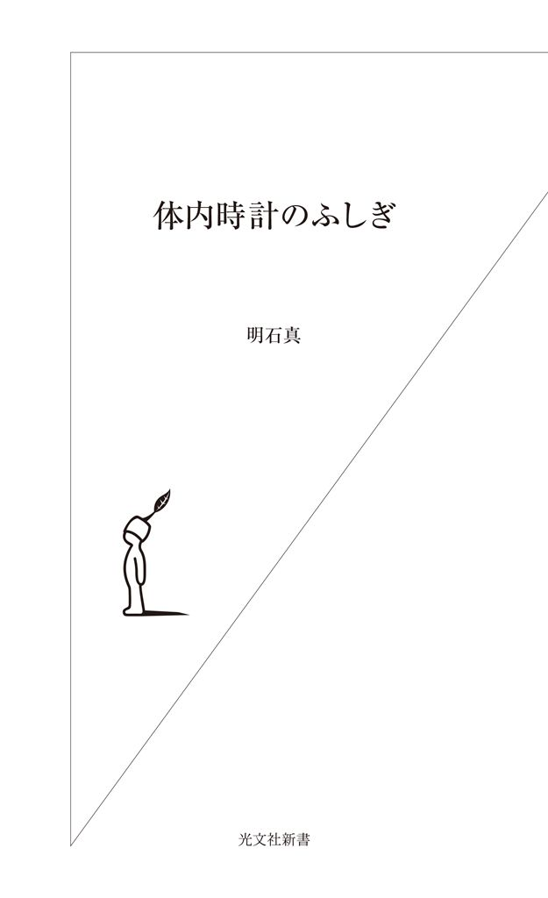
研究者が一般の方に向けて本を書くのは勇気がいることです。専門書であれば、読者は専門家が多いため、内容を専門用語で解説しても筆者の意図を理解してもらえます。
しかし、一般の方に「わかりやすく」伝えるという作業はなかなかの曲者で、本質のみを伝えようとして枝葉を落としているうちに内容が逆に伝わりづらくなってしまうだけではなく、事実と異なって伝わってしまう場合もあります。もし間違った記述を別の研究者が見てしまったら、信頼を失うことにもなります。だから、勇気がいるのです。
本書では、一般の方へ伝わりやすくするという思いで、私の主観的解釈を交えながらややシンプルに書き進めています。他の研究者からは、「まだそこまでは言えないだろう」という指摘があるかもしれません。また、「そこまで単純化できないだろう」という意見も聞こえてきそうです。ただ、本書は細部にわたって正確に伝えることよりも、おおざっぱな概念を伝えることを趣旨としています。
昼も夜もない生活環境が年々進行している一方で、最先端の研究成果はこのような生活環境が健康被害につながる可能性を強く指摘しています。科学的興味の解明に邁進するのが研究者の本分であることに疑いはありませんが、このような事実を一般の方に広く知ってもらうことも、研究者の責務の一つであると思っています。
この本によって、一人ひとりの方が、「規則正しい生活がなぜ健康に良いのか」、その理由を本当の意味で理解して、生活習慣を見直すきっかけにしていただければ幸いです。
さて、私は遺伝子などのミクロなレベルで体内時計のしくみを研究している分子生物学者です。私が最初に体内時計の研究を始めたのは１９９８年でした。24歳の時です。この研究にとりかかる前の私の体内時計に対する理解の程度は、読者の皆さんとほとんど変わらなかったと思います。それどころか、むしろ知らないくらいでした。
実際、若さにまかせて、体内時計などまったく意識せず、著しく乱れた生活リズムで過ごしていたと思います。当時のことを思い浮かべると、さまざまな心身の不調を感じていましたが、やはり若さゆえ、勢いで乗り切ってしまうことができました。
このような状態でしたから、当然ながら、体内時計が生物学の最先端の研究対象になっているとは思ってもいませんでした。体内時計の研究は、過去にさかのぼればきりがないのですが、主に１９６０年頃から偉大な先人たちによってコツコツと知見が蓄えられてきた、生物学の大切な一分野なのです。
１９９８年当時、私は大学院修士課程の２年生だったのですが、助手の先生のお手伝いの研究が一段落して、独りで黙々と次の研究テーマを探し始めていました。他の大学院生が当然のように博士課程への進学を目指しているなか、皆と同じようにそのまま進学するか、あるいは就職活動を始めようか、そういう迷いが大いにありました。家に帰ると就職案内の資料がドサドサと送られてきていたので、嫌でも就職のことを意識せざるをえなかったということもありますが、一方で、このままずっと研究を続けていく自信もありませんでした（実は現在に至っても、この不安は消えずに残っているのですが......）。
ただ、ある論文を読んだ時、研究意欲が急にぐんと高まるのを感じたのです。それは、スイスの研究グループから発表された体内時計に関する論文でした。それまで私は、体内時計の研究というものに対して、どこかぼんやりとした、捕らえどころのない、動物などの観察に終始するものだというような、漠然としたイメージを持っていました。
しかし、その時読んだ論文では、体内時計の研究材料として、培養された細胞を利用していたのです。つまり、体から体外に取り出された細胞であっても、体内時計の存在を遺伝子のレベルで観察できるという研究内容だったのです。
当時、私は生き物そのものを研究材料にするというよりは、シャーレや試験管を用いて、細胞内に存在する分子を対象とした実験に明け暮れていたので、その論文を読んでから、論文のデータが本当なのかすぐに自分でも試してみたいという衝動にかられました。
この時から今に至るまで、私は体内時計の研究を続けています。研究の対象は、体外で培養される細胞を対象とした研究からどんどん広がっていき、最近では人間の体内時計を調べる方法について研究しています。近年、アメリカやヨーロッパ、そして日本からのさまざまな報告によって、体内時計と健康との関係が次々と明らかにされており、「体内時計の診断」というものが現実的に求められつつあります。
私が発表した体内時計の診断法によって自分自身の体内時計を調べることに成功した時、それまでは単なる研究対象でしかなかった体内時計が、急に自分自身の問題として身近に感じられました。なぜなら、予想していたことではありましたが、その実験結果から、私の体内時計が夜型にずれていることがわかったからです。これによって、私は生活習慣を見直すきっかけを得たのです。科学的興味の対象として体内時計の研究を始めた私は、この時になってようやく自分にも体内時計が存在することを、本当の意味で実感することができました。
そして、このような研究がさらに進めば、体内時計の診断を誰もが気軽に受けられる時代がやってくるかもしれないと思いました。
さて、ガンや糖尿病などの現代病は、教科書的には大きく二つの要因に分けることができると考えられています。その一つ目の要因は、私たちの体の設計図である遺伝子に関連するものであり、これは「遺伝的要因」と呼ばれています。これに対してもう一つの要因は、私たちを取り巻く環境中の因子に関連するものであり、「環境的要因」と呼ばれています。これは、私たちの体を取り巻く病気の誘因に関わるすべてのものを示しています。例えば、細菌やウイルスのような生物学的な因子だけでなく、気温、湿度、化学物質、光環境、さらには食事のような生活習慣まで含まれます。
すべての病気は、この遺伝的要因と環境的要因によって引き起こされ、どちらの要因が原因となるかは病気の種類によって違います。例えば遺伝病と呼ばれる病気は、私たちの遺伝子の異常によって起こります。つまり、もともと個々人の体質が疾患の発生を規定しているため、環境中の因子が発症リスクに及ぼす影響は大きくないといえます。それに対して例えば食中毒等は、遺伝的な体質によって大きく変わるものではなく、環境的要因（細菌やウイルス）によってほぼ誰にでも等しく起こると考えていいといえます。ただ、実際には、この二つの要因の両方の影響を受けている病気が大半です。そして、多様化する現代疾患は、環境的要因による影響が大きいと考えられています。
通常、私たちの体を設計している遺伝子の構造は数百年程度では大きな変化は起きないと考えられます。特に人間は世代交代に時間がかかる生き物なので、遺伝的変化が人間の集団内に固定されるには、途方もない時間がかかると想定されます。つまり、言い換えれば、こうした遺伝的要因は、急速に増えてきた現代特有の疾患の原因である可能性はほぼないと考えられます。したがって、私たちを脅かす現代型疾患の原因は、環境的要因の中に存在しているはずです。この環境的要因の大きな一つとして、本書では現代特有の時間的環境と体内時計の関係について論じていきます。
「体内時計」という言葉を聞いたことがないという人はほとんどいないのではないでしょうか。しかし、この言葉には、「時計」という馴染みやすく、やや比喩的な表現が使われているせいか、正確な理解がされていないまま、かなり多様な意味で使用されていると思います。
一番よく見かけるのは、脳が感じる時間の長さをはかる感覚のようなものとして体内時計という言葉が使われるケースです。例えば、時計を見ないでどのくらい時間が経過したか正確に言い当てる、というゲームをしたことはないでしょうか。このような心理学的試み（心理学の専門家は体内時計とは呼んでいませんが）の際に、「体内時計」と呼んでいる人を多く見かけます。
この使い方がはたして正しいかどうかは私には分かりませんが、生物学の領域で体内時計と言えばまったく異なる現象を指します。生物学的な意味での体内時計とは、体の種々の機能や現象において、自然の周期的変化に合わせたリズムを発生させる生体機能のことを指します。
さて、生命進化に関与してきた因子は数多くあります。その中でも「時間」は、生命の淘汰に関わる大切な環境因子でした。自然の中には、生命にとって大切な周期的な時間があります。まず、地球の自転である24時間の周期というものは、動植物を問わず無視できないものです。また、月がどれほど生命に影響を及ぼしているかについては賛否両論ありますが、その公転周期の約１ヶ月という時間の単位も重要かもしれません。さらに、１年の周期も私たちの生活に深く関わっています。１年の間に、日の出や日の入り時刻だけでなく、気温も大きく変化し、さらには採取できる栄養素の種類も変わってきます。
人間の場合は、特に一日の周期が日々の生活に深く関わっています。それにもかかわらず、いまとても大きな問題となっているのは、私たちを取り囲む時間的環境が、近年、劇的に変化してきているという現実です。その最たるものが、昼も夜も関係ない「24時間社会」と呼ばれる環境です。すなわち、自然の中で生活していた際は存在していたはずの一日周期の環境変化が、人間が構築した人工的な時間的環境では失われてきているのです。
生活の中のこの急激な時間的環境の変化は、気が遠くなるほど長い時間を経て進化してきた私たちの体内時計のリズムとの食い違いを引き起こすことになりますが、この事態は私たちの体にどのような影響をもたらすでしょうか。実は、まさにこの事態が現代疾患の環境的要因の大きな一つになっていることが最近の研究によってよく分かってきたのです。
それにしても、体内時計はなぜ私たちの体にとって必要なのでしょうか。
生物には、恒常性（ホメオスタシス）という性質があり、体内の状態を一定に保っていることはよく知られています。その一つの例が体温で、私たちの体温は約37度に維持されています。生物の体は、気温や照度などの環境の変化や、摂食や運動などによる体内の変化などに頻繁にさらされていますが、生物の体内の状態は常に一定に保たれる必要があるのです。
では、周期的に変わるこのような体外および体内の変化に対して、私たち生物の体は常に受け身で応じているだけなのでしょうか。つまり、この変化にただ応答して、体内環境を常に一定に保つことだけに終始しているのでしょうか。
生命進化には競争原理が働きます。つまり、淘汰圧に耐えたものが結果的に繁栄するのです。だとすれば、生物も、環境の変化に対して受け身で応答するだけでなく、積極的にこの周期性をうまく利用できたものが生存競争において優位性を保つことができたに違いないでしょう。
自然環境の周期性において優位性を見出す一つの戦略として、「備え」というものが挙げられるかもしれません。例えば冬が来るのを予測するように、まだ雪が降る前から、一部の野生動物は自ずと備蓄をしておいて、体は次第に冬眠の準備状態に入ります。もし、動物が冬を予測できずに効果的に備えることができなければ、気温が低く、食べ物が少ない冬を越すことは容易ではないでしょう。働き者のアリと違って、キリギリスは冬が来てから慌てて準備しても間に合いませんでした。
生物の自然環境への備えは、大きく二つの戦略に分けることができるかもしれません。一つは、来たる自然界のイベントを予兆するような環境中のなんらかの変化を察知して、生物の行動学的もしくは生理学的備えが始まるケースです。先ほどの越冬の備えの例では、気温の低下や日照時間の変化を引き金として、動物の越冬に必要な本能行動にスイッチが入るのでしょう。
環境中の予兆因子を読み取るこのような戦略とは別のもう一つの戦略は、体内にある時計によって予兆因子に依存せずに独自に時間を計測する方式です。このシステムこそ、〝体内時計〟と呼ばれるものです。仮に環境中の予兆因子を察知できなくても、自律的な計時機能があれば備えが可能になるという大きな利点があります。自然の時間にはさまざまな周期長のものがあるので、体内時計にもさまざまな周期をはかるものがあるかもしれません。
私たち人間も、一日をはかる体内時計のおかげで、かつては一日の環境変化にうまく適応していたはずです。そして人工的な環境に住むに至った現在も、私たちの意志とは無関係に、この一日をはかる体内時計は私たちの体の中で自律的に時間をはかり続けています。
例えば、時間の情報源となりうる要因を遮断した洞穴に人間を閉じ込めて、何週間にもわたって毎日の体の状態変化を観測し続けたとします。すると、実に規則正しく「およそ」24時間周期で体の状態変化のリズムが現れてくることが分かっています。このように、体外からの時間情報がたとえ皆無であっても、約一日のリズムが存在することははっきりと観察できるため、私たち現代人の体内には一日をはかる時計があることが分かります。
本来は私たちの生存を有利にする体内時計ですが、現代のような昼も夜も不明瞭な人工的な時間環境においては、むしろ病気の原因をつくりだす環境的要因になることは、医学・生物学の研究者の間ではよく知られた事実となってきています。ただ、このことは医療の最前線にいる現場のお医者さんには、意外なことにあまり浸透していません。それは、現代の医療が「病気を治す」ことに強く意識が向いており、疾患予防や先制医療というものをあまり重視していないことに原因があると推測されます。
本来であれば、体内時計の本質的理解にもとづいて時間的環境を望ましい状態に保つことは、病気の環境的要因を改善することになるため、現代人の病気を防ぐという点において決して無視できないことです。
そして、インターネットの台頭などにより24時間社会がとどまることなく進行する現代においては、私たちの一人ひとりが体内時計をよく理解して、生活環境や生活習慣を見直すことで、病気のリスクを減らすことが必要であると言えます。
では、現代社会において体内時計がうまく機能しないと体に何が起こるのか、これから説明していきたいと思います。
体内時計のふしぎ 目次
現代の日本は一時の目覚ましい経済発展からは衰退したかもしれませんが、今もなお豊かな生活を享受できていることに異論を唱える人はいないでしょう。
実際、日本ではどこに行ってもあらゆる物にあふれています。近所のコンビニやスーパーに行けば、食糧をはじめとする生活必需品はほぼ揃えることができます。病院もあちこちにたくさんあり、僻地でなければ医療に困ることはないでしょう。医療機器は充実し、医療の技術が進歩し、医薬品も多数開発されてきました。お医者さんや看護師さんも近所にたくさんいます。それなのに、私たちは未だ病気に怯える暮らしを続けています。テレビやインターネットから流れてくる、病気に関するニュースがいかに多いかということからも、それを納得できるでしょう。
厚生労働省の調査によると、現代の日本では、老衰、すなわち自然死は実に約３％に過ぎないと報告されています（図１）。つまり、多くの人は何らかの病を抱えて死に至るということです。これまで私たちの社会は、医学に莫大なお金を投資してきました。にもかかわらず、病が一向に減る気配がないというのは一体どういうことでしょうか。
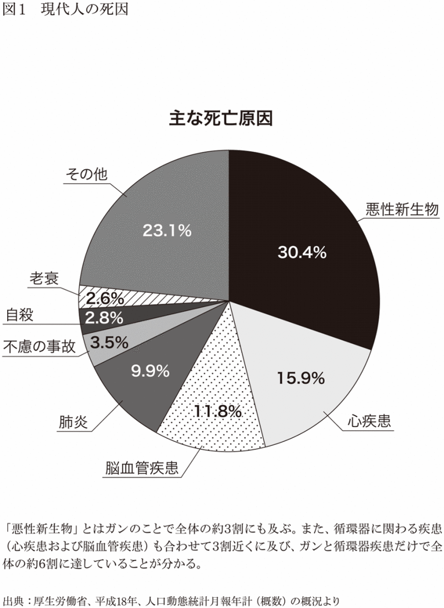
さて、生命は約40億年前に地球上に現れたと言われています。そして、ヒト（学術的には生物名はカタカナで示します）の起源と考えられている猿人は数百万年前に出現したと推定されています。他方、私たちヒトの一生はせいぜい長くても１００年程度であり、私たちが日々の生活で関わる時間の単位はもっと短いものです。ですから、「40億年」や「数百万年」といったスケールの時間を実感するのは難しいものです。ただ、この数字からは、ヒトがとてつもなく長い時間をかけて進化してきたということは想像できると思います。
私たちの体の設計図である遺伝子は数万種類あると言われていますが、すべての遺伝子はほんの少しずつ変化する性質を持っています。この遺伝子の変化が精子や卵子などの生殖細胞に受け継がれると、次世代に伝わっていくことになります。
生殖細胞がつくられる際には、すべての遺伝情報を次の世代に伝えるために、すべての遺伝子が複製される必要があります。それから、生殖細胞が分裂によってつくられる際に、これらはそれぞれの細胞に分配されます。しかし、複製される遺伝子は高等な生物では数万種類に及ぶため、複製の過程において、ある頻度でエラーが生じます。このエラーはほとんど意味のない場合も少なくないのですが、遺伝子の機能を少し変えることもあれば、エラーの起こる場所によっては疾患として問題を起こすこともあります。このエラーが生殖細胞で起これば、それは結果的に次世代、すなわち子供に受け継がれることになります。遺伝子は体の設計図ですから、このようなことが繰り返されることで、世代が変わるごとに、体の構造から性質に至るまで少しずつ変わっていくことになります。
また、このような偶然的な変化（複製時のエラー）とは別に、ヒトのように、異性間での交配によって繁殖が行われる場合は、遺伝子の組み合わせのシャッフルによって無限とも言える変化を次世代に生み出すことが可能になります。
先ほど、皆さんの体に存在する遺伝子の種類は数万に及ぶと述べましたが、それぞれの遺伝子には、父親から受け継いだものと、母親から受け継いだものが存在します。つまり、それぞれの遺伝子について二つずつ持っていることになります。そして、子供に伝わる際には、それぞれの遺伝子について、二つのうちどちらかが生殖細胞に入ることになります。そのどちらが子供に伝わるかは基本的にランダムです。そうなると、子供に伝わる遺伝子の組み合わせはまさに無限大ということになります。
例えば、説明を単純化するために、遺伝子が３種類だけの場合で考えてみます。大文字が父親から受け継いだ遺伝子、小文字を母親から受け継いだ遺伝子としてアルファベットで表してみます。すると体の中には、Ａとａ、Ｂとｂ、Ｃとｃという３種類の６遺伝子が存在することになります。それぞれ、二つのうちどちらかが生殖細胞に分配されるとすると、子供に伝わる遺伝子の組み合わせは、ＡＢＣ、ＡＢｃ、ＡｂＣ、Ａｂｃ、ａＢＣ、ａＢｃ、ａｂＣ、ａｂｃと、８通りあることになります。遺伝子の数が数万種類となれば......確率的に二人と同じ子供は生まれてこないということになります。
このような遺伝子そのものの変化、および遺伝子の組み合わせの変化などにより、世の中には、特徴は似ているとしても、まったく同じ顔を持つ人間はいないということになります（例外として、一卵性の双子ならばほぼ同じ遺伝子を持っていることになります）。これがヒトの個性であり、多様性です。
この多様性は、生物が環境の変化に備えて獲得した戦略です。「獲得」という言い方は、生命があたかも意志を持って変化してきたように聞こえるので、正確な言い方ではないかもしれません。獲得したというよりは、このような形質を持つ生物が地球上で生き抜くために有利だったので、これまで存続できたという方が好ましい表現でしょう。
では、なぜ、このような形質を持つ生物が「有利」だったのでしょうか。それにはさまざまな説が存在するために説明するのは難しいのですが、あえて一言で言うなら、集団の中にさまざまな個性をつくり出すことのできる生物種が、環境が変化しても生き残ることができたということになります。
極端な例を挙げましょう。例えば地球上に、
（１）暑さに強い集団
（２）寒さに強い集団
（３）両方が混ざった集団
以上の三つの集団が存在するとします。異常気象が起きて気温の低下が続いた場合、生き残るのは（２）と（３）の集団になります。逆に、気温上昇が長期にわたって続いた場合、生き残るのは（１）と（３）の集団になります。ここから分かるのは、気温の低下が続いても、逆に高温が続いても、有利なのは（３）の集団であるということです。つまり、いろいろな個性を持つ個体が混ざっていれば、どれかが生き残ることで種の絶滅をさけることができるのです。
このように、生物は他の生物と切磋琢磨しながら、環境の変化によって絶滅しないように多様性を維持しているうちに、途方もない時間をかけて地球環境にフィットするように進化してきたといえます。
一方、この地球環境も変化してきたわけですが、その時間スケールはゆっくりとしたものです。だから生物は、多様性の戦略とともに時間をかけて対応することが可能でした。しかしながら、ヒトはさまざまな科学技術を発達させ、自身の生活する環境を激変させてきました。特に、科学技術の進歩によってもたらされた近代以降の変化のスピードは、生命史上ではおよそありえなかったもので、じっくりと進化してきた私たちの体ではとても追いつくことができないものでした。
そしてこれこそが、現代病を引き起こす原因です。
まず、私たちはこの数百年の間に農業の技術を飛躍的に高めました。それによって、特に先進国は飽食の時代を迎えました。また、照明の発達によって好きな時間に活動するようになり、交通機関の普及や仕事のスタイルが変化したことで、歩く機会がそれ以前の時代と比べて格段に減少しました。そして、テレビやゲーム機のような娯楽が発展し、インターネットによって24時間いつでも情報通信を行うことができるようになりました。
多くの現代病は、このような科学技術の発展によってもたらされた生活環境の劇的な変化が原因で起こっていると考えられています。では、このような環境の変化がなぜ現代疾患の原因と考えられるのか、その理由をこれから順に説明したいと思います。
古来、人類は、食べるものにも恵まれなかったために栄養状態は不十分であり、十分に整備された住居もなかったために厳しい自然環境にさらされ、そして医療の施設も技術も未熟であったことから現代のような高度な医療を受けることはできませんでした。しかし、第二次世界大戦後、私たちの生活環境は急速に変化していきました。特に我が国は、未曽有の経済発展を成し遂げ、身の回りに食べ物があふれるようになりました。また、住宅の設備も過去と比べてきわめて高度になっており、冷暖房の整備により快適な気温の中で過ごすこともできます。さらに、西欧医学の導入による医療の発展は目覚ましいものがあります。その結果、例えば結核のような生命を脅かす疾患だったものが、今となっては過去のものとなりつつあります（図２）。
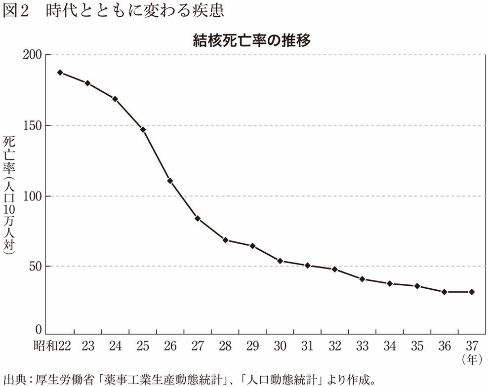
それにもかかわらず、私たちは病気のリスクから解放されていません。それどころか、健康問題に対してますます敏感になり、健康食品などに対する関心も年を追うごとに高くなっています。これは、過去の疾患は克服された一方、生活環境の変化によって私たちを脅かす病気の種類が変化していることを示しています。
例えば、今では糖尿病、心血管病、さらにガンが一般的な病気となっていますが、つい50年前までの罹患率は現在よりもずっと低いものでした（図３、ここでは糖尿病を例に挙げた）。また、現在では、うつ病や双極性障害（躁うつ病）のような気分障害もどんどん増え続けています（図３）。自殺者統計が毎年ニュースで報じられているように、その数は毎年３万人前後を推移していますが（これは自然死とほぼ同じ割合）、この原因には、気分障害が潜在的には大きな部分を占めていることが知られています。さらに、睡眠障害の増加も目立っています。睡眠学者の研究によると、現代日本人の２割は不眠を患っており、約７割は睡眠になんらかの問題を抱えていると言われています。
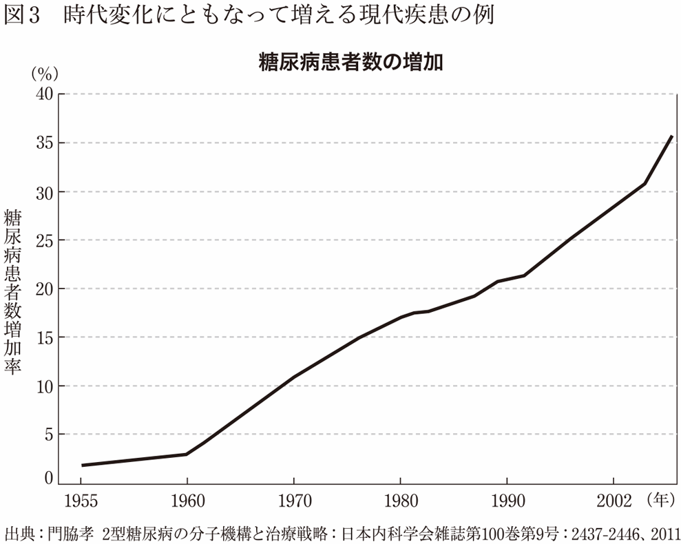
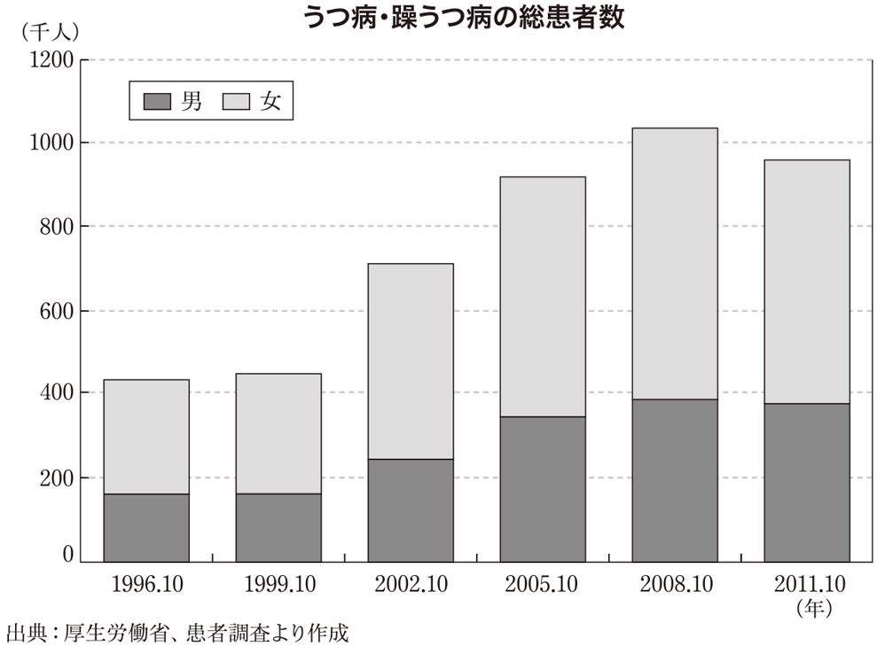
このように、私たちを脅かす病気は、科学技術によってもたらされた急激な生活環境や生活習慣の変化によって、その種類がどんどん変化してきたのです。医療の対象とする疾患の種類が時代とともに変化し続けているということは、医学研究もそれに合わせて対象が変わっていくことになります。このことからも、医学の必要性が色あせることは未来永劫ないようにさえ感じます。まさに、イタチごっこのような状態です。
では、病気の種類が変わってきた背景には、具体的にはどのような環境の急激な変化があるのでしょうか。まず考えられるのは、医療の発達そのものが環境的要因になっているという点です。皮肉なことですが、医療環境が発展したために寿命が延び、そのことが病気の多様化に影響しているのです。つまり、寿命が延びたことで、これまでは多くの人が遭遇せずに済んでいた病気が顕在化してきたということです。確かに、心血管病やガンが高齢者に多いという事実と照らし合わせると、その説明は的を射ていると言っていいでしょう。
ただ、これらの疾患は、徐々にですが若年化が進んでいるという事実にも目を向けなければなりません（図４、ここでは子宮頸がんを例に挙げた）。したがって、医療の発展が病気の多様化をもたらしているという説明は、原因を十分に述べているわけではありません。また、糖尿病に関しても、寿命延長という理由だけではとても説明できないほどの凄まじいスピードで罹患率が上昇しています。実際、糖尿病にかかる人たちの年齢層は幅広いものとなっています。また、気分障害や睡眠障害の増加というものが寿命延長と相関が高くないことは想像に難くはないと思います。事実、いずれの疾患も、罹患者の年齢層は若い世代にも及んでいます。つまり、医療の発展による寿命の延長以外にも、病気の多様化の原因となる環境的な要因があると考えられるのです。
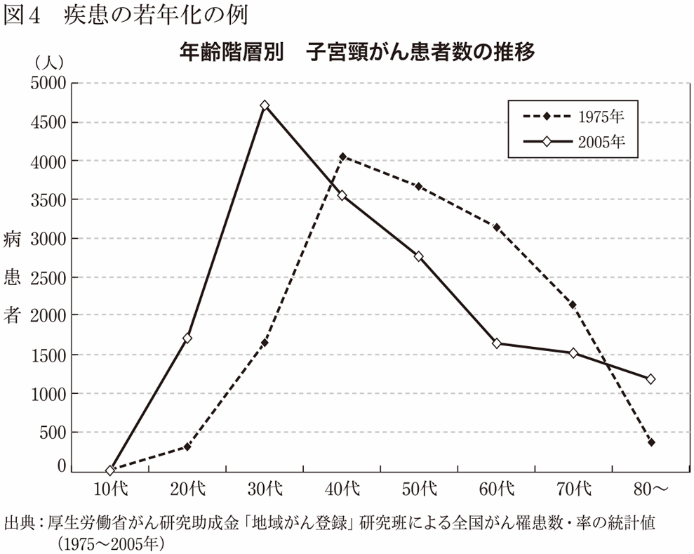
医学の世界でよく説明される現代特有の病気の原因となる環境的要因は、主に現代人特有の生活習慣の中にあると考えられています。すでに述べたように、進化の理屈で考えると、長い年月をかけることで、私たちの体は自然環境の中でうまく働くように少しずつ形作られてきました。しかしながら、現代においては生活環境の変化が目覚ましく、体の変化がまったく間に合わないことになります。
生活習慣の中で具体的にどういうものが病気の原因になっているかというと、まず一つ目の大きな要因として、やはり食習慣が挙げられます。ただ、興味深いことは、食環境が豊かになったとは言うものの、総摂取カロリー自体は過去と現在を比べてみても、そんなに変わっていないということです。むしろ、ここ最近は減ってきている様子が見てとれます。
では、何が問題なのでしょうか。それは、食事の内容です。つまり、現代人の動物性脂肪の摂取量が急激に増えてきているという問題です。私たちの体は、特に日本人の体は肉食仕様ではありません。トラやライオンのように大量に摂取した動物性脂肪を体内でうまく処理できないという特徴を持っているのです。そのため、動物性脂肪を過剰摂取すると、その脂肪分が血中にたまることになり、その結果、動脈硬化の原因や糖尿病を引き起こす原因になります。
この食習慣に関連し、二つ目の環境的要因となっている生活習慣は、運動不足だと考えられています。たとえ動物性脂肪や糖分を多く摂取したとしても、運動をすればエネルギーに変換されて消費され、かつ、持続的に行えば筋肉が多くなり、体質が改善されて基礎代謝量も高くなります。しかし、現代の私たちの生活というのは、自家用車の普及や、仕事の形態の変化によって（つまりデスクワークの増加など）、運動する機会を失っています。
そして、三つ目の環境的要因となっている生活習慣は、心理的ストレスであると言われています。しかし、この要因については、私には納得できる部分と納得できない部分があります。なぜなら、食料不足や病気に悩まされて死の恐怖に直結するリスクを抱えていた昔の人間よりも、物質的に恵まれている現代人の方が大きいストレスを抱えているということに対して違和感があるのです。しかし、それはおそらく、今と昔ではストレスの種類が異なるという点にあるのでしょう。
例えば、現代社会は高度に秩序化されているため、人間関係によって受けるストレスが増加していると言えるかもしれません。また、現代の仕事の多くはオフィスでの事務作業が多く、昔の体を使った仕事とは異なる種類のストレスを受けていると想像できます。さらに、インターネットが普及して便利になった一方、職場ではもちろんのこと、職場以外でもメール等への対応に追われる日々を送ることになりました。このような習慣も、現代特有の新たなストレスの原因なのかもしれません。生命の危険に直結しないかもしれませんが、こうした小さな複数の新種のストレスが「慢性的」に続くことが、現代特有の疾患の原因になっていると考えられます。
以上のように、三つの生活習慣を現代疾患の環境的要因として説明してきましたが、私たち時間生物学者（体内時計を研究する生物学領域を「時間生物学」と呼びます）は、ここで紹介した三つの要因に加えて、「体内時計」という四つ目の要因に注目しています。これが、本書のテーマです。
私たちヒトは昼行性の生き物です。私たちの体は、昼間に活動して夜に休眠するようにプログラムされています。これは、何億年もかけて進化の過程でヒトの遺伝子の中にプログラムされてきたものです。
ところで、昼夜逆転の生活を何年も続けていれば、ヒトは夜行性の生き物になれるのでしょうか。結論を先に言えば、そのようなことはまずありえないでしょう。人間は照明装置のおかげもあって夜更かしできますが、昼行性の生き物は基本的には夜になると眠りに入ります。したがって、人間だけが特別な生き物だと考えるには無理があります。本来であれば、他の昼行性の生き物と同じように、夜になって暗くなれば寝るように体ができているはずです。
本章の冒頭で説明しましたが、科学技術の発展は私たちをとりまく環境を劇的に変化させることで、思わぬ形で、知らず知らずのうちに私たちの健康を脅かしています。場合によってはそのこと自体に気がつくまで、私たちは多くの時間を費やすことがあります。どのような科学技術も、使い方次第で私たちの生活を豊かにするものもあれば、逆に大きな害を及ぼすものもあることは歴史的にもよく証明されていることです。
例えば、ダイナマイトは鉱山の採掘に利用され、原子力は莫大なエネルギーを現代社会にもたらしました。しかしながら、ダイナマイトや原子力がひとたび戦争に利用されれば、殺傷能力がきわめて高い兵器になってしまうわけです。
宇宙開発もそうです。この開発には、人類のあくなき科学的探究という素晴らしい一面があると同時に、今や国防の議論は宇宙の空域まで考慮しなければならなくなってきました。
それだけではありません。病気の治療のためにウイルスのゲノム配列が解読され、ウイルスを制圧するためにタンパク質の機能が明らかにされると、今度はその情報を利用して、新しいより強力な殺傷能力を持つ生物兵器の開発に利用される可能性も示唆されています。
このように、科学技術が積極的に「悪用」されなくとも、私たちの生活の中には利便をもたらしてくれる一方で、実は有害な作用をする科学の産物がたくさん存在しています。恐ろしいのは、この有害性の問題が発見されるまでにかかる時間がとても長いために、また、因果関係が高度に証明されるまでにかかる月日も短くはないために、その危険性が公に認知されるまでに被害が拡大する傾向があるということです。
例えば、アスベスト（石綿）による中皮腫の被害などは、まさにその一例であると言えるでしょう。アスベストは発ガン性があるという認識で使われていたはずはなく、犠牲になった方の無念は計り知れませんが、アスベストと中皮腫の因果関係が科学的に証明されていなければ、アスベストが私たちの周りでさまざまな活用をされていることから考えて、被害はさらに拡大していたでしょう（実際は発症との因果関係が証明できないだけで、被害者はずっと多い可能性はあります）。
この他にも、ハウスダストが人体に及ぼす影響が分かってきたのは、ここ最近のことです。また、食品添加物について消費者の意識が高まり、その危険性が言われ始めたのも、実際に使用されてきた期間に比べれば、ごく最近であると言うことができます。
つまり、科学の産物で、実は有害な作用を及ぼすものを日常的に使い続けていた場合、私たちの体はその害が発覚するまでの間にダメージを蓄積し続けるということになります。しかも、人体に及ぼす因果関係がはっきりしなければ、「グレー」という判定だけでは不十分で、利便性が優先されて使い続けられることになります。
先ほど例に挙げたダイナマイトや原子力の破壊力は恐ろしいものですが、このように、私たちの身の回りで日常的に当たり前に使われている衣食住に関わる科学の産物も、気づかないうちに私たちを脅かしていると言えるでしょう。そして、先に述べた現代疾患の環境要因の大きな部分を占めている三つの生活習慣、すなわち、食習慣の急激な変化、運動不足、そして心的ストレスなどは、まさにこのような科学技術の発達による生活環境の急激な変化によってもたらされたのです。
では、体内時計の機能を妨げて、現代疾患のリスクをもたらしている科学技術とはどのようなものでしょうか。
それは、照明です。先ほどのさまざまな科学技術と同様、エジソンが白熱電球を１８７９年に公開した時に、健康に害を及ぼすなどということを危惧した人は多くはいなかったと想像します。それよりも、休眠時間でしかなかった夜の時間を、照明によって活動時間に広げられたことだけが注目されたのではないでしょうか。
実際は、当時の白熱電球では、その照度および波長の観点で考えると、体内時計に与える影響は小さかったと想定されます。しかしながら、より明るい、より有害な波長を含む照明が、この発見を機にもたらされたわけです。
光は健康において脅威でありながら、有害であるという感覚を持ちにくいものです。光はあまりにも身の回りにあふれている、当たり前の存在です。目に入れても、皮膚に当てても痛くも痒くもありません。
室内照明がない家というのは、もはやほとんど存在しません。テレビはもちろんのこと、最近ではパソコンや携帯電話のような光を間近で発する機器の使用が、あまりにも当たり前になっています。でも、キャンプに出かければ、あるいは開発途上国に旅行に行けば、夜に光があふれる生活というのは、自然の環境と比較するときわめて異常であることを認識することができるでしょう。
では、私たちはどのくらい異常な光環境の中で生活しているのでしょうか。まず、私たちが毎日多くの時間を過ごす室内の照度は、室内照明がついている状態では数百ルクス程度なのに対して、晴天時の屋外（自然環境）は１万ルクスを超えます。すなわち、照明がついている室内よりも屋外の方が数十倍明るいということになります。それに対して、夜間の屋外（自然環境）の照度は最大で数ルクス程度です。ということは、室内照明に対して１００分の１以下ということになります。これらから、私たちの生活している光環境がいかに異質であるかよく分かると思います。昼間の照度としてはきわめて弱く、夜の照度としては非常に強い光環境の中で、一日の多くの時間を過ごしているのです。つまり、一日のメリハリのない光環境にいるということです。
後に述べますが、朝の強い光は体内時計を朝方向に、夜の光はたとえ数百ルクス程度の照度でも体内時計を少しずつ夜方向に修正すると言われています。この性質によって、自然環境下において体内時計はうまく調節され、体の機能の一日のリズムが自然環境のリズムからずれないようになっているのです。
一方、現代人を取り囲む光環境においては、自然の光環境に比べて、朝の光としては弱く、夜の光としては強すぎるのですから、自ずと体内時計が夜型になってしまう環境であると言えます。そうすると、夜型にずれた体内時計と実際の生活のリズムの間にずれが生じてしまうことになります（図５）。
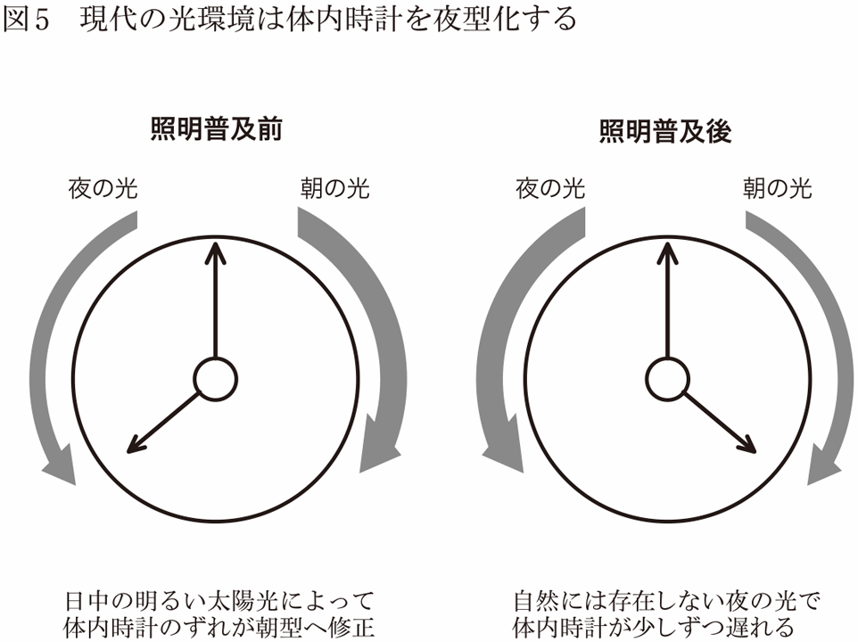
さらに、室内照明のオン・オフは個々人の判断に委ねられています。自然環境では、太陽は個人の希望など聞き入れてくれず、時間が来ると沈み、そして昇ってきます。ダラダラと夜間まで活動することは許されません。ところが、私たちは、指先一つで、日の出や日没を自由自在にコントロールできるのですから、好きな時間に活動して、そして寝ることができるのです。特に自制心が崩れる週末に生活リズムは容易に乱れ、体内時計のリズムとのずれが日常茶飯事に起こることになるのです。
このように、現代の光環境においては、知らず知らずのうちに「体内時計の夜型化」が進むことで、また、「容易に乱れる生活リズム」によって、体内時計のタイミングと実生活習慣のタイミングの間にずれが頻繁に起きてしまっているのです。これはまさに、海外旅行をせずして時差ぼけになっている状態だということができます。
エジソンの発明はきわめて多くの幸を人類にもたらしたことは疑いないことでしょう。しかし、この発明がきっかけとなって改良が進み、それによって「光」の使い方を誤ると、その光が私たちの健康を脅かす存在にもなるのです。この光害に対する認識は世界的にきわめて遅れていて、現在でも24時間社会化はますます進行していると言えます。ただ、ここ最近になってようやく、この異常な光環境というものが体内時計に作用し、時差ぼけのような状態を日常的につくり出すことで、健康を脅かしている疾患の環境的要因の一つになっていることが少しずつ認識されてきました。つまり、食生活の変化や運動不足といった広く認知されているものだけでなく、見逃されている環境要因があるということです（図６）。
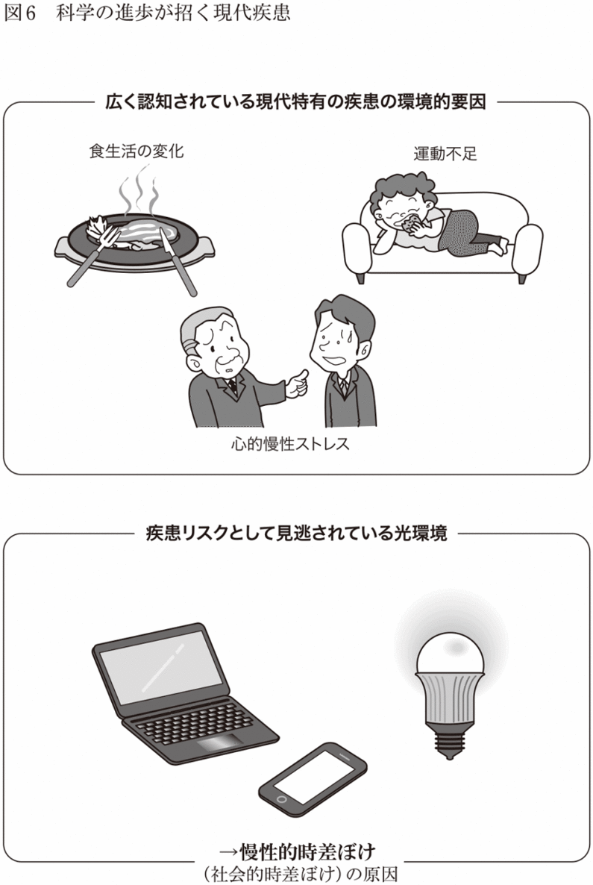
では、ここからは、体内時計がどのような病気に関わっているのか、そして、体内時計に着目することによって病気をどのように防ぐことができるのか、なるべく平易に説明していきたいと思います。
体内時計と聞けば〝時差ぼけ〟というキーワードを連想する人は多いのではないでしょうか。そうです、体内時計の存在を最も体感できるのは、この、時差ぼけの時です。飛行機に乗って外国に行った時に、あるいは外国から帰ってきた時に起こる、時差ぼけ特有のあの不快な経験をした人は少なくないと思います。
時差ぼけは、いうまでもなく、朝、起きることができない、夜、なかなか眠れない、仕事や勉強に集中できない、食事がノドを通らない、食べても消化不良感が残る、便秘になる、頭がぼんやりする、体が重くてたまらないなど、さまざまな症状として表れます。この現象は、体内時計が体調と関係していることを最もよく表している例かもしれませんが、体内時計がなぜ疾患に関わってくるのか、この時差ぼけを理解することで納得できるはずです。まずは、時差ぼけを理解するために、体内リズムと生活リズムという言葉について確認したいと思います。
体内時計がつくり出す身体の一日の体内リズム（＝専門用語では概日リズム）には、実感できるもの（覚醒と睡眠など）と、実感としては分からないもの（体温、血圧、代謝、消化、免疫など）とに分かれます。実のところ、実感できる体内リズムの方がはるかに少ないと言えます。
例えば、体温のリズムを実感できる人は少ないのではないでしょうか。体温は恒常性（ホメオスタシス）によって、37度付近で保たれていることはよく知られていますが、実際は早朝に低く、夕方に高いという体内リズムがあり、最大で約１度近く差があることはあまり知られていません。このわずか１度という温度変化は、細胞の中で起こっている化学反応に対して、十分意味のある影響を与えます。すなわち、細胞が活動するべき時間帯には体温を高め、休むべき時間にはクールダウンしているのです。このように実感を伴わないものであったとしても、体にとって大切な体内リズムは、体温以外にも無数にあることが分かってきています。
体内時計がつくる体内リズムに対して、生活リズムという言葉があります。明確な定義はありませんが、一般的に生活リズムとは、起床、摂食、排泄、入浴、運動、学習、労働、社会的交流、就寝などのあらゆる生命活動において、それらが実施される一日の中でのタイミングのことを意味します。
例えば、朝型の生活リズムとは、比較的朝早く起きて、比較的早く寝る生活パターンのことを一般的に意味します。「朝型」という表現は相対的なものでもあるため、人によって基準が変わると思いますが、一般的には朝６時くらいまでに起床して活動する生活リズムを指すのではないでしょうか。
この二つのリズム、すなわち生活リズムと体内リズムの関係が、時差ぼけを理解するためにとても重要になってきます。
規則正しい生活をしている人の場合、日本にいる時は体内時計がつくり出す体のさまざまな機能のリズム（体内リズム）と、生活リズムのタイミングが基本的にはだいたい合っている場合が多いでしょう。
もっと具体的にイメージするために、体温や血圧を例に考えてみましょう。先ほど説明したように、体温を含むさまざまな生理機能には体内リズムがあります。体温が高い時は細胞の働きが高まり（もちろん、37度を超えると体の具合が悪くなりますが）、血圧が高くなると血の巡りが良くなり、物質の体内循環が活性化されます。日本にいる時の体内リズムでは、早朝は一日の中で最も体温と血圧が低いため、体の活動力は低い状態になります。そして、目覚める頃からこれらは上昇を始め、夕方をピークに下がり始めます。
このような体内時計がつくり出す体内リズムに対して、実際の生活リズムの方は、ちょうどこの体が活性化されるタイミングに合うように、仕事、学習、運動などが行われることになります。そして、夜、眠る頃には体温も血圧もすっかり下がっています。まるで、体が活動するタイミングを予測しているかのように、自動的に体内リズムの制御が行われているのです。このように、日本で生活している際は、体内リズムと生活リズムが同調（同じタイミング）しているので、おおむね快適に生活することができます。
体内時計がつくる体内リズムは安定的なので、朝型の生活リズムの人が急に夜型に、夜型の生活リズムの人が急に朝型に変えたとしても、生活リズムの変化に合わせて体内時計も修正されるには時間がかかります。「時計」という言葉がついていることからも分かるように、体内時計が朝型や夜型にコロコロと変わるようでは、時計としての機能を果たしてくれません。このような時計の安定性は本来大切な意味を持っているのですが、実は時差ぼけを生み出す原因になっているのです。
海外に行くと、現地の時刻に合わせて活動すると生活リズムは大きく変化しますが、体内時計がつくる体内リズムの方はというと、現地の新しい生活になかなか合わせてくれないので体調不良になるのです。先ほどの体温や血圧の例で考えると、海外旅行先では起きて活動する時間であるのに、体温や血圧は日本時間のままであるため低い状態にあります。そのため、だるい体にむち打って起きることになります。
日本での生活をイメージしてください。例えば、ふだんは朝の７時に起きて夜の12時に寝ている人が、夜中の１時に起きて活動するとなると、体の調子が悪くなることはすぐに想像できるのではないでしょうか。
一方、眠りのスイッチには、体温の低下と同時に、メラトニン（間脳の松果体より分泌される、眠りを促すホルモン）の血液中濃度が高まる必要があると言われています。このメラトニンも体内時計によって制御されているため、海外旅行先でもしばらくは日本での生活リズムに合わせて分泌されます。ですから、ふだんは朝７時に起きて夜12時に寝るような生活習慣の人が急に夜の９時に寝ようとしても、メラトニンの分泌量は低いにもかかわらず、体温と血圧は高く、体は活動的な状態のままなので夜は眠れないのです。
起床・就寝だけの問題にとどまりません。例えば、日本時間の夜中の３時からの会議に参加して集中できる人がどれほどいるでしょうか。脳は休みに入っている時間です。また、夜中の２時にご飯を食べれば、消化管の活動が下がっていますから、消化不良を起こすのは当然ではないでしょうか。体中の細胞や臓器にも活動と休眠のようなリズムがあるため、これらが休むべき時間に誤ったタイミングで酷使すれば、先に述べたようなさまざまな体調不良が当然起こることになります。
ここまで、体内時計が疾患に関わることを理解するための予備知識として、時差ぼけがどのようにして起こるのかを説明してきました。この時差ぼけという言葉から想像されるように、この現象は、自分が生活する国との時差が大きな外国へ海外旅行に行った時だけの特別な状態だと感じるかもしれません。しかしながら、現代人の多くは、毎日時差ぼけになりやすい環境で生活していると言えます。
確かに海外旅行の時のように、生活リズムと体内リズムがいきなり極端にずれることは多くないかもしれません。ただ、ずれは大きくなくとも、「慢性的」であることが現代人の生活習慣病に大きな影響を与えていることを、これから説明していきます。
飛行機での場合とは異なり、船で長い時間をかけて海外に行く際には、体内時計が毎日少しずつ修正されるので、現地の生活リズムに馴染むことは難しくありません。世界中を船で旅したコロンブスやマゼランは、ひどい時差ぼけに悩まされたことはなかったはずです。
一方、体内時計は、急激な生活リズムの変化には対応することができません。なぜなら、繰り返しますが、体内時計は安定した時計であるため、機械時計のように時刻を自由自在に変更することはできないからです。飛行機で海外にあっと言う間に到着してしまうと、時差ぼけが起こるのはそういう理由です。
飛行機によって海外旅行に行くこともなく、また室内照明によって体内時計が攪乱されなかった時代では、体内時計の存在を知って対応する必要はなかったでしょう。なぜなら、ヒトは太陽のリズムで生活せざるをえなかったのですから。夜になれば真っ暗になり、寝るより他になかったに違いありません。焚き火で夜を楽しもうとしても限界があります。照度も高くないので、自然と眠気が高まります。そうすると、結果的に睡眠時間もしっかりとることになり、待ちわびた朝日とともにスッキリ目が覚めて、早速活動を始めていたに違いないでしょう。
自然の中で生活する際には、体内時計があることによって、スムーズに生活を送ることができます。なぜなら、体内時計が太陽のリズムに合わせて、まるで一日の生活リズムを予測しているように、体の状態をタイミング良く整えてくれるからです。
ところが、現代人は夜中でも照明をつけて好きなことができます。夜間の高い照度によってメラトニンを抑制して眠気を取り払うことができ、仕事や学校のために日中はできなかったことができる楽しい自由な時間を満喫することも可能です。すべては自分次第ですから、ついつい夜更かしをしてしまうのです。
夜更かし生活は体内時計の針を夜型にずらします。夜更かし生活が土曜日、日曜日と二日続くと体内時計の針は夜型にずれるため、早起きしなければならない月曜日の朝は、当然、辛く感じます。これは小さな時差ぼけと同じ状態です。平日が過ぎるにつれて、平日の生活リズムに合うように、体内時計がつくる体内リズムのタイミングがだんだん調節されてきますが、また週末になると同じ状態に陥ることになります。
日々の生活リズムが不安定であると、小さな時差ぼけにさらされる日数がとても多くなります。毎週時差ぼけを繰り返しているならば、一年の半分くらいは時差ぼけの状態で過ごしているかもしれません。体内時計がつくる体の機能のリズムと、実際の生活リズムのタイミングが合わないと、思いがけない病気のリスクを高めることになります。
体内時計とそれぞれの病気の関係について、現在までに分かっていることについては第２章で詳しくお話ししますが、ここでは、体内時計が原因となって病気が起きる概念に触れておきましょう。
「エントロピー」という言葉を聞いたことがある方も多いと思います。エントロピーとは、無秩序さや乱雑さの度合いのことです。よくある譬えに、せっかく綺麗に片付けた部屋も、時間が経つと整理が必要になるまでに散らかるという話がありますが、この乱雑さが広がっていく現象がエントロピーです。
私たちの住む世界は、このエントロピーがどんどん広がる世界だと言われています。何が言いたいかというと、私たちの体が体として保たれているのは、このエントロピーの増大から体を守るために、体の中に恒常性（ホメオスタシス）が備わっているからです。
例えば、運動や入浴で体温が一時的に変化したとしても、恒常性によって体温はすぐに37度付近に戻ります。これと同様に、体が傷ついても傷が治るのも、恒常性のおかげと言うことができるでしょう。もちろん、この大変ありがたい機能も永遠ではなく、「老化」として徐々に破綻していき、エントロピーの為すがまま、いつか体は自然の一部として還ることになるわけです。
このような恒常性を維持するために、体内時計はきわめて大きな意味を持っています。
食事のタイミングを例に、体内時計と恒常性の関係をもう少し詳しく考えてみます。私たちの血中のグルコース（ブドウ糖）はエネルギー源として必須ですが、濃度が高くなると毒性を示すことが知られています。この毒性を回避するため、インスリンというホルモンがグルコースの血中濃度を一定に保つ機能を持っています。すなわち、私たちが食事をすると、食べた物が胃や腸で消化吸収されて血中のグルコースの濃度が一時的に上昇するのですが、インスリンが働くことによってグルコースの濃度を元のレベルに戻してくれるのです。
体内時計は、私たちの生活リズムを予測するように体の準備をしてくれると前述しました。私たちは昼行性の生き物ですから、太古より日中に食事をしてきたはずです。したがって、インスリンは日中に出やすく、そして効きやすくなるように体の中でプログラムされています。これによって、血中のグルコースレベルを効率良く一定に保つことができたのです。
しかしながら、本来食事をとるにはふさわしくない時間、すなわち夜中などにたくさん食べるとどうなるでしょうか。インスリンは血糖値を素早く下げることができません。つまり、恒常性の脆弱化が起こることになります。これにより、グルコースが毒性を発揮して血管系などにダメージを蓄積させることになり、疾患のリスクが生じることになります。
それだけではありません。インスリンが作用しにくいと、本来は働くはずもなかった時間帯にもかかわらず、インスリンを分泌する細胞（膵臓に存在するβ細胞）がどんどん働かされることになります。その結果、インスリンを分泌する細胞は弱って死滅してしまいます。つまり、体のリズムを無視した食習慣は糖尿病の潜在的リスクとなるのです。
このように、体内時計がつくる体の機能のリズムと、実生活による環境からのストレスのタイミングが合わないと、恒常性機能において脆弱化が起こって体内環境を一定に保てないという異常事態が想定されます。それに加えて、臓器が休んでいて機能が低い時間帯に酷使されることで、負担が蓄積していくことになるのです（図７）。
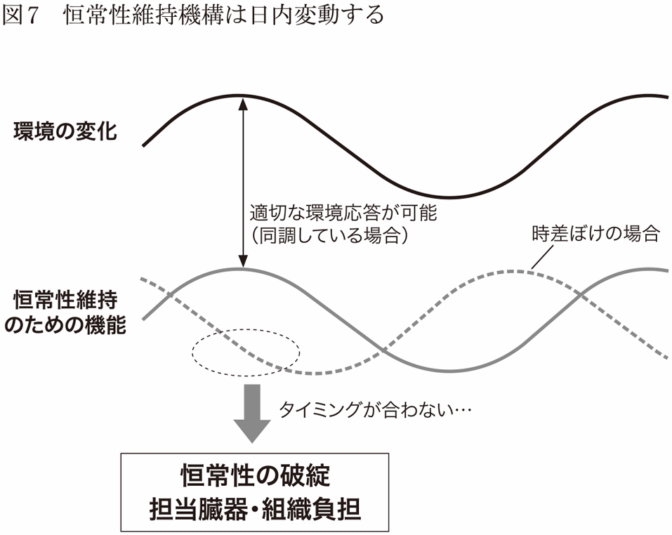
このような時差ぼけ状態が慢性的に続くと、身体はどうなってしまうのでしょうか。
仕事や学校は、週末の夜更かしのことなどなかったように、いつもどおり月曜日の朝に始まります。すると、一時的な時差ぼけ状態が生まれます。また、夏休みや冬休みで昼夜逆転の生活を送っていると、これよりもはるかにひどい時差ぼけに陥ってしまいます。登校時には、体内リズムと生活リズムがずれたままの生活を、当分の間は強いられることになるでしょう。
活動する準備ができていない身体を無理に働かせ、消化管が活動していないのに食事をして、脳が活動状態ではないのに仕事や勉強をしなければならず、身体が寝る準備ができていなくても寝なくてはいけない――。これでは、仕事や勉強の効率が悪くなるだけでなく、体調不良が起きるのは当然です。
そして、このような生活は恒常性の脆弱化につながるとともに、多臓器に対し慢性的に多大な負担をかけることになります。冬場の朝、通勤で車に乗る際に、暖まっていないエンジンをガンガンふかしていると車は壊れますが、時差ぼけというのはこれと同じ状態です。この状態が慢性的に続けば、臓器に負担が蓄積することは想像に難くないでしょう。この臓器負担は機能障害につながり、多くの病気の原因になることが分かってきています。それは、昼夜交替の労働者の調査によって示唆されてきました。
早朝や深夜勤務を頻繁に行う労働者は、慢性的に時差ぼけの状態にあると考えられます。すなわち、労働時間に合わせて生活リズムが激しく変化しています。イメージとしては、ハワイに行ったり日本に戻ったりを、しょっちゅう繰り返しているような状態です。このような生活リズムに対して、安定的な体内時計は素早く時刻合わせをすることはできません。慢性的な時差ぼけが心身に及ぼす影響を調査するには、昼夜交替の労働者はとても適した研究対象者であると言えます。
ただ、このような研究には限界があります。なぜなら、調査を継続してデータを取得できたとしても、そのデータには職場環境の違いや生活習慣の違いなど、さまざまな背景が紛れ込んできてしまうからです。したがって、本当に時差ぼけが影響で病気が起こっているかという確証が得られないのです。
しかし、体内時計を生み出している「遺伝子」が発見されてからは、この遺伝子の機能を破壊したマウスを用いることで、病気との関係についていろいろなことがはっきり見えてきました。２００５年を過ぎたあたりからこのような研究は飛躍的に進み、「Nature」「Science」「Cell」など、世界トップの科学の研究成果が発表される雑誌に、次々と論文が発表されています。このことからも分かるように、体内時計の研究領域は今では医学生物学の中でも花形領域の一つになっています。そして、米国と欧州、そして日本の研究者がしのぎを削って次々に新しい研究報告を行っています。
慢性的な時差ぼけが、睡眠障害やうつなどの精神疾患と関係が深いことは広く受け入れられている事実です。しかし、体内時計と関係する病気は、実際にはこれだけではありません。先ほど述べたように、意識とは無関係に、体の中ではたくさんの生体機能において約24時間のリズムが存在しているため、慢性的な時差ぼけは多岐にわたる恒常性の脆弱化に加えて、多臓器の機能障害につながるのです。例えば、体内時計との因果関係が分かりにくい病気である、糖尿病、ガン、高血圧などにも深い関係があることが、昼夜交替労働者や体内時計破壊マウスの研究で明らかになってきました（図８）。
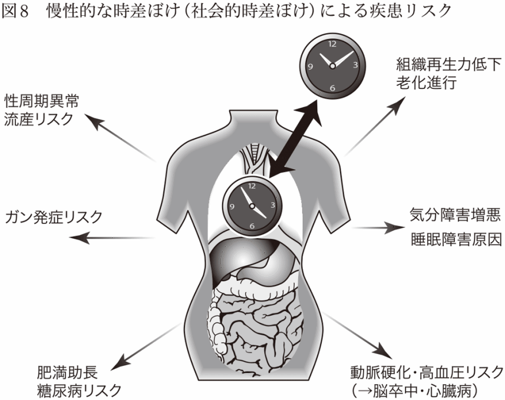
また、女性の不妊、および流産のような生殖機能とも大いに関係があります。夜勤が多い看護師の女性において生理不順が顕著であることは経験的に知られているのですが、これは、体内時計との因果関係を示す分かりやすい例です。
この他、美容にも影響があります。夜更かしすると化粧のりが悪くなるという話をよく聞きますが、これは、成長ホルモンが分泌される時間までに就寝していないと、お肌の新陳代謝がうまく働かないからです。
こうした現代特有とも言える病気を防ぐ手立てはないのでしょうか。
もちろん、ないことはありません。体内時計がつくる体の機能のリズムと、実際の生活リズムのタイミングのずれを解消するだけで、数多くの病気のリスクを下げることが期待できます。つまり、体内時計こそ、現代人の心身の健康を守るための欠かせないキーワードの一つと言えるのです。現代人の生活している環境はあまりにも体内時計を攪乱する因子が多いため、私たちは体内時計のことをよく知り、そして自分自身で健常な体内時計というものを維持する必要があるのです。
興味深い報告があります。それは、北極圏近傍に住むトナカイの話です。このような高緯度の地域では、冬は昼間と呼べる時間は非常に短く、逆に夏は夜でも薄明るい環境での生活を強いられます。後者は、白夜と呼ばれる現象です。つまり、このような地域では一日の環境の変化が不明瞭な季節があるということです（図９）。
地上のほとんどの生物は、日の出や日没という一日のサイクルに合わせて生活するために体内時計を獲得してきたということはすでに述べました。ならば、このような特殊な環境で長い年月をかけて進化してきた生物は、どのような体内時計を備えているのか、研究者からすればそれは大きな疑問であり、解決しなければならない謎でした。
この報告には、トナカイの活動記録のデータがあります。センサーをトナカイの体に取り付けて１年間にわたって「動き」の記録を取り続けたのです。すると、昼間と夜が明確である時期は、トナカイはある程度はそれに合わせ、活動量も夜よりも昼間の方が高いのですが、白夜の時期になると一日の活動量には規則性が見られません。つまり、トナカイの動きから判断すると、活動と休眠には一日のリズムというものは存在しないことが分かったのです。もし、トナカイの体内に時計が存在するのならば、白夜の時期でも一日のリズムは維持されると考えるのが妥当でしょう。
体内時計は環境の変化によってつくられるものではなく、たとえ環境が一定であっても、体内時計による体内リズムは維持されることになります。例えばハツカネズミを使って、時間を認知させる情報を一切遮断した箱の中で、しかも何週間にもわたって暗闇の環境で飼育しても、ハツカネズミの一日の活動リズムをはっきりと見て取ることができます。なぜなら、体内時計は体の外の環境にかかわらず体内で機能し続けるからです。これは、トナカイの結果と対照的であると言えるでしょう。したがって、先の実験は、トナカイは一日をはかる頑丈な体内時計を持っていないことを示していると考えられました。
さらに、別の実験を実施することで、トナカイが体内時計を持っていないことを証明する結果が得られています。体から生きた細胞を採取して培養し、体内時計の存在を可視化するという特殊な実験方法を用いています。体内時計は全身の一つ一つの細胞の中に存在していることが分かっているので、細胞の種類はなんでもかまいません。生きた細胞であれば、体内時計を観察できます（第３章「体内時計の『微』調節のしくみ」参照）。仮に、あなたの皮膚の細胞をもらうことができれば、私の研究室でも体内時計が働いている様子を観察することができます。
このような方法を使って、研究者たちはトナカイの細胞を採取して、体内時計の働きを観察しようとしました。しかしながら、体内時計の存在を示唆するようなデータを得ることができませんでした。このことから、トナカイにははっきりとした体内時計が存在しない可能性が高いという結論が支持されたのです。
つまり、一日の変化が不明瞭な環境で生きてきた生物にとって、一日をはかる体内時計は不要であったと考えられます。人間の尻尾がそうであるように、不要な体の機能は進化の過程で淘汰されていきますが、北極圏近くに住むトナカイにとって、体内時計は不要だったのでしょう。
逆に、一日が明瞭な環境においては、体内時計は人間のみならず、ほとんどの生き物で見つかっています。植物にも、そして目に見えない微生物にすら存在するのです。すなわち、このような環境においては、体内時計の存在は必須だということを暗に示していると言えると思います。
一方、一日が不明瞭な環境においては、体内時計は単に不要な機能というよりは、むしろ「邪魔なもの」といった方が正確かもしれません。北欧に住む人たちは、白夜のシーズンは厚手のカーテンを閉めて寝ていると言いますが、夜になっても日が沈まないために、この季節になると、睡眠障害や気分障害（うつ病など）の発症が増えるそうです。すなわち、体内時計のあることが、健康上の問題となっていると考えられるのです。
私たち人間はアフリカ大陸が起源だと言われています。そこから少しずつ活動範囲を広げていき、暖房設備を開発することで極寒の地域にも住めるようになったわけですが、人類が北欧に住むようになったのは数千年前だと推測されています。生命進化の歴史は約40億年と言われており、北欧の人たちの体がこの地に進化的に適応するには十分な時間ではなかったのでしょう。
このように考えると、一日のリズムが不明瞭な環境と、一日のリズムを備えた体が噛み合わないことが病の原因にすらなっていると考えられます。そしてこの話は、白夜の環境に住む北欧の人たちだけの問題ではなく、24時間社会に住む私たちもいつも同じ危険の中で生活していると言うことができます。なぜなら、今、私たちは室内照明によって昼も夜も関係ない環境を自由自在につくり出すことができるわけですから。
ところで、先ほど、細胞を体から採取して培養することによって体内時計を観察することができると述べました。この実験を、人間で実施した研究報告があります。皮膚の細胞を採取して培養することで、体内時計の動きを観察するのです。すると、とても興味深いことが分かったのです。
体内時計の周期というのは個人差があまり大きくなく、だいたい24時間より少し長い程度と考えられてきました。ところが、皮膚の細胞を培養して体内時計を観察すると、23時間から26時間程度まで、個人差が存在することが分かったのです。これが何を意味するのか明確には分かりませんが、もしかすると、朝型や夜型などの生活習慣の指向性との関係があるのではないかと指摘されています。このような研究はまだ始まったばかりですが、今後研究が進むにつれて、朝型・夜型の生活傾向を持つ人がなぜ生まれるのか、その謎も解明されてくるかもしれません。
エジソンが白熱電球を発明してから約１３０年が経ちました。白熱電球が発明されるまでは、ロウソクなどの炎が夜の明かりとして主流だったはずです。しかし、この白熱電球はあっと言う間に進化して、今では白色蛍光灯がありとあらゆる室内に取り付けられています。今後は、それがＬＥＤにとって代わろうとしています。
人間は科学技術の発展に伴い、地球上のさまざまなエリアに進出することが可能になり、それによって空間的活動範囲を広げてきました。それが照明技術によって、本来、寝ていたはずの夜間にも進出することで、活動範囲の時間的拡大を成し遂げていったのです。特に最近ではインターネットが急速に広がったために、外国との通信が頻繁となり、時差の関係で交信が夜間に及ぶことがあります。さらに、スマートフォンに代表されるように端末の小型化が進んでおり、布団の中でさえもインターネットをすることが可能になりました。インターネットの発達は、まさに24時間社会化、つまり眠らない社会の象徴的現象だと言うことができます。この現象は、ますます進行していくでしょう。
さて、２０１２年に興味深い調査結果が欧州の研究グループから報告されました。それは、６万５０００人を対象とした睡眠時間や就寝時刻に関する調査です。そこで分かったのは、学校に行き始めて退職するまでの間、すべての世代において平日の睡眠時間と休日の睡眠時間の間には隔たりがあるということでした（図10）。特にそれは、若い世代において顕著でした。これは、平日の睡眠時間が不十分であると同時に、週末に睡眠不足の負債を返済していることを示すデータです。
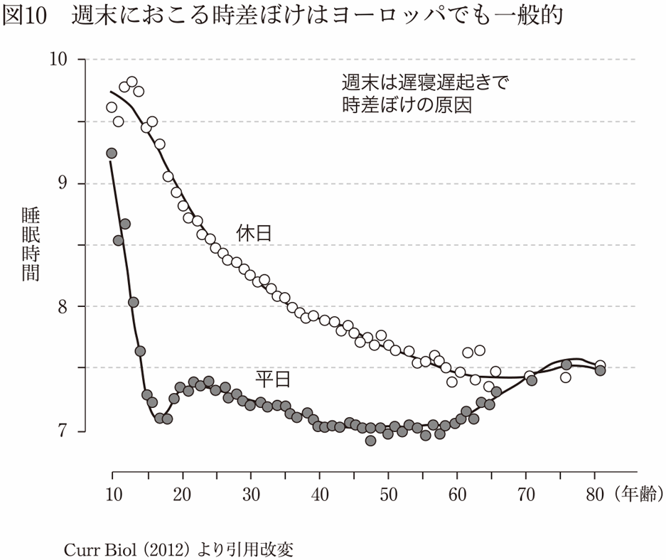
このような〝睡眠負債〟の存在は体に負担をかけるので、これ自体、健康上の大きな問題と言えますが、もう一つの大きな問題は、週末に長い睡眠をとることで、平日と休日の生活リズムのずれが大きくなるということです。
平日は学校や仕事があるので睡眠が足りてなくても、目覚まし時計を使って朝は無理に起きなくてはならないので、生活リズム自体はある意味安定していると言えます。しかしながら、週末はいつもよりも夜更かしをして（平日より早く寝る人はおそらく相当に克己心が高い人でしょう）、次の日は遅くまでしっかり眠って、平日にたまった睡眠の借金を返済している場合が圧倒的に多いのではないでしょうか。
このような週末の過ごし方によって、生活リズムの不安定化が起こるだけでなく、体内時計が夜型へとずれこんでしまいます。すると、月曜日になって急に早起きの生活に戻そうとしても、週末の間に体内時計が夜型になっているので辛い朝を迎えることになります。体内時計が夜型であると、朝が近づいてきても体のエンジンがなかなか暖まってこないので（具体的には血圧、体温およびコルチゾールの上昇）、体にむち打って起き上がることになります。火曜日以降は毎日少しずつ体内時計は朝型に修正されるのですが、週末になるとまたしても同じことが繰り返されてしまいます。
すでに述べましたが、このような状態は、海外旅行の時ほど大きなものではありませんが、一種の時差ぼけであると言えます。この小さな時差ぼけが毎週のように慢性的に繰り返されることは、さまざまな病気のリスクにつながる可能性が高いのです。例えば、先ほどの欧州の報告では、ＢＭＩ（Body Mass Index：肥満度の指標）とこの時差ぼけとの関係において正の相関があることが示されています。
この研究グループは、こうした慢性的時差ぼけの状態を長期にわたって調査し続けてきました。恐ろしいことに、彼らのデータによれば、２００２年から２０１０年にかけて、平日の睡眠時間は８年間の間に約30分以上短くなっており、そのぶん、休日の睡眠時間が少しずつ増え続けています。これは言いかえれば、現代人の時差ぼけがどんどん進行していることを意味しています。今後、どこまでこの傾向が続いていくのでしょうか......。
それだけではありません。体内時計は太陽の光によってリセットされるのですが、この調査ではさらに悪いことに、外で活動する時間が年々減ってきていることが示されたのです。前述の８年間の間に平均で約30分間も減っているというのです。つまり、現代人は体内時計の夜型化が進行しやすい24時間社会の中で生活しているのにもかかわらず、太陽光による体内時計のリセットの機会も減ってきているということです。
この傾向はインターネットの発達と大きな関係があると想定されます。インターネットの発達は大いなる利便をもたらしましたが、同時に生活リズムの不安定化、体内時計の夜型化、さらに外出する機会の減少という側面ももたらしたのです。実際、日本に住む私たちの周囲を見渡してみても、一日の長い時間を室内照明のもとでインターネットをしながら生活している人が多いのではないでしょうか。
前述したように、室内環境の照度は数百ルクス程度です。それに対して、晴天時の屋外は１万ルクス以上に及び、曇りの日でも数千ルクスの照度に達します。つまり、室内よりも外の方が、少なくとも10倍以上も照度が高いということになります。この差が示すように、室内照明では朝の効果的な体内時計のリセットに不十分であることがよく分かると思います。
私たちの体は、太陽のもとで活動するために最適化されてきました。自然環境の中で生活していた頃は、外で活動する時間が今よりも遥かに多く、特に意識しなくても毎日太陽光によって体内時計がリセットされ、環境リズムとのずれは問題にならなかったでしょう。
一方、現代における生活環境の夜の照度に関してはどうかというと、外の照度は月明かりのもとでもせいぜい数ルクス程度の照度しかないので、今度は室内照明の方が百倍強いことになります。つまり、繰り返しになりますが、室内照明は体内時計をリセットする朝の光としてはとても弱く、体内時計を攪乱する夜の光としては十分強い照度であるということです。
もう一つ、興味深い報告を紹介したいと思います。先ほど、現代人をとりまく光環境においては、体内時計は知らず知らずのうちに夜型になってしまうとお話ししました。理屈の話だけではなく、私たちの光環境は本当に体内時計を夜型化しているのか、それを調べた興味深い報告があります。
この研究においては、まず、研究参加者たちには、いつもどおりの室内の光環境（数百ルクス）で生活をしてもらったあとに、１週間にわたって自然光の中でキャンプ生活を送ってもらいます。夏場の実験ですから、朝日（１万ルクス以上）がテントの中に燦々と降り注いでくる一方で、夜は、焚き火をしてもせいぜい数十ルクスにしかならないという環境の中で過ごします。数百ルクスの一定の光の中で一日中過ごしている日常とは異なり、きわめてメリハリのある光環境ということになります。
そして、キャンプの前後で比較すると、キャンプの期間がわずかに１週間という短い期間ではありますが、体内時計の時刻がキャンプ生活によって平均で２時間以上も早まるという結果が得られました。このように、メリハリのない人工的な光環境、すなわち朝の光としてはとても弱く、夜の光としては強すぎる光環境においては、体内時計は確かに夜型化することがよく分かります。
ところで、私たちの中には夜型を好む人と朝型を好む人がいることが経験的に知られていますが、アンケート調査によってより客観的に分類できることが分かっています。そして、この分類によって先ほどのキャンプ実験の結果をもう一度検証しました。すると、朝型の人は室内光の環境でも、自然光の環境でも、どちらでも体内時計の時刻はあまり変化しないのですが、夜型の人ほど室内光の環境における体内時計の夜型化が顕著だったのです。
このように、自然環境においては、夜型や朝型などの指向性における個人差の影響は覆い隠され、ほとんどの人たちの体内時計の時刻は同じ時間を指し示して動いていたと考えられます。しかしながら、現代のようなメリハリのない光環境においては、夜型や朝型などの生活指向性の違いが顕在化してくるのです。
自然の中で生活していた頃は、体内時計の個人差は問題にならなかったのですが、現代の環境においては夜型の人は意識的に光環境に気をつかって、自身の体内時計を調節しなければなりません。そうしなければ、朝型の人とは異なり、いつのまにか夜型化する可能性が高いことになります。
極端なことを言うならば、現代の光環境においては、健康という観点からすると、体内時計の個人差を考慮した生活習慣をある程度認めざるをえないかもしれません。すなわち、夜型生活を認め、時差ぼけによる疾患リスクを減らすために、出勤時間や登校時間を再検証する必要性さえもあるのかもしれません。
つい先日、長野県が部活動の朝練の廃止方針を出したというニュースが流れていました。無理な早起きによって、睡眠不足になるだけでなく、朝食がとれない子供が増えているからだと言います。これは勇気ある決断かもしれません。現代の光環境では、たとえ規則正しく生活していたとしても、先に述べたように個人差はありますが、体内時計は自ずと夜型にずれてしまっているからです。
子供たちの目は、光への感受性が強いという特徴を備えています。そのため、大人より夜型傾向になりやすいかもしれません。しかし、キャンプの実験で示された「朝型の人」のように、光の影響を受けない子供には問題は起こらない可能性があります。したがって、朝練を全廃するといったような、極端な方針をとる必要はないかもしれません。そういう子は自主的に朝練しても問題ないと思います。しかし、光の影響を強く受ける子たちの場合、体内時計が夜型化している状態で朝型生活を強要すると、時差ぼけに慢性的に悩まされる結果となり、運動のパフォーマンスだけでなく、勉強のパフォーマンスも低下し、さらには睡眠障害、精神疾患、発達障害にもつながってしまう恐れがあります。そのようなリスクを背負うならば、足りない練習は別の方法で補うべきだと思います。
本章の最後に、室内照明に関して触れておきましょう。エジソンの白熱電球の発する光は波長域の広いもので、その赤っぽい色からも想像できるように、私たちの体内時計に強く働きかける「青色の波長の光」の含有はそれほど高くありませんでした。それが、照明の開発が進んで白色蛍光灯が主流となることで、夜間でも青色波長の光を浴びる機会が劇的に増えました。そして最近では、ＬＥＤ電球の普及の勢いが目覚ましいのが特徴です。このＬＥＤ電球は、初期投資は高く付きますが、発熱せず、電気代も安上がりで、電球もかなり長持ちすることが魅力です。
現代という時代は「光」に関してまさに過渡期にあると言えます。パソコンやスマートフォンの画面にも使われているＬＥＤが台頭してきた今こそ、まさに私たち自身が生み出した文明の利器を正しい知識で正しく使えることができるかどうかが問われています。
白色のＬＥＤ電球は従来の蛍光灯よりも青色の波長を多く含んでいます。つまり、体内時計に作用する力がさらに強いと言えます。今までの蛍光灯と同じように使っていれば、体内時計の夜型化がさらに進み、深刻な事態が生じるでしょう。
こう述べてくると、ＬＥＤはすぐにでも禁止すべきだと主張しているように思われるかもしれません。しかし、使い方次第では、従来の蛍光灯よりも体内時計にやさしくもなります。なぜなら、最近のＬＥＤ照明は性能に優れており、色や照度を調節することができるからです。一方、これまでの蛍光灯にはそうした機能はありませんでした。しかし、ＬＥＤ照明の場合、夜間には照度を下げて、かつ青色波長を減らすことによって、今までの蛍光灯よりも体内時計の攪乱を低減できる可能性があるのです。
そういう意味で、ＬＥＤ照明は使い方次第で、現代人の光環境を悪化させることも改善させることも可能なのです。しかしながら、現状ではこのような使用の仕方はほとんどされておらず、ＬＥＤの悪い面ばかりが目立ち始めています。
特に、子供の目は澄んでいて光をよく透過すると言われているので、大人よりもＬＥＤの青色の光が及ぼす影響が大きい可能性があります。子供の睡眠障害や不登校、心の病や発達障害などに及ぼす影響が強く懸念されます。最近では、夜の10時を過ぎてもファミレスやコンビニで小さな子供を見かけることが普通になってきたように思います。一刻も早い対応が迫られているはずなのですが、残念ながら政策的にも、そして医療現場でも大きなアクションが起こっていないのが現実です。科学技術の発展には光と影がつきものだとすでに述べたように、事態が深刻化して、かつ科学的証明が十二分に行われるまで、このような大きなアクションは起こらないのです。
＊ ＊ ＊
以上のような24時間社会の進行現象は、特に各先進国で進行していることは想像に難くないと思います。つまり、慢性的時差ぼけによる病気のリスクは年々高まっていくばかりなのです。
ここまで見てきたように、私たちをとりまく環境は、自制しなければ自ずと時差ぼけを招く状態にあると言えるでしょう。だからこそ、体内時計を正しく理解し、個々人が自分自身で身を守る意識が、今、まさに求められています。
この章では、進化の過程で私たちの体に備わった体内時計と、室内灯の普及等によって生み出された24時間社会における生活環境との間に存在する矛盾が具体的にどのような病のリスクになっているのかに着目し、世界中の研究者が成し遂げた研究成果を交えて説明していきます。
さて、体内時計と病との関係は、統計的な手法（専門的には疫学という学門領域です）を用いて調べられています。新聞や雑誌などで「○○を摂取するとガンの予防（原因）になる」という記事をよく見かけないでしょうか。これは、○○を多く食べる人たちと、あまり食べない人たちにグループ分けし、性別や年齢等を考慮しながら、ガンにかかった人数の割合を比較するという研究です。
人それぞれの風貌が千差万別であるように、私たちにはお互いに遺伝的な個人差が存在しているだけでなく、個々人の生活習慣等もさまざまです。これらがデータに強い影響を及ぼすので、なるべくたくさんの被験者のデータを解析する必要が生じます。では、なぜこうした、ある意味もどかしいような研究方法がとられるのでしょうか。
それは、ヒトを直接用いた研究というのは、その方法論に限界があるからです。具体的には、試薬を体に投与して反応をみたり、実験に必要な組織を採取したりというのは、倫理的な問題がきわめて大きいために基本的には行うことができません。
このような事情から、統計的な観察研究が実施されることで、ヒトにおける状況証拠としてきわめて貴重なデータが得られています。体内時計と病の関係を統計的に調べる際には、「昼夜交替労働者（日勤と夜勤を繰り返す労働者）」と「通常の日勤者」の比較の研究が行われることが多々あります。それにより、体内時計の攪乱が心身に与えるさまざまな影響が示されてきたのです。
前述したように、昼夜交替勤務の人たちは体内時計に著しく背いた生活を長期にわたって送っている場合が多いので、体内時計と病の関係を調べるには最適な集団と言えます。ただし、このような形態の労働者を長期にわたって追跡するのは難しく、また、夜勤交替のスケジュールのパターンも職場によってさまざまであり、さらに体調を壊すと夜勤から外されることも多いなど、誤差を起こす要因が数多く存在しています。したがって、なかなか真実が見えてこないという問題があります。また、このような統計的な研究は相関関係は示すことはできるものの、最終的な結論を出すのがとても難しいという弱点があります。
こうした昼夜交替労働者の統計データを補うものとして、体内時計をつくっている遺伝子（時計遺伝子と呼ばれています）の構造における個々人の違いと、病の発生頻度との関係を比較する方法があります。時計遺伝子にもわずかな違いではありますが、その構造において個人差があります（専門的には「多型」と呼んでいます）。これは突然変異のようにきわめて珍しいものではなく、集団内にある頻度で現れる構造上の特徴であり、体内時計の個人差の原因になると考えられます。言いかえれば、時計遺伝子構造の個人差と病気のなりやすさとの間に相関が見つかれば、体内時計はその病気を発症させる原因になりうるということを意味します（図11）。
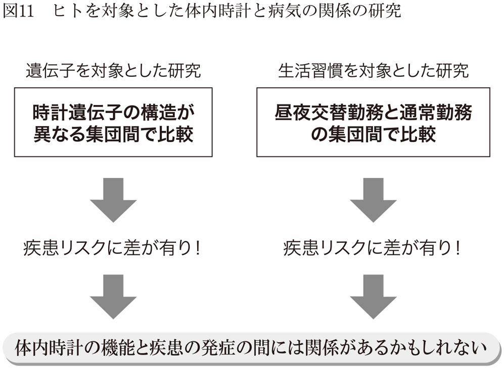
昼夜交替労働者に関する統計的研究や、時計遺伝子構造の個人差の研究など、ヒトを使った研究はとても貴重な成果には違いありませんが、個体の遺伝的および環境的背景の違いのために、はっきりした差がなかなか見えてきません。加えて、どちらの手法も、ともに相関が分かるだけで体内時計が直接の原因であるかはやはり結論が出せません。そこで、ヒトで分かった統計的傾向を、動物の犠牲によって確かめる実験が必要になってきます。
例えば、生活リズムを乱した時のマウスの体の変化を調べたり、時計遺伝子を破壊したマウスの病気の発症を解析したりすることで、ヒトの研究成果を補う、より強力な証拠を提示することができます。実験動物としては、ヒトに近いサルを使うべきだと思うかもしれません。しかし実際には、ほとんどの場合はマウスで実験をしています。病気と体内時計の関係を示す証拠として、マウスを用いた研究の成果をこれからいくつか紹介します。そこで、話は少し逸れますが、マウスが実験動物として多用される理由について説明したいと思います。
現代の医学および生物学においては、多くの生命現象のメカニズムは遺伝子の機能を調べることによって明らかになってきています。先に述べたように、私たちの体は寝ても起きても遺伝子が活動しています。この遺伝子が体の恒常性を保つとともに、食べる、運動する、勉強する、寝るなどのあらゆる生命活動を可能にしているのです。そして、数万種類ある遺伝子のうち、20種類程度が時計遺伝子として働いており、体内時計をつくり出しています。では、もし体内時計が体になかったらどうなるのでしょうか。この問いに答えるには、時計遺伝子の機能をなくしてしまうのが手っ取り早い話になります。
もちろん、このような実験はヒトで行うことは不可能に近く、ハツカネズミ（マウス）の犠牲によって、間接的にヒトにおける体内時計の存在意義を調べることになります。ヒトのことが知りたいのであれば直接ヒトを使うのが近道のように感じるかもしれませんが、そもそもヒトで実験するにはたくさんのハードルがあり、可能な実験も限られています。「私の体内時計を壊してもいいですよ」と仮に体を差し出されたとしても、容易に実行することはできません。倫理上の観点から、それは難しいことです。
倫理的な問題以外にも、人体実験することの難しさは他にもたくさんあります。ヒトは個々人の性質を決定する遺伝的および環境的要素の違いが大きすぎます。親子や兄弟は遺伝的には近い存在ですが、顔や性格が多少似てはいるものの、多くの点でお互いの違いが大きいことは経験的にご理解いただけると思います。これは、遺伝子のわずかな構造上の違いによって、兄弟といえども、遺伝子からできるタンパク質にわずかに違う構造が存在すること、あるいは遺伝子からつくられるタンパク質の量がわずかに異なることなどに原因があります。たとえわずかな違いであっても、たくさんの種類の遺伝子において違いが存在すれば、個体としては大きな違いが生まれてくるのです。ちりも積もれば山となるのです。この個人間の違いは、当然ながら実験結果に大きな影響を与えます。おまけに、個々の人間は環境的要素も大きく違います。食べる物が異なり、生活する環境や体験する事柄が異なれば、少しずつ違いが生じてくるのです。
このように、親や兄弟間ですら個人差があることを考えると、縁もゆかりもない人たちを比較する実験では、個人の違いがとても大きいために、実験結果に及ぼす影響も大きくなりすぎて検討が困難になるというわけです。
例えば、６人の被験者を３人ずつのグループに分けて、ある３人には薬を与え、別の３人に薬を与えずに比較したとしても明確な違いが出ることは多くはありません。統計的に２群間の差を実証するためには、数百人規模で行うことが必要になってくるケースがとても多くなります。
ところで、兄弟であったとしても、一卵性双生児（つまり、なんらかの理由で一つの受精卵から生まれた双子）の場合は状況が異なってきます。元の受精卵が同じということは、二人の持つ遺伝的な要因は完全に同じということです。つまり、受精卵が分かれてからの母体内での環境の違い、生まれてからの環境の違いによって、ようやく二人の違いが生まれてくることになります。双子の場合は環境因子の個人差のみ心配すれば良いことになるので、それだけでも研究結果がとても分かりやすくなると思われますが、実際のところ、双子に限定して実験するには人集めが困難でしょう。
以上のような理由から考えると、もし、ヒトにおいても遺伝的にも環境的にも均一な集団が存在すれば、たとえ小規模集団であったとしても、十分明確な結果を得られる可能性が高くなります。
でも、そんなことは実際には不可能でしょう。このような問題があるので、なるべくヒトに近い、遺伝的に個体差が少なく、かつ生活環境を一定に保ちやすい実験動物を使うことが考えられるのですが、では、単純にサルを使えばいいのかというと、そういうことでもありません。
仮に遺伝的に均一なサルの集団を確保できるとしても、たくさんのサルを飼育するには広い場所と多くの飼料代が必要になります。また、実験用サルはとても高価なため、数を揃えることも容易ではありません。さらに、サルは脳が発達しているので、予測行動や感情的変化など複雑な要因が出てくるために、扱いにはとても気をつかうのです。
では、マウスの場合はどうでしょう。実は、実験に使っているマウスというのは近親交配（親と子供、または兄妹同士の交配）が何度も繰り返された結果、おじいちゃんマウスも、お母さんマウスも、孫マウスも、みんな一卵性双生児に近い状態になっています。実際、マウスの顔を見てもそっくりです（そもそも顔の違いがあるのか分かりませんが）。つまり、実験用マウスは一族そろって双子のような集団と言えるのです。
こうした特徴を持つマウスを使うことによって、遺伝的な多様性が実験結果へもたらす問題は解決され、同じ種類の年齢の近いマウスで実験すれば、世界中のどの研究者であっても同一の実験をすればほぼ同じ結果を得ることができるのです。命の犠牲を伴うとはいえ、生体組織を採取することも可能です。また、体が小さいので飼育に場所を取らないうえ、同じ環境で育てることができるので、人間のように生活環境の違いによる影響を受けにくくなります。さらに、性質はおとなしく、交配が簡単でたくさん子供を産んで増えてくれます。加えて、マウスにおいては遺伝子を破壊するための技術が蓄積されているので、機能を調べたい遺伝子が破壊されたマウスを用意することができます。解剖学的にも人間とよく似ています。しかも、マウスの99％の遺伝子には、人間にも相当するものが存在することが分かっています。もちろん、それぞれの遺伝子の構造が少しずつ違ってはいるので、機能が完全に同じとは言えませんが。
これらの理由から、マウスたちは人間の英知と健康のために計り知れない貢献を果たしてきているのです。他方、動物実験を行うには、可能な限り動物の苦痛を回避するための倫理的な問題をクリアしなければならず、的確な指導を受けた者しか実施できないように法整備されています。
＊ ＊ ＊
さて、ここからは、夜勤労働者や時計遺伝子構造の個人差にもとづいたヒトの統計学的なデータの紹介、時計遺伝子の機能を失った、あるいは生活リズムが乱されたマウスのデータの紹介を行いながら、さまざまな疾患と体内時計の関係について概説していきたいと思います。
睡眠と体内時計との関係は直感的に分かりやすいと思います。なぜなら、通常、ヒトには夜になったら眠くなり、朝になれば目が覚めるという明確な一日のリズムがあることは、皆、実感しているからです。実際、体内時計は睡眠と深い関係にあります。昼夜交替勤務と不眠との関係の報告や、時計遺伝子構造の個人差と不眠との関係の報告は数多くあり、もはや体内時計と不眠は切り離して考えることはできません。
２０１３年の４月には、不眠と体内時計の関係がコマーシャルで放映されるようにまでになりました。眠れないおじさんと、大きなクマのぬいぐるみが登場し、不眠について対話するＣＭです。このようなコマーシャルが放映されたことはきわめて画期的なことだと思います。一般の方だけでなく、医師の中にさえも、本当の意味での理解が未だ浸透していないと考えられる体内時計の存在が、不眠との関係で大々的に放映されたのです。
体内時計というものが実在していて、しかも不眠治療のターゲットとなっていることに驚いた視聴者も多かったのではないでしょうか。そして、このコマーシャルの制作元が武田薬品工業という大手の製薬会社だったということは、さらに注目されるところです。すなわち、このＣＭは、製薬会社が体内時計を標的とした薬の開発を考えている、というメッセージを強力に放っているのです。体内時計の認知度は、今後さらに広がっていくでしょう。
ただ、このＣＭでは、お医者さんへ行くことを勧めているところが少し考えさせられました。なぜなら、お医者さんであっても、体内時計のことに詳しい方は少ないからです。それはお医者さんが無知だと言いたいわけでは決してなく、医学教育としても、あるいは治療指針としても体内時計への理解は十分に浸透していないので、体内時計は治療の対象としてみなされていないからです。ＣＭを見た患者さんに、体内時計のことを尋ねられて困っているお医者さんの様子が目に浮かびます......。
また、体内時計に詳しいお医者さんは何科に多いのか、一般の方も知らないと思います。20秒程度のコマーシャルではそこまで盛り込むのは難しいですね。体内時計に詳しいお医者さんが比較的多いのは、精神科等になります。なぜ精神科の先生が詳しいかというと、数ある体内時計が関連する病気の中でも、「睡眠障害」と「気分障害（うつ病など）」は特に関連の深い疾患だからです。これらの疾患を扱う際に、体内時計を無視して治療することは困難です。最近では循環器のお医者さんも詳しくなってきました。これは、血圧の値が測定する時刻によって大きく変動することから、24時間の血圧のリズムを観察する必要性がクローズアップされてきたからでしょう。
話を戻しますが、睡眠障害と体内時計の関係を示す研究報告については山ほどあるので、それらの紹介はここでは省きたいと思います。ここでは主に、体内時計が睡眠障害においてどのように関係しているのか、体内時計が関係する不眠の場合はどのように対処すべきなのかについて紹介していきたいと思います。
まず、「眠らない状態」と「眠れない状態」について考えてみます。この両者の状態は大きく異なります。前者は、仕事で忙しかったり、夜更かしが続いたりすることによって生じる状態です。ですから、個々人のスケジュール管理の調整で睡眠時間を確保できれば、問題は解決するということで、比較的簡単な話です。
問題になるのは、後者の〝眠れない人たち〟です。これは不眠と呼ばれており、現代社会ではどんどん増え続けています。最近の統計では、日本人の約２割がこの不眠で悩んでいると言われています。
これはあまりにも大きな数字ではないでしょうか。まさに５人に１人が思うように眠れないというのです。お年寄りの夜の眠りが浅くなるのは、ある程度生理的な現象として説明ができますが、若い世代でも、男女を問わず２割近くの人たちが不眠の状態にあるというのは大変な事態ではないでしょうか。病気の原因の考え方に戻ってみると、このような近年の急速な変化は遺伝的変化などということはありえず、まさに現代人をとりまく環境の中に原因があると想像できます。
ところで、不眠に対して不眠症という言葉がありますが、厳密には使い分けられています。長期間にわたって夜間の不眠が続き、それによって心身に不調をきたし日中に生活の質が低下した場合、不眠症と診断されます。
さて、不眠の原因となる環境的要因は、体内時計が関与する問題以外にもきわめて多種多様な要素が存在します。例えば、プレゼンの前日や大きな行事の前日は緊張して眠れないというのは多くの人が経験することです。一方、緊張からではなく、旅行の前日に気持ちが高ぶって眠れないという場合もあります。これらのものは一時的な不眠であり、原因が過ぎ去ってしまえば問題ないので、それほど心配には及ばないでしょう。カフェインやアルコールによる不眠も、対処はきわめて単純だと言えます。
他方、病気などで体の具合が悪い場合も、当然、眠ることが難しくなるケースがあります。また、足がむずむずして眠れない「むずむず足症候群」という症状も存在します。不眠の原因となっている体調不良が改善されれば、こうした不眠も解消されることになります。また、慢性的にストレスを抱えていたり、抑うつ、あるいは気分障害などを患っていたりと、心理的問題によって不眠が引き起こされるケースもとても多いようです。
以上のようなケースの場合、従来の睡眠薬で対処されることになります。すなわち、精神を落ち着かせて不安を取り除くタイプの薬です。この鎮静作用によって睡眠を誘導することになります。
ここで、睡眠のメカニズムについて簡単に概説します。睡眠を引き起こす因子は大きく二つあると言われています。一つは、「睡眠物質の蓄積」です。この物質は脳の代謝産物だと考えられているのですが、真の睡眠物質とは何かについての結論は未だ出ていないようです。この睡眠物質が覚醒時間の長さにしたがって、脳の中に蓄積してくると眠気を感じることになります。夕方に長い昼寝をしてしまうとこの睡眠物質の蓄積が不十分になるので、夜に寝付きが悪くなります。
もう一つの睡眠に関わる因子は「体内時計による睡眠のタイミング」です。寝不足でも日中はそれなりに覚醒状態を維持することができます。また、いくら寝不足であったとしても、日中、長時間にわたって昼寝するのはなかなか難しいのではないでしょうか。これは、眠るタイミングを体内時計が決めているからです。体内時計は体を効率良く休めるために、活動しない夜間に深く、そして持続的な睡眠を可能にするようにコントロールしているのです。つまり、この体内時計による体の状態と実生活の就寝、この二つのタイミングが合わないと、なかなか眠れないことになるのです。実際、昼間に睡眠を８時間とって、夜中はずっと仕事しなさいと言われても、ほとんどの人はこれを実行できないはずです。
現代人の生活習慣や光環境においては、生活リズムの不安定化や体内時計の夜型化が起きやすいということはすでに説明しました。このことから考えると、従来の不眠の原因よりも、体内時計が関係する不眠が急激に増えてきていることが想定されます。特に大きな悩みを抱えているわけでもなく、体調も良好なのになぜか眠れない、という場合は体内時計に依存した不眠である可能性が高いかもしれません。このような体内時計による不眠は、現代特有の生活環境によって起こるために、「現代型不眠」と呼ばれることもあります。
話を元に戻します。不眠の治療には鎮静作用を持つ薬が使われる場合が多いと述べました。この薬は、先ほどの二つの睡眠のメカニズムのうち、睡眠物質の蓄積による睡眠を活性化する機能を持っています。したがって、体内時計による睡眠のタイミングがずれたことで起こる現代型不眠には効果的ではないと言うことができます（もちろん、無理やり眠らせることはできますが）。
私たちの生活環境においては、本来であれば寝るべき時間であっても、起きて活動するか否かというのは、個人の責任で自由自在に選択することができます。体内時計がメラトニンというホルモンを介して体を眠りに導こうとしても、室内照明によってメラトニンの分泌が抑制されるとともに、交感神経（主に体を活動状態にする神経系）が活性化されるために、覚醒状態が持続されることになるのです。このような状態を日々続けると、すでに述べたように、夜の光によって体内時計が夜型にずれてしまうことになります。ですから、早朝出張などである日突然早く寝ようとしても、体内時計による眠りのタイミングが夜型になっているので入眠が困難という状況に陥ります。
鎮静作用の薬を現代型不眠の人に処方すると、体が眠るタイミングではないのに、薬で無理矢理眠らせている状態が発生する場合が考えられます。このような使い方は、認知機能などにおいて想定外の副作用を発生させる危険性があるかもしれません。つまり、不眠症の原因が、体内時計によるものなのかどうか診断することで、対処の仕方を分けて行う必要があるということです（図12）。
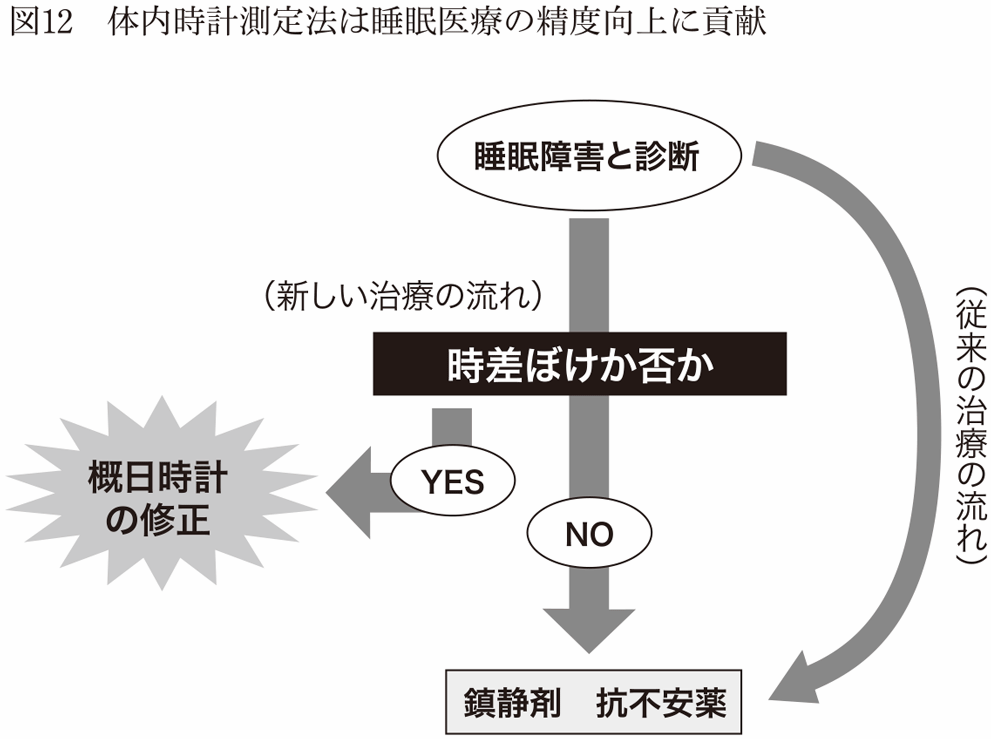
しかしながら、問題なのは、現状では簡便に体内時計の診断をする手段がないことです。睡眠専門医が睡眠アンケートを実施したり、また長期の睡眠日誌等から体内時計のずれを判断したりする方法が一般的ですが、これらは主観性の高い方法になるので信頼性も限定的であると言えます。
もし体内時計が睡眠障害の原因であるのなら、治療において目指すべきことは、体内時計の針を正常な位置に戻すことになるでしょう。具体的には、生活習慣の改善による体内時計の修正や（第３章参照）、場合によっては体内時計の修正に関与する薬の投与で修正を補助することも可能です。特に、体内時計のずれが何年にもわたって慢性的に続いており、生活習慣改善による自己修正が難しい場合は、体内時計に作用する薬による修正が好ましいと言えます。すでに述べたように、体内時計による眠りのタイミングには、メラトニンというホルモンが関与すると考えられています。それだけではなく、メラトニンは、脳の中にある体内時計の中枢に直接働きかけて、体内時計自体をも修正する作用があると言われています。
このように、体内時計による不眠の場合は、鎮静作用型の薬で強制的に眠らせるのではなく、メラトニンの作用をうまく利用することで睡眠のタイミングを修正して自然な眠りを誘導するとともに、体内時計自体を少しずつ調節させるのが大事になってきます。
日本でも、メラトニン類縁物質が薬として処方されます。この薬は、従来の睡眠薬と比べて依存性や認知機能などにおける副作用がほとんどないので安心して使用できますが、従来の鎮静作用型の薬剤のような即効性を期待してはいけません。毎日少しずつ、生活習慣の改善にもとりくみながら、気長に修正するつもりで使用する必要があります。さらに、この薬の魅力は、少しずつ薬を減らしていくことによって、最後に薬の使用中止と完治が期待できる点にあります。
私たちの血液中には、エネルギー源としてグルコース（ブドウ糖）が含まれています。細胞の中にグルコースが取り込まれるとエネルギーとして使われ、私たちの体はさまざまな活動を行うことができるのです。
私たちは物を食べることによってグルコースを補っていますので、食後には一時的に血液中のグルコース濃度（血糖値）が高くなります。この血糖値は、膵臓から分泌されるインスリンというホルモンが働くことによって濃度が調節され、基本的にはいつも血液中で濃度が一定範囲に保たれています。余ったグルコースはインスリンによって脂肪および筋肉等に搬入され、また、肝臓では飢餓などに備えて蓄積されることになります。この時、インスリンがうまく働かずに血中のグルコースの濃度が高い状態が持続されると、「糖毒性」という現象が起こります。つまり、血中のグルコースの濃度が高いと、これが毒となって体のさまざまな臓器に障害を与えるようになるのです。このような病態が、糖尿病と呼ばれるものです。
糖尿病には主に１型と２型が存在します。１型は若年性（先天性、つまり遺伝性の原因が大きい）の糖尿病と呼ばれ、インスリンをつくっている細胞がなんらかのメカニズムで破壊されて、血中のグルコース濃度を調節できなくなります。これに対して２型は後天的な生活習慣によって引き起こされます。その最も大きな原因は肥満であると考えられます。肥満によってインスリンの効きが悪くなるので、血中のグルコース濃度の調節が難しくなるのです。この状態が長く続くと、インスリンをつくっている細胞が過労状態になり、少しずつ死滅していきます。そうなるとインスリンが減るため、さらに血糖値の調節が困難になります。このような負のスパイラルに陥ることで、糖尿病はさらに悪化していくのです。
糖尿病は、その名前からはかけ離れて恐ろしい病気です。インスリンをつくる細胞が死滅すると、生涯にわたってインスリン注射を食後に行うことになります。それだけではありません。注射による血糖のコントロールは、インスリンをつくる細胞のようにはうまくいきません。その結果、各臓器は時間をかけて糖毒性によるダメージを蓄積させることになります。特に血液中のグルコースに直接さらされている血管のダメージは甚大であり、少しずつボロボロになっていきます。その結果、多くの合併症が発生するのです。腎臓の機能が低下することで透析が必要となり、脳卒中や心臓病の原因となる動脈硬化が進行します。さらに、失明や末梢組織の壊死など、きわめて多岐にわたる病態が現れるのです。このような恐ろしい疾患である糖尿病のリスクを潜在的に背負った人が、日本には数百万、あるいは１千万人にものぼると言われています。誰にとっても他人事ではありません。
この２型糖尿病ですが、すでに紹介したように、日本において近年もの凄い勢いで増加しています。そもそも日本人は糖尿病になりやすい体質だと言われています。それはインスリンを合成して分泌する臓器である膵臓が、欧米人に比べて比較的小さいためです。
太古より、農耕で食料を確保してきた日本人というのは、小さなサイズの膵臓があればそれで十分だったのですが、近年の急激な食習慣の欧米化（高脂肪食の普及）に伴って、膵臓がとても耐えきれなくなってきています。つまり、私たちの体は、低カロリー低脂肪食に体が適応するように長い時間をかけて進化してきたのですが、急激な食習慣の変化に体の適応がまったく追いつかないのです。これが、２型糖尿病を引き起こす原因です。それに加えて、車の普及やデスクワークの一般化による運動不足も、糖尿病のリスク上昇の一要因となっています。
では、この２型糖尿病と体内時計はどのように関係しているのでしょうか。昼夜交替勤務が糖尿病発症のリスクになりうることは統計的に証明されていて、かつ、時計遺伝子構造の個人差も、糖尿病の発症リスクと関係あることが統計的な方法で報告されています。これらの報告から、体内時計がつくる体のリズムと実際の生活リズムの間のずれが、糖尿病の原因になることが強く疑われるわけですが、まだ決定的とは言い切れません。
一方で、とても興味深い報告があります。体内時計と糖尿病の関係をより明確に示すために、健康な被験者（実験に参加するボランティア）を集めて、睡眠時間を短くすると同時に生活リズムを意図的に乱すという条件で生活してもらったのです。すでに述べたように、このようなヒトを対象とした介入試験はきわめて難易度が高いことを考えると、この報告はかなり貴重な報告だと言えるでしょう。
このように生活習慣を乱した多くの人は、約３週間でインスリンの分泌能が低下してグルコースの濃度調節能力が下がることが明確に示されたのです。若い人もお年寄りも、同様の結果です。
これは、健康な人の生活習慣を変化させて得られた、とても分かりやすい結果であるため、先ほどのような統計的な手法の研究よりも直接的な証明であると言えます。すなわち、体内時計が糖尿病に関与することを示す、動かぬ証拠となりうる実験結果だと言えます。
では、どうして体内時計が２型糖尿病の原因になるのでしょうか。現状においては、そのメカニズムの詳細までは解明されていませんが、ある程度概念的には推論を交えて解説することが可能ですので、次にそれを説明します。
先に述べましたが、私たちは昼行性の生き物です。ですから、とても大雑把に説明するならば、私たちヒトという生き物は、活動する昼間に効率良くエネルギーをつくり出せるように、そして、体が休む夜は余ったエネルギーを次の日の活動に備えて貯蔵するようにできています。そのリズムを体内時計がつくっているのです（図13）。
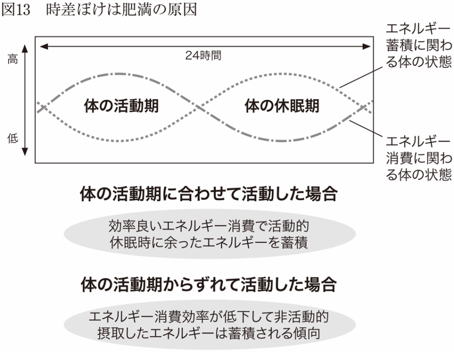
もし、この体内のリズムと実生活のリズムが合わないと、どのような事態が起こるでしょうか。体がエネルギーを効率的に使おうとしている時間帯に活動しなければ、エネルギーの消費量が減ることになります。逆に、体がエネルギーの貯蔵機能を高めている時間帯に活動したり摂食する場合は、エネルギーを効率的に使えないために活動量が低下する上に、摂食によって取り込んだ栄養素は消費よりも蓄積される傾向が高まるでしょう。この、体のリズムと実生活上の摂食や活動のタイミングのずれが、肥満の原因となります。そして、肥満はインスリンの機能の低下を招くので、糖尿病のリスクを高めることにもなるのです。
実際、このストーリーに近い条件において、マウスで確認した研究成果があります。その実験とは、同じ摂取カロリーの条件下で、いつでも食べられるマウスと、夜間（夜行性のマウスにとっては活動期）しか食べることができないマウスを比較した研究です。この実験では、いつでも食べて良い方のマウスはどんどん太っていき、血糖値が下がりにくいという糖尿病の症状を呈したのです。つまり、体のリズムと摂食タイミングがマッチしないと肥満を起こし、糖尿病のリスクが高まることが実験的に示されたのです。
一方で、インスリンの血糖値コントロール能力において、どうやら一日のリズムが存在するらしいことが分かってきました。すなわち、私たちが通常摂食する昼間はインスリンの効きが良いのですが、夜間はインスリンの効きが悪くなるようのです。考えてみれば当たり前かもしれません。私たちの体は夜中に食べることを想定していません。昼間の摂食による血糖値上昇を抑えるために、血糖値の制御能力も昼間に高まるようになっています。ですから、夜間に多量の食物を摂取した場合、食後の血糖値がなかなか下がらないのです。
進化の過程において、私たちは夜中に食事をすることは滅多になかったはずですから、体もそのようにタイミングを合わせてプログラムされています。そして、血糖値が下がらないと、インスリンを分泌する膵臓の細胞が働きすぎて疲弊することになります。このように、インスリンの血糖値コントロール能力の観点からも、体のリズムとずれた食事のタイミングが糖尿病のリスクになることが分かると思います。
私たちの体は数十兆個の細胞でできています。もとは、受精卵という一つの大きな細胞だったのが、分裂に分裂を繰り返し、細胞が役割分担を行うことで私たちの体は成り立っています。成体に達した後も、細胞は分裂を繰り返しており、例えば皮膚や消化管のような体表面を覆う細胞などは、古い細胞が新しい細胞に頻繁に入れ替わっています。
ガンとは、細胞分裂に異常が生じた結果、細胞が際限なく増え続けることで起こる病気です。この主な発症メカニズムは、細胞分裂などの機能を担う遺伝子において、なんらかの理由で構造が変わってしまったり、紫外線や活性酸素（不安定で反応性の高い酸素であり、老化物質であると考えられています）によって傷ついてしまったりすることが発端になると考えられています。
通常であれば、細胞が持っている自己修復機能が、このような遺伝子の障害を修復したり、あるいは細胞を丸ごと排除したりすることで、ガン細胞が暴れだすのを防いでいます。しかし、このようなセイフティーネットをくぐり抜けるガン細胞が、ある確率で現れるのです。そして、このような細胞が出現する確率は加齢とともに高まるため、寿命の延長によって、皮肉にもガンの発症率はあがってきたと言えます。現在、日本人の死因の約３割を占めるのが、このガンです。
このガンの発症も、体内時計と少なからず関係すると考えられています。これに関するとてもセンセーショナルな結果が、夜勤労働者のガンの発症率を統計的に調べた研究によって示唆されています。
現代社会において夜勤はもはや当たり前の労働形態となってきています。24時間態勢で働く看護師、警察官、工場労働者がその代表例でしょう。現在、労働者の15％以上が夜勤にさらされていると言われています。一部のガンの専門医は、夜勤とガン発症における相関を経験的に察知していました。しかし、この研究を進めるには次のようにさまざまなハードルが存在するため、なかなか確度の高い結論を導きだすことができませんでした。
まず、ハードルの一つとして、このような調査は、企業側の協力なくしてはなかなか成り立たないことがあげられます。企業からすれば、せっかく雇い主と労働者の間で労使関係がうまく成り立っているのに、研究者によって疾患のリスクが指摘されたりすると、労災を含めいろいろな問題が生じてきます。したがって、きわめてありがた迷惑な話であると言えるでしょう。実際、労働者の側も、通常の日勤よりも高待遇で仕事ができるので、余計なお世話であると感じるかもしれません。
もう一つのハードルは、夜勤労働者は心身の不調がある場合、通常の日勤業務へ転属されるケースが多いために、追跡調査が難しいという技術的な問題です。夜勤の労働形態もさまざまなケースがあるために、なかなか一緒くたにできないという問題もあります。
そもそも、夜勤によるガンのリスクを唱えたところで、このような業種を廃止することはできません。また、労働者も生活のために働かなくてはならず、疾患リスクの数値を発表しても現場を混乱させるだけではないのか、という考え方もあるでしょう。具体的な解決策もないのに、批判的なデータによって夜勤労働者の不安を煽るだけで終わるということです。私自身としては、問題を直視せず、労働者に十分な説明もせず、傍観すること自体に問題があると思いますが、しかし、このような批判には共感するところもあります。
以上のことを考えると、夜勤労働者の疾患リスクの研究は、研究者自身のモチベーションもなかなか上がりにくい研究対象であると言うことができます。
それでも、いくつかの報告は、夜勤によって、女性の乳ガンや男性の前立腺ガンなどのリスクが高まるということを指摘しており、大きな注目を浴びています。さらに、動物を用いた研究によって、発ガンと体内時計の関係を明瞭に示す結果がいくつも出ています。すなわち、体内時計が正常に機能しなくなったマウス、あるいは生活リズムが乱れるような環境で飼育したマウスなどにおいて、ガンの発症リスクの上昇が観察されたのです。
今や、ＷＨＯ（世界保健機関）の関連組織によって、夜勤はガンのリスクとして、とても程度の高いカテゴリーに分類されるようになりました。どれくらい高いリスクと考えられているかというと、喫煙やアスベストが含まれるグループ（発ガン性があると結論づけられているグループ）の次にランクされているほどです。これは、相当高いリスクと考えられていることになります。このランクに分類されるガンのリスク因子というのは、すでに動物実験ではガンの誘発因子として結論づけるのに十分な証拠はあるものの、ヒトを対象とした研究ではまだ情報が十分ではない、と評価されているものです。つまり、夜勤は発ガンのリスクとして、黒に近い灰色、あるいは、ほぼ黒と認識されていることになります。
では、なぜ、夜勤がもたらす体内時計と生活リズムのずれが慢性的に起こると、ガンの発症リスクは上昇するのでしょうか。
ここで、興味深い報告を一つご紹介しましょう。それは、体毛のない特殊なマウスを使った皮膚ガンの研究です。この研究では、マウスの皮膚に紫外線を当てて、皮膚ガンの発生頻度を調べました。すると興味深いことに、午前４時に紫外線を当てたマウスと午後４時に紫外線を当てたマウスで皮膚ガンの発生頻度を比較すると、早朝４時に紫外線を当てた方が、夕方に紫外線を当てた方よりも２倍以上も皮膚ガンになりやすいことが分かったのです。
私たちの体の設計図であるＤＮＡ（遺伝子をつくっている物質）は、太陽光に含まれる紫外線によって壊れてしまう性質があります。そして、細胞の分裂が正常に起こるように制御している遺伝子にも、ある確率で紫外線によって傷が入ってしまいます。この傷が修復されないと、細胞分裂が異常に活性化してしまう場合があります。これが、まさにガンの始まりとなります。
先ほどのマウスの研究の場合、意図的に紫外線を当てることによってＤＮＡを傷つけ、ガン細胞の発生を促したのですが、夕方の方がＤＮＡの傷を治す修復能力が高いため、ガンの発症が抑制されることが分かりました。
このマウスの実験結果を人に当てはめて考えると、皮膚のＤＮＡ修復能力が低い時間に日光を浴びすぎるのは皮膚ガンの発生リスクを高めるということになります。おそらく、ヒトにおいても同じようにＤＮＡの修復能力には一日のリズムが想定され、素直に考えると、太陽にさらされる「はず」の時間に高まっていると考えられます。
問題なのは、生活習慣などによって体内時計が太陽のサイクルとずれてしまっている人の場合、昼間にＤＮＡ修復能力が下がっていることもありうることになります。ですから、このような人たちの場合は、太陽光による皮膚ガンのリスクが比較的高いということが暗に示唆されているのです。
この報告は、紫外線による皮膚ガンの発症が深刻な白人社会において大きく注目されています。白人のように皮膚の色素が薄いと、皮膚深部への紫外線の透過が高くなるため、肌が有色の人種よりもガンになりやすくなるのです。
この一連の報告は、皮膚ガンのみの話にとどまらず、体内時計とガン発症の関係を示すメカニズム全般の解明につながる大きなヒントになっています。ヒトにおいても、皮膚の細胞だけではなく、全身の細胞でのＤＮＡの修復能力と、ガン細胞を死滅させる能力（「アポトーシス」と呼ばれます）などで一日のリズムがあることが想定されます。
では、なぜ、このようなリズムの存在が想定されるのでしょうか。先ほどの皮膚ガンの話ではその理由は分かりやすく、紫外線が降り注ぐのは昼間であるので、その時間に備えるように皮膚の抗ガン活性を高めるべく、体内時計はプログラムされていると考えることができます。
では、皮膚以外の他の組織はどうでしょうか。紫外線と同じように発ガンの原因となる因子が他にもあります。おそらくその最大の原因は、ストレスや食事、さらに運動のような生活因子と考えられます。ストレスホルモンや食事や運動などによる代謝の活性化によって、反応性が高い活性酸素や、ＤＮＡを傷つけるような物質が体内で発生します。ストレスを受けたり食事をとったりするのは通常昼間ですから、この時間帯に抗ガン耐性を高めるように体内時計はプログラムするはずではないでしょうか。それならば、食事やストレスによる発ガン物質への暴露と体内時計による抗ガン活性のタイミングが合わない生活を続けると、発ガンのリスクが高まることは道理ではないでしょうか（図14）。
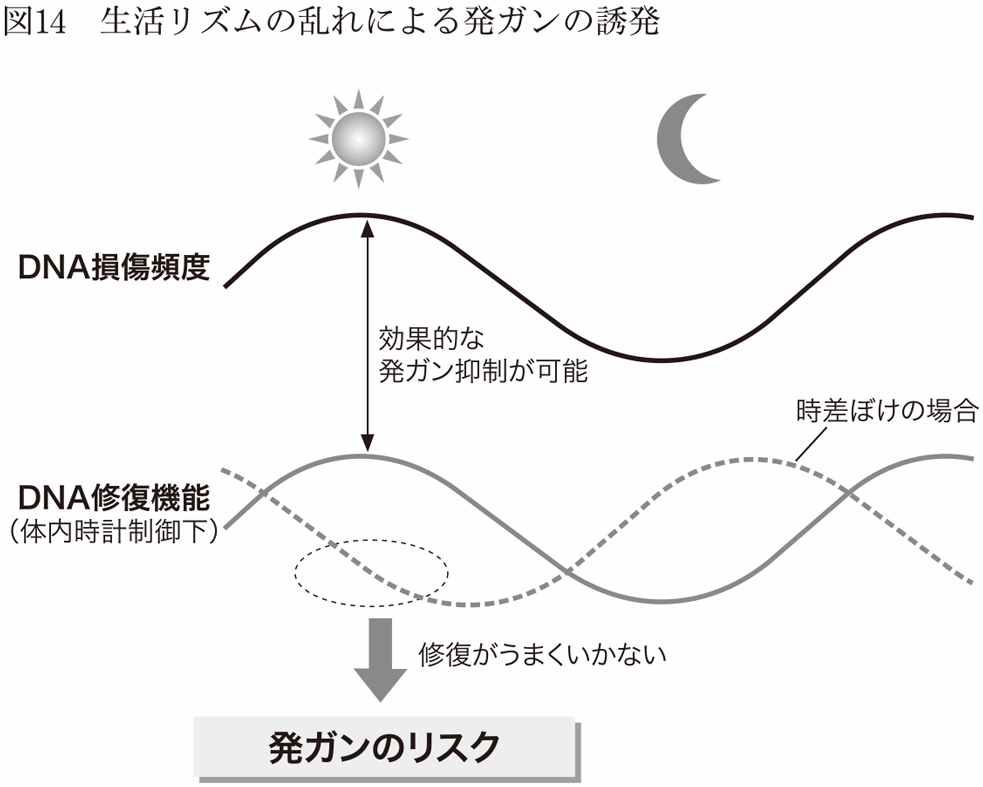
より具体的に説明するならば、生活習慣によって体が夜型化している人は、昼間の抗ガン機能が朝になってもなかなか高まらないということになります。すると、昼間の紫外線、食事、運動、さらにさまざまなストレス等によって生じるＤＮＡの傷が、効率良く修復できないために、発ガンのリスクが高まっていると考えることができます。
数ある循環器疾患の中でも、最も注目すべき病態は動脈硬化ではないでしょうか。動脈硬化とは、動脈の血管の壁の中に脂質が蓄積して、血管の構造的な変化や炎症が発生し、文字どおり動脈が硬くなってしまう症状です。
血管は、血液を運ぶために縮んだり伸びたりするという血管機能の生命線とも呼べる弾力性がありますが、動脈が硬くなると、これが失われることになります。さらに、血管の中空が狭くなることで詰まりやすくなり、これが大切な血管で起こってしまうと脳や心臓に深刻なダメージを与えることになります（図15）。
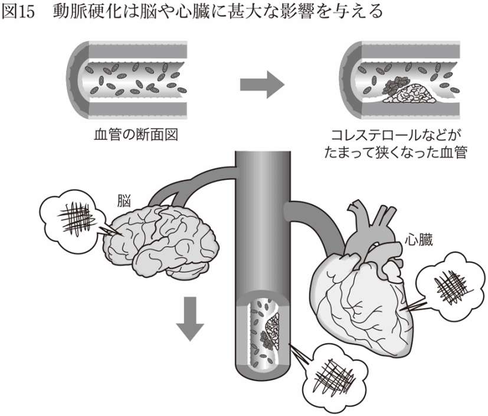
これが、いわゆる脳卒中や心臓病です。これらは生死に直結する、きわめて深刻な疾患であり、早朝や夜中に倒れて突然死に至るケースも多く報告されています。こうした、動脈硬化性の疾患によって亡くなる人の割合は、ほぼガンと同様、日本人全体の３割にも達しています。
動脈硬化の発生過程はとても複雑で、さまざまな要因が重なりあって蓄積し、最終的に動脈硬化に至ります。その中でも特に関係が深い原因は、肥満、糖尿病、高血圧症、および脂質異常症（血液中の特定の脂質の濃度が高まる症状）です。
肥満と糖尿病が体内時計と関係があることについてはすでに説明しました。一方、体内時計の機能を失ったマウスでは、高血圧や脂質異常症を示しやすいことが分かっています。未だ直接的な証拠には乏しいと言わざるをえませんが、動脈硬化の要因となる先に述べた因子のいずれも体内時計と相関があることが示されていることから、体内時計と生活リズムのずれというものは、動脈硬化のリスクとなっていると言っても良いでしょう。実際、夜勤労働者を統計的に調べた研究においては、夜勤が動脈硬化のリスクになるという報告がいくつか存在しています。
また、血圧の一日のリズムが循環器疾患の発症に大きく関わっていると言われています。私たちの血圧は、生活を規則正しく送っている人たちの場合は、起床前の早朝に最小値となり、夕方頃に最大値となるような一日のリズムを示します。実際は、血圧には運動や心理的影響等による一時的な変化も大きいのですが、一日の中の大きなうねりとしてはリズムが存在します。ですから、安静時に血圧測定したとしても、測る時間によって血圧の値は変わってくるのです。
一日のリズムの最高時と最低時を比較すると、数値にして30以上も血圧に差が出るので、血圧の評価をする時は注意が必要です。血圧が高いということは血流が盛んであるということですから、まさに体のエンジンがかかっている状態に相当します。実際、スポーツの好記録は夕方に出やすいというデータもあります。そして、この血圧が夜になっても下がらない場合に、脳卒中や心臓病のリスクが高まると言われています。夜間は、基本的に臓器も休んでいます。血流に関係する心臓や血管も例外ではありません。血圧が低いはずの夜間や早朝では血管や心臓の機能は下がっているのですが、それにもかかわらず血圧が下がらないと、それらの臓器に相当な負担がかかることになります。夜勤によって生活のリズムが乱れると夜間の高血圧を高頻度で起こし、このことが夜勤労働者の循環器疾患リスクに関係していると言われています。
一方、夜勤とは無縁な人たちでも、不規則な生活を送っていたり、体内時計の夜型化が進んでいたりすると、夜間の高血圧のリスクを抱えている可能性があります。加齢にしたがって高血圧を患うことは、病的というよりは自然なことかもしれません。しかしながら、高血圧が進みすぎることは、死に直結する循環器疾患の最大のリスク因子ですから、疾患予防のために回避すべきなのは間違いありません。ですから、体内時計のずれを防ぐことによって、血圧が下がるようになる可能性があるのならば、高血圧療法のターゲットとして体内時計を検討すべきだと考えられます。
うつ病と双極性障害（躁うつ病）は、合わせて「気分障害」と呼ばれています。よく知られているように、うつ病は気持ちが沈んでしまう心の病であるのに対し、双極性障害は気持ちが沈む時期と高ぶっている時期を繰り返す疾患です。
日本における気分障害の総患者数は２０００年頃から一気に増えてきました。この時期は日本の経済状態が悪化している時期にあたり、気分障害が経済苦と関係が深いことはよく言われていることです。一方、この頃は、メールやインターネットがちょうど普及してきた時期でもあります。つまり、夜型生活、あるいは夜間の光にさらされる環境が進行することで、体内時計の夜型化の進行が加速してきた時期とも重なっていると考えられます（図16）。
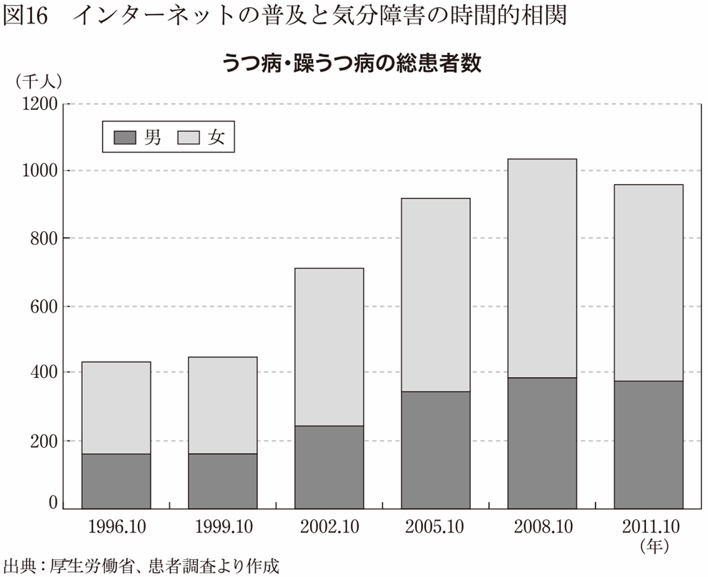
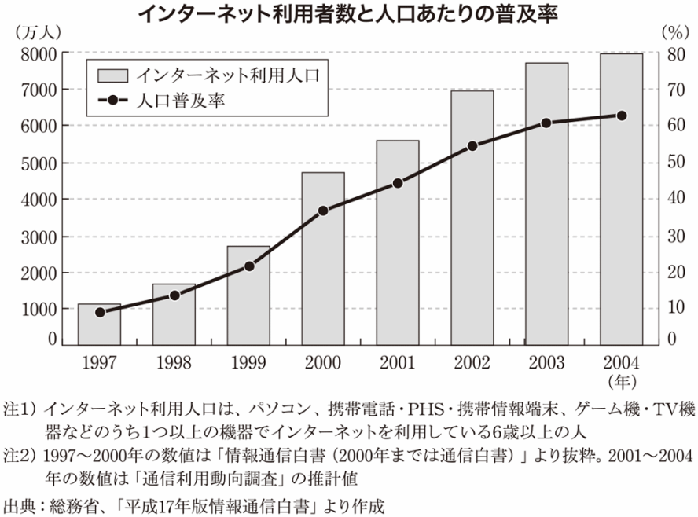
このような時代的な背景を考えると、体内時計と気分障害の関係は無視できないものですが、この関係をもっと印象づける事実があります。それは、気分障害の患者の生活リズムが、健常な人たちに比べて、顕著に乱れている傾向が強いことです。私たちは夜になって体温が下がり始めると眠気を感じるのですが、うつ病の患者ではこの体温の低下が不十分なために睡眠に問題をきたし、そのため生活リズムの乱れが助長されていると考えられます。
しかし、以上のことだけでは、気分障害になったから生活リズムの乱れが起きたのか、生活リズムの乱れが原因で気分障害のリスクが高まったのか、どちらが原因でどちらが結果なのかよく分かりません。
この疑問に答えるものとして、体内時計が気分障害の発症に関わっていることを示す報告が多数あります。まず、昼夜交替勤務がうつ病の発症と相関があることが示されています。このことは、生活リズムの乱れが気分障害の原因になりうることを意味しています。また、体内時計をつくり出している時計遺伝子における構造の個人差と、気分障害の発症リスクの間には有意な関係があるという数多くの報告によって、体内時計と気分障害の関係性が深く印象づけられます。これらは、疫学と呼ばれる統計的な研究であり、直接的な証拠としては限界がありますが、体内時計がヒトの気分障害の発症に関わることを示唆しています。
この研究上の限界をカバーするために、動物での実験も行われています。動物の気分障害......というのはイメージしにくいかもしれませんが、研究者はマウスやラットのようなげっ歯類でも気分障害の症状を示すことを明らかにしています。しかし、これは人間のように分かりやすい症状として現れるわけではないので、さまざまな行動学的な試験をすることで客観的に評価をします。この評価法を用いて、「体内時計と気分障害において関係が認められる」という統計学的な事実だけではなく、もっと踏み込んで、「体内時計に異常が生じることで気分障害のリスクが増大する」ことを、動物を用いて端的に証明するのです。
このような研究によって分かってきたことに、ある時計遺伝子の機能を失ったマウスでは躁状態を示す、というものがあります。また、長期にわたって生活リズムを強制的に乱したマウスでは、うつ病のような症状を示すことが分かりました。
さらに、体内時計が気分障害の発症に関わっていることを間接的に示している興味深い例があります。すなわち、気分障害の薬物による治療の効果は、体内時計が調整されたことによって、結果的に得られている可能性があるという例です。
双極性障害の治療薬の一つに、リチウム（原子番号３の元素）というものがあります。実は、このリチウムが体内時計の調節（時刻合わせ）に関わっていることが知られています。つまり、リチウムによる双極性障害の治療効果は、体内時計の調節を介して発揮されている可能性が示唆されるのです。
また、前述したように、体内時計によって制御されている、脳の松果体から分泌されるメラトニンというホルモンがありますが、このメラトニンやメラトニン類縁物質の薬物療法により、双極性障害の改善に効果があったというのです。メラトニンは眠りのタイミングをつくり出すホルモンであると同時に、体内時計に働きかけて時刻合わせをする機能も持っています。つまり、メラトニン薬によって双極性障害の改善が起こった理由を考えた際に、この薬が体内時計のずれを改善した結果、気分障害の治癒にも効果があったと解釈することが可能なのです。
このように、治療薬の側面から考察してみても、体内時計の乱れというものが気分障害の原因の一つであることが強く示唆されるのです。
年齢を重ねると、何かが起きてもなかなか記憶できない、あるいは覚えていたはずなのに思い出せないということが誰にでも訪れます。しかしながら、加齢に伴うさまざまな原因で脳の神経細胞がある領域にわたって死滅してしまうと、現実の理解に困難が生じたり、行動上の異常もみられ、さらに精神的に障害が現れたりと、日常生活に多大な影響を与えるようになります。このような疾患を認知症と呼んでいます。かなり口語的ではありますが、〝ぼけ〟という言葉で表現されることもあります（実際には、認知症だけでなくもっと広い意味で使われているようですが）。これは乱暴な言葉ではありますが、症状をイメージしやすいかもしれません。この認知症患者においても、生活リズムの乱れが現れることがよく知られています。特に、夜間の徘徊は家族や介護者を悩ませる大きな問題です。
気分障害と同様、認知症に関しても、体内時計の機能の問題が発症リスクになるのか、あるいは、認知症になったことで生活のリズムの乱れが起こるのか、ここが議論になるわけですが、現在までの報告によると、後者の可能性が高いと考えられます。つまり、認知症患者に見られる生活リズムの乱れは、認知症の原因ではなく認知症による結果だということです。
しかし、体内時計がうまく機能しないと、先に述べたように体にさまざまな不調が起こります。そのことが、間接的に認知症の発症リスクとなったり、増悪させる因子となったりする可能性は十分にあります。例えば、睡眠不足がアルツハイマー型認知症を進行させるという動物実験の結果があります。
では、認知症患者はどうして生活リズムが乱れるのでしょうか。これは認知症が発症することで、体内時計の機能自体が低下することに関係していそうです。全身の個々の細胞の中には体内時計が独立して存在しますが、この無数の体内時計の針がずれないようにしているのが、脳にある視交叉上核です。全身の個々の細胞の時計が各家庭の時計ならば、視交叉上核は時計がくるわないように修正する電波塔の役割をしています。さらに、この視交叉上核の機能を助けているのが、松果体から分泌されるメラトニンです。認知症患者ではこのメラトニンの作用がとても弱くなっており、その結果として視交叉上核の働きが弱まっている可能性があります。すると、一日の中での生活のメリハリが弱くなったり、体内時計と生活リズムのずれが起こりやすくなったりします。
体内時計が生活や社会のリズムとずれないようにするには、朝や日中の太陽光を浴びることが大切です。このことは第３章「体内時計の『微』調節のしくみ」のところで後ほど詳しくお話しします。高齢になると光を受容して体内時計の修正を行うための身体機能が下がってくるだけでなく、そもそも外出して太陽のもとに出る機会がとても少なくなります。ですから、なおのこと意識して太陽のもとに出なければなりません。寝たきりのために十分な光が届かない場所で一日中過ごしていれば、生活リズムの乱れはどんどん悪化することが想定されます。
加えて、ヒトの体内時計の修正には会話などのコミュニケーションがきわめて重要であると考えられています。メカニズムの研究については具体的なものはないに等しいのですが、食事を皆でとりながら楽しく会話をするというのは、一家団欒という側面だけでなく、家族の体内時計を同期させる効果もあるのかもしれません。しかしながら、認知症になってしまうと、このような機会も劇的に減ってしまうでしょう。
認知症による生活リズムの乱れが体内時計によるものならば、体内時計を修正することで生活リズムが正常化することが期待できます。実際、薬によってメラトニンの作用を高めてあげたり、日光浴の習慣を取り入れたりすることで、生活リズムが改善されたことが報告されています。
また、前述した通り、ヒトの体内時計は社会的コミュニケーションの影響を強く受けると言われています。つまり、家族や友達とのコミュニケーションが体内時計のずれを防いでくれるということです。このメカニズムについてはさまざまな憶測をたてることができますが、明確には説明することができません。ヒトは社会性の生き物であり、集団として組織を機能させることで大きな強みを発揮させる生き物ですから、個々の体内時計のリズムを集団の活動リズムに合わせることはきわめて重要であったに違いありません（図17）。
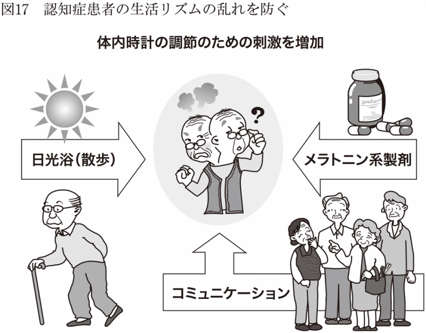
ところで、認知症患者の体内時計を修正する場合、その修正の効果には大きな個人差が現れることが想定されます。なぜなら、認知症は脳の神経細胞死などによって起こるので、体内時計と関係する脳組織の損傷が進んでいる場合は、体内時計を調節しようとしても、もはや明確な効果は期待できないと言えます。もっと具体的な話をすると、アルツハイマー型認知症の研究によって、脳内にある体内時計の中枢である視交叉上核の細胞数が減っている場合があるという報告や、メラトニンが作用するのに必要な受容体という物質の量が劇的に減っているという報告があります。
もちろん、すべてのアルツハイマー型認知症の方にその病態が見られるわけではありませんが、このような状態になると、光やメラトニンなどによる体内時計の調節効果はきわめて限定的なものとなってしまうでしょう。
最近は不妊治療がとても増えてきたように感じます。10年ほど前までは、不妊治療という言葉をそれほど耳にしなかったような気がしますが、今では当たり前に聞くようになった感さえあります。それはやはり、結婚や出産の高齢化が一番の原因だと思われます。特に女性は生殖機能と年齢の間には大きな関係があります。
この生殖機能に関しても、体内時計との関係が次第によく分かってきています。これまでの研究成果を総合的に考えると、生活リズムの乱れは生殖機能にも影響を及ぼす可能性が大きいと言ってよいと思います。それにもかかわらず、インターネットやスマートフォンの台頭による夜型生活に代表されるように、生活リズムと体内時計のリズムのずれは今後さらに進んでいくと思われます。
この傾向は大人だけに留まらず、最近では小さな子供にまで浸透しており、体内時計の攪乱は止まる気配を見せません。したがって、生殖機能の低下は、今後、改善するどころかさらに進んでいく恐れがあるということになります。
夜勤の多い職場ではよく耳にすることかもしれませんが、こうした環境では女性の性周期（一般的には生理と呼ばれています）の乱れが頻発すると言われています。実際、いくつかの疫学的なデータによると、夜勤と生理不順の間には相関があるようです。生理不順は生理痛などの原因にもなりますが、これは、妊娠の成功率を下げることにもなります。
この生理不順は、体内時計の機能に異常があるマウスで顕著に起こることが分かっています。マウスの性周期は約５日間と短く、この５日間は細胞検査によって３段階のステージに分類されています。体内時計の機能に異常があるマウスでは、５日間という周期の長さが伸びたり短くなったりと著しく乱れるだけでなく、３段階のステージが正常な順番どおりに現れてきません。また、排卵ホルモンや妊娠維持ホルモンの分泌量の低下も見られています。
さらに問題なのは、その影響が妊娠中にも及ぶことです。つまり、妊娠中の生活環境や生活習慣が体内時計のリズムからかけ離れたものであると、胎児にもさまざまな影響を及ぼしかねないと考えられます。特に、母ネズミや母ザルなどを用いた動物実験によって、この辺りのことはよく分かってきています。
例えば、母ラットを飼育する光環境において、一日中、蛍光灯のもとで明るい環境で飼育したり、光の明暗の周期を一日の24時間からずらして乱したりすることで、動物の体内時計と生活リズムのずれを人工的に無理矢理起こして、胎児に与える影響を観察するという実験があります。この実験では、胎児ラットにおいて糖尿病のような代謝異常が起こることが報告されました。成体のラットにおいても生活リズムの乱れが糖尿病のリスクになることはすでに説明したとおりですが、どうやら胎児にも同じような影響を与えるらしいのです。母ラットと子ラットの血液は胎盤を介してつながっているので、母ラットの代謝異常、例えば高血糖や脂質異常のような影響などは、胎児には無関係ということにはならないのです。
また、これとは別に、一日中、明るい環境で飼育した妊娠中のサルを使った実験があります。恐ろしいことに、生まれてきた子ザルの体温リズムが顕著に乱れていただけではなく、さらにこの子ザルは低体温症であることが示されています。サルは昼行性であると同時に、進化的に私たちに近い生き物ですから、これはとても貴重な研究成果だと言えます（前述したように、サルの研究は倫理的にも、費用的にも、そして実験技術的にも難易度がとても高いのです）。
近年、低体温症の子供が少しずつ増えてきていると言われています。ある統計では、中高生男子の約２割において、体温のリズムの夜型傾向とともに、一日を通して体温が低かったことが報告されています。体温が低ければ、代謝も低くなることによって細胞も活性化しないため、体のエンジンがかかってきません。脳を含め身体の活動レベルは低くなり、意欲も低下してしまうのです。エンジンのかかっていない体で一日を過ごすことは、体調不良の原因にもなります。生後の子供自身の生活リズムの問題だけではなく、生まれてくる前のお母さんの生活習慣によってもすでに胎児はさまざまな影響を受けている可能性がある、とサルの実験結果は警告しています。
この影響は、メラトニンというホルモンの母体からの分泌量の低下や、分泌のタイミングが適切ではないことが原因ではないかと考えられています。メラトニンについてはすでに説明しましたが、体内時計の中枢である視交叉上核に働きかけるホルモンで、体内時計を安定化させる作用があり、胎盤を通過して胎児の体内時計に作用すると考えられています。実際、このメラトニンを上手に補うことで、胎児の体内時計の変調を整えることができる可能性があります。
そして、これは重要な点ですが、夜勤労働者の疫学的な報告においても、さらに体内時計の機能に異常があるマウスでも、流産のリスクが示されています。妊娠中の生活リズムは安全な出産のためにとても大切なものであると言えるでしょう。
ところで、不妊の原因は女性の体にのみあるわけではありません。最近では、男性の精子減少や受精能力の低下が問題になってきています。夜勤による影響を調べた報告は未だ限定的で証拠には欠けるように思われますが、時計遺伝子構造の個人差（多型）との関係については男性の生殖機能との関連が報告されており、これはつまり、体内時計はヒトの男性不妊にも関係しうることを示唆しています。
その端的で分かりやすい結果は、体内時計の機能に障害のあるマウスの実験によって得られていて、男性ホルモンの分泌低下と精子数の減少が確認されています。男性不妊と体内時計の関係についての研究はまだまだ始まったばかりですが、現代の光環境による体内時計の夜型化や、インターネットの台頭などによる生活リズムの乱れというものが不妊の原因だとすると、早急な対応が国家レベル、あるいは国際レベルで必要になってくると思います。
老化自体は病気ではありません。しかしながら、生活習慣によって老化の進行度は変わるということは科学的にも分かってきています。例えば、カロリー（エネルギー量）の摂取を抑える方が老化の進行が遅くなると言われています。
そして、この老化の進行に関わる有力な物質として注目されているのが活性酸素です。「体内時計とガン」のところでも述べましたが、活性酸素とは反応性の高い状態の酸素のことであり、細胞を構成しているさまざまな生体高分子（ＤＮＡやタンパク質のこと）と反応して、その機能に障害を与えます。摂取カロリーが多いと代謝が活発になり、その副産物として活性酸素が発生してしまいます。
では、体内時計との関係はどうかというと、時計遺伝子を破壊して体内時計が機能しなくなったマウスにおいて、いくつかの臓器での活性酸素の蓄積が促進されることが報告されています。実際、このマウスではさまざまな老化の兆候を見ることができます。例えば、体毛の再生能力の低下が顕著であったり（男性的には気になるところです）、また皮膚の脂肪の層が年老いたマウスのようにとても薄くなったりしています。そして、やはり寿命がとても短くなります。マウスの寿命は２年くらいなのですが、このマウスでは半年程度になっています。一方で、夜勤労働者についても体内における活性酸素の蓄積の進行が報告されており、マウスのデータをある程度支持しています。
では、なぜ、体内時計の機能に異常が生じたり、生活のリズムが乱れたりすると、活性酸素の蓄積に至るのでしょうか。それは現時点では説明できません。ただ、この活性酸素がいつ発生しやすいのか考えてみると、ある一つの仮説は立てられると思います。
活性酸素は私たちの体では活動時間帯に多く発生することが想定されます。つまり、昼行性の生き物の場合では、呼吸、摂食、代謝、運動、さらに浴びる紫外線量などは昼間の方が高いわけですから、体も当然、それに備えて活性酸素の無毒化機能を高めると考えられます。この活性酸素を無毒化する機能が体内時計によってコントロールされているならば、生活リズムと体内時計のずれは、活性酸素の発生時刻とその無毒化機能のタイミングのずれを意味します。すなわち、発生した活性酸素を効率良く無毒化できないことになり、私たちの細胞は傷つけられて老化が進行することになります。実は、この活性酸素の除去システムの体内リズムは、ほとんどの生き物に存在することが示唆されています。
生命の設計図であるＤＮＡは紫外線に弱い性質を持っており、ＤＮＡが傷つけば細胞は正常な状態を保つことができなくなります。特に、原始地球はオゾン層がまだ十分ではなかったはずですから、今よりもさらに紫外線は生命にとって致命的な存在だったことでしょう。原始生命である単細胞生物（一つの細胞からなる生命体）は、高等な多細胞生物のように毛や皮膚で覆われているわけではないため、紫外線が及ぼす影響は甚大だと思われます。したがって、太陽光線が降り注ぐタイミングを予測するように活性酸素を無毒化する機能を高めておく必要があったのでしょう。
このように、活性酸素を無毒化する機能において約24時間のリズムをつくり出せる細胞体が生存に有利であったと考えられます。このリズムを備えている細胞の場合、太陽が昇ってくる頃には、活性酸素の無毒化機能を十分に高めておくことが可能なので、ＤＮＡの損傷を和らげることができるのです。
繰り返しますが、このリズムはほぼすべての生き物に共通に存在することが見出されており、実は体内時計の原型として機能したと考えられています。これに関しては生物学のより詳しい話が必要になってくるので、本書では控えたいと思います。
＊ ＊ ＊
ここまで、いろいろな病気の発症に体内時計が関わっているという話をしてきました。本書で取り上げていない他のさまざまな病気にも、体内時計が関わっていると言われています。
では、なぜ、体内時計はそんなにも多くの病気のリスクになるのでしょうか。
これは最近の研究で分かったことですが、私たちの体の中のさまざまな機能には、私たちの想像をはるかに超えて一日のリズムが存在することと関係があります。前述したように、睡眠・覚醒はもちろんのこと、体温や血圧のように自覚しにくい身体機能においても一日のリズムがあります。まさに、ありとあらゆる身体機能に、一日のリズムが存在すると考えられるようになってきました。
私たちの体は、数万種類の遺伝子が日々絶え間なく働くことで、身体機能を維持しています。驚くことに、細胞の中で働いている遺伝子の１割以上において、体内時計がその活性の一日のリズムをつくっているということが分かりました。「１割」というとそんなに多くないように感じられるかもしれませんが、これは、この数字以上に意味を持つと考えられます。
遺伝子と体の機能は、ほとんどの場合、１対１の関係ではありません。例えば、代謝経路にはたくさんの種類の遺伝子がつくる酵素が関わっていますが、このうち重要な酵素の活性において一日のリズムが存在すると、代謝経路の広範囲にわたってリズムが生まれる可能性が出てきます。
Ａ → Ｂ → Ｃ → Ｄ → Ｅ（アルファベットは代謝産物を意味します）という代謝反応経路の場合、Ｄ → Ｅの反応を制御する酵素の活性に一日のリズムがあっても、Ｅの生成量においてのみリズムが発生しますが、Ａ → Ｂを制御する酵素の活性において一日のリズムが存在すると、Ｂだけでなく、Ｃ、Ｄ、Ｅの生成量にまでリズムが発生することになります。そうなると、Ｂ、Ｃ、Ｄ、Ｅから派生する別の代謝などの経路にわたっても、一日のリズムが伝わっていくことになります。
このように、遺伝子の活性に体内時計がリズムを与えることによって、たくさんの体の機能におけるリズムが自然界で長い年月をかけて構築されてきました。したがって、体のリズムと実際の生活のリズムのタイミングが合わなければ、多くの病気のリスクになることは不思議でないのです。
私たちの体のリズムというのは、私たちが自然のリズムで生活することを前提としてプログラムされています。逆に言えば、当たり前のことですが、現代のような24時間社会に適応できるように私たちの体はプログラムされていません。そうした機構を備える必要もなかったはずです。
体と生活のリズム、この両リズムのタイミングのずれによって病気のリスクが高まるメカニズムには、大きく二つあると述べてきました。本章の最後に、改めて整理しておきましょう。
まず一つ目は、恒常性に関するものです。これは、私たちが生命体であり続けるために、体内の状態を一定に保つという体の性質です。自然環境において生活する場合は、私たちの体に及ぼす環境因子は一日の中で大きく変化します。
照度、気温、湿度、音、あるいは社会的接触など、これら以外にも気がつかないさまざまな事象が、朝、昼、夕方、夜、そして夜中にわたって、刻々と変化していきます。また、それに付随して、摂食、運動、思考、排泄などの多くの生命自身の活動にも一日のリズムが生まれてくるので、これらすべてが体内の状態を時間的に変化させる要因となります。
体の恒常性はそれぞれの刺激が大きくなる時間に合わせて、まるであらかじめ予測してプログラムされたように、タイミング良く恒常性の活性が高まるように体内時計で調節されています。生活リズムが不安定であると、体内時計によってプログラムされた恒常性機能のリズムはタイミング良く応答できなくなります。また、現代の生活環境の影響で体内時計が夜型化してしまうと、実際の生活習慣に合わせて体の恒常性機構を発動することができなくなります。
もう一つのメカニズムとは、臓器にかかる負担のことです。私たちは眠ることで脳を休めていますが、他の臓器も、使わない時間に休ませる必要があると考えられます。この臓器の活動のタイミングも、体内時計がコントロールしています。長い間、自然環境で生活していた頃の活動リズムに合わせて、臓器を活性化させたり休ませたりするように体内時計がプログラムしていると考えられます。
しかしながら、生活リズムが不安定であったり、体内時計が夜型化したりしてしまうと、休ませるべき時間に臓器を酷使するような事態が少なからず慢性的に起こってきます。これによって、臓器は疲弊することとなり、機能の低下が起こってしまうのです。
このように、24時間社会に生きる現代人の健康にとって、生活リズムの安定化と体内時計の夜型化の防止は、慢性的な時差ぼけを防ぐうえでとても大切であることが分かっていただけたと思います。それには、生活習慣を少し改善するだけで効果があります。
次の章では、その点について、科学的根拠を述べながら解説したいと思います。
ここまで述べてきたように、体内時計は文字どおり時計であるために安定的であり、機械時計のように自由自在に調節できないため、生活リズムの変化に体のリズムを素早く合わせることができません。それにもかかわらず、現代の私たちは、まさに自由自在に生活リズムを変化させるようになりました。
前章までに触れた夜勤もその一つですが、たとえ夜勤がなくても、誰でも、簡単に、いつでも時差ぼけの状態に陥る可能性があります。例えば、多くの人が無意識に陥っているのは週末の時差ぼけです（これについてはすでに詳しく説明しました）。
では、どのようにすれば体内時計と生活リズムのずれを防ぐことが可能なのでしょうか。この章では、そのヒントを説明していきたいと思います。
さて、こんなことを耳にしたことはないでしょうか。
「私は目覚まし時計がなくても、決まった時間に自然と目が覚める」
「私は目覚まし時計がいくら鳴っても気がつかないことが多く、なかなか起きられない」
睡眠不足でもないのに後者のような状態であるならば、それは体内時計と生活リズムのタイミングのずれ度合いを示唆している可能性があります。
「目覚まし時計がいくら鳴っても気がつかない」人というのは、体内時計と生活リズムがマッチしていない人だと考えられます。こういう人は、夜間の光などの環境要因によって体内時計が夜型化しているので、朝が近づいてきても血圧や体温などの上昇タイミングが遅く、目が自然と覚めないのです。
しかし、このような状態にあったとしても、体内時計のずれを引き起こす環境中の要因を除外して、しばらく規則正しい生活を続けていれば、誰でも目覚まし時計なしで起きられるようになるはずです。体内時計と生活リズムが同調するようになれば、朝が近づくと自ずと体のエンジンが暖まってくるので、自然と目が覚めるようになるのです。体内時計と生活リズムが同調すれば、起床後、すぐに体も心も活動的な状態になり、朝ご飯もおいしく食べられることでしょう。
本書でこれまで何度か述べてきたように、光や食事のタイミングが、体内時計に働きかける一番の大きな要因となります。体内時計の調節の基本は、「朝日と朝食が体内時計を朝型へ、夜間の光と夜食が体内時計を夜型へ修正する」という考え方です。食事の効果も大きいですが、特に光が重要だと思われます。したがって、光環境を見直すことが一番重要であると言えます。
朝起きられない人は、寝る直前まで、テレビ、パソコンやスマホなどに熱中していないでしょうか。これらのことは、体内時計の針を夜型にずらしてしまいます。体内時計が夜型にずれると、朝早くに起きようとしても、体はぐっすりと寝ている状態なので、当然、起きるのが辛くなります。もちろん、胃腸も活動を開始していないので、食欲もわきません。当然でしょう。この状態で無理にたくさん食べても、消化管に負担を与えることになります。
そして、これは精神的に辛いだけの問題ではありません。体中の細胞や臓器の活動の準備が整っていない状態で起床して無理に活動を始めなくてはならないので、さまざまな病の原因にもなるのです。冬の早朝、まだ暖まっていない車のエンジンを無理にふかすと故障の原因になります。それと同じです。
体内時計と生活リズムのずれが問題だという説明からすると、夜型の生活が続いたとしても、生活リズムを一定に保ちさえすれば、体への負担は大きくないように聞こえるかもしれません。これについては、正しいと思う部分と、間違っている部分があると思います。
確かに、起床時間や食事の時間がコロコロと変わる生活よりも、ずっと夜型であったとしても、生活習慣が一定である方が心身への負担が少ないのは、その通りかもしれません。
光や食事のタイミングを仮にうまくコントロールできれば、「昼夜逆転人間」にさえもなることが可能かもしれません。ただ、人間の体内時計は複数の因子によって影響を受けていると考えられており、未だ発見されていない環境要因が存在する可能性もあります。ですから、昼夜逆転のような極端な体内時計の夜型化というのはきわめて難しいでしょう。
例えば、社会的コミュニケーションなども、体内時計調節の強力な因子になっていると考えられています。つまり、体内時計の修正には周囲の人の影響を強く受けることになるので、もし家族の中で自分の体内時計だけを昼夜逆転させたいならば、自分の部屋に引きこもって生活する必要があるかもしれません。したがって、現実的には通常の生活環境において、体内時計に働きかけるすべての因子をコントロールして、体を昼夜逆転にすることは難しいと想定されます。
そもそも、夕方頃に起床すると、体内時計修正に有効な波長光を十分に浴びることができません。夕方の光は赤く見えるように、青色波長光に乏しいので、体内時計に強く働きかけないという特徴があります。また、昼夜逆転生活の人は朝日が昇ってから布団に入るかもしれませんが、彼らにとっての朝日は、通常の生活習慣の人の夜間の光に相当しますので（それもかなり照度の高い）、むしろリズムを乱す原因になります。
こういった理由で、夜勤帰りにサングラスをしている人もいますが、十分に遮断するには限界があるでしょう。また、食事の時間を昼夜逆転生活に合わせたスケジュールで維持することは難しいでしょう。生活が夜型であったとしても、食事の時間は周囲の人からある程度影響を受けるに違いありません。さらに、休日などは、通常の生活サイクルの人と活動をともにする機会が多くなるので、休日だけ生活習慣を一時的に変化させる必要も生じてくるでしょう。これでは、極度の時差ぼけにさらされることになります。
このように、私の感想としては、昼夜逆転のような過度の夜型生活を「健常な状態で」安定させるのはとても難しいように思います。交替性勤務で生活習慣がコロコロと変化する人ほどではないかもしれませんが、長期にわたって過度の夜型生活を維持している場合でも、おそらくは慢性的な時差ぼけに陥っていると推測します。このように考えてみると、いくら夜型で生活を固定しているから規則正しいとは言っても、せめて午前中には起きて活動するのが無難だと思います。
体内時計の調整においては、光と食事が主に重要だと述べました。実際にずれた体内時計を効果的に修正するには、そのメカニズムに納得して取り組むのが大切だと思います。ここではまず、夜型にずれがちな体内時計を朝型に戻すための方法について、メカニズムを交えながら説明したいと思います。
ところで、あえて「微」調節という題名にしているのは、夜型にずれた体内時計を朝型に戻すには、とても時間がかかるからです。毎日根気強く「決まり」を守ることで、少しずつ修正されるものなのです。
第一に、朝に浴びる太陽光が、夜型にずれた体内時計を朝型に戻すための最も重要な調節因子になります。太陽光にはさまざまな波長（色）の光が含まれていますが、青色の波長域（４５０〜５００ナノメートル前後の波長域）の光が重要であると考えられています。
第１章で述べたように、空が晴れていれば屋外では１万ルクス以上の照度があります。曇っていても数千ルクス程度あると言われています。一方、室内環境はこの10分の１未満の照度にすぎません。ですから、この程度の明るさでは、体内時計を効果的にリセットするにはとても十分とは言えないのです。つまり、室内に閉じこもっていては、体内時計は効果的に調整されません。したがって、曇っている日や、日照時間が少ない地域に住んでいる場合は、より意識して外に出るようにしなければ、体内時計を効果的にリセットすることはできません。
さて、身体のどの部分が光を感知して体内時計を微調節するのでしょうか。膝の後ろに光を当てると、体内時計を微調整するのに効果的であるという論文が発表されたこともありましたが、今では、人間を含む哺乳類の場合、基本的には目で光を感知して体内時計を調節していると考えられています。
その証拠として、網膜を失った人の体内リズムは、毎日少しずつ環境の時間からずれていってしまうという事実が挙げられます。人の体内時計は24時間よりも少しだけ長いので、光で調節を受けないと、どんどんずれてしまうのです。そのような人たちが社会生活を営むのが困難になった場合は、メラトニンなどを習慣的に投与して、人為的に体内時計を調節することが必要になります。私たちが物を見るために使っている眼球内の細胞（視細胞）が光を感知して視交叉上核（脳内の体内時計中枢）に刺激を伝えることは、体内時計の調節に重要な要素となります。
ただ、興味深いことに、このような視覚を司る細胞そのものとは別の細胞（網膜神経節細胞と呼ばれます）の一部も、体内時計のリセットに大きな貢献をします。すなわち、視細胞が失われて視覚が失われても、体内時計は調節できるケースも存在することになります。しかし、その場合、光による調節効率の低下は起こります。
目をつむって寝ていても、カーテンを開けて寝ていれば、まぶたを通過した朝日が体内時計の調節を助けてくれます。この光は体内時計のリセットのみならず、メラトニンの分泌を抑えることで、自然な目覚めに効率的であるので、生活リズムの改善にも役立つでしょう。
話は少し逸れますが、虫、植物、そして小型の魚などは、体表面で直接光を感知しています。例えば、虫の脚をちぎって培養した状態で光を当てた場合でも、脚の体内時計はきちんとリセットされます。すなわち、光による体内時計の調節メカニズムは、生物種によってずいぶんと違うことになります。
さて、目から入った光の情報は、次にどのように体内時計を調節するのでしょうか。このことを理解していただくには少し難しい話をしなければなりません。つまり、時計遺伝子がどのように体内時計をつくっているのか、というやや専門的な話が必要になるのですが、ここでは可能な限り専門性を排除して説明したいと思います（より専門的な内容は他書に譲りたいと思います）。
まず、遺伝子とは何でしょうか。遺伝子とは読んで字のごとく、親から子に伝わる因子であることは確かなのですが、実は遺伝子は、私たちの細胞一つ一つの中で絶え間なく働いています。
遺伝子は数万種類もあって、その主な役割は、それぞれがタンパク質の設計図として機能することです。遺伝子自体は設計図で、実際の役割はつくられたタンパク質が担うのです。細胞の形や動きに関わるタンパク質、酵素として働くタンパク質、センサーとして働くタンパク質、情報を伝えるタンパク質など、細胞の中では絶え間なく多種類のタンパク質が遺伝子の設計図にもとづいてつくられているのです。その中でも、体内時計の部品となるタンパク質（時計タンパク質）を設計する遺伝子のことを「時計遺伝子」と呼んでいます。
時計タンパク質の役割は、約24時間周期のリズムを細胞の中につくり出すことです。日時計や砂時計など、時間測定にはさまざまな方法がありますが、時計遺伝子の場合は時計タンパク質の量が約24時間の周期で増減するように制御しており、この量の増減自体が体内時計のリズムの源となっているのです（図18）。
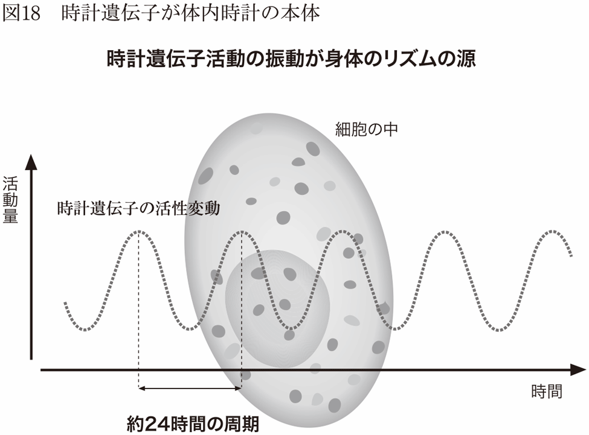
もっと具体的に言うと、ピリオド（Period）という時計タンパク質の量は、時差ぼけに陥っていない人の場合、明け方に最も量が多く、夕方に少ないというリズムを示しています（毛根や血液を使った実験結果）。さらに、この時計タンパク質の量のリズムを基準として、細胞の中でさまざまな機能を持つ他の遺伝子の活動のリズムが発生します。時計遺伝子だけは、タンパク質合成の一日のリズムを、自分自身でつくり出すことができる特別のメカニズムを持っているのです。一方、他の遺伝子は自分自身でタンパク質合成の一日のリズムをつくることはできません。時計遺伝子がつくり出すリズムに依存しているのです。
この時計遺伝子がつくる約一日のリズムは、私たちの体を形づくるほとんどすべての細胞の中に備わっています。つまり、個々の細胞は体内時計を備えているということです（図19）。ただ、問題は、細胞単位の時計はそれほど正確ではなく、何もしないとどんどんお互いにずれていってしまうという点にあります。すると、体全体としてのリズムは失われてしまいます。
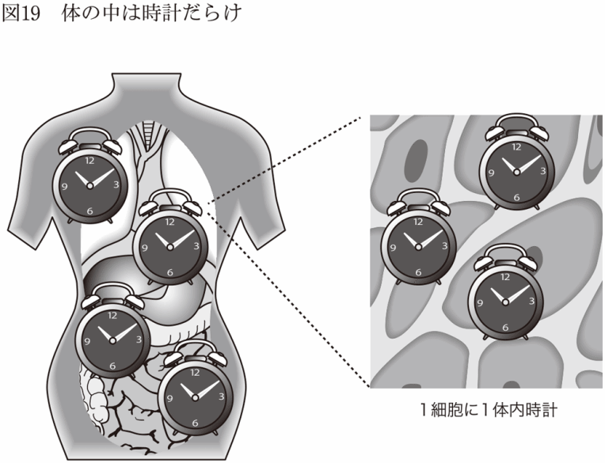
例えば、橋の上をたくさんの人が歩いているとして、皆バラバラのリズムなら橋の揺れは小さいのですが、皆の歩調が合ってくると大きく揺れ始めます。これと同じことで、全体としての大きな揺れ（リズム、振動）を保つために、細胞ごとの時計の針をそろえる役割を持つ組織、まさに電波時計の電波塔として働く時計が必要になります。それが、脳の中にある視交叉上核です。視交叉上核は、必要時に全身の時計にシグナルを送ることで、時計のずれが起きないように働いているのです（図20）。
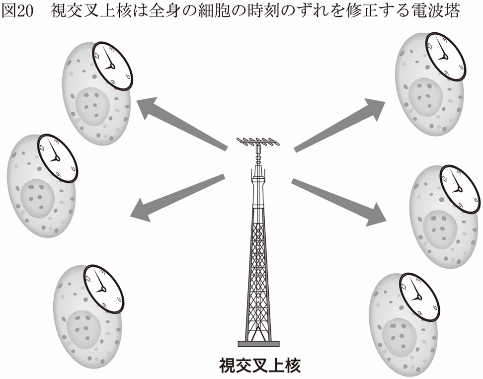
体内時計を調節したり修正したりするとは、時計遺伝子のレベルで考えた場合、時計遺伝子が時計タンパク質を合成するタイミングを好ましい方向にずらす、ということになります。
例えば、先ほどのピリオドタンパク質の例で話すと、本来ならば早朝に一番タンパク質の量が多くなるはずですが、体内時計の夜型化が顕著に進んでしまうと、お昼ぐらいに一番、その量が多くなるような一日のリズムを示すようになります。こうなると、このリズムに従っている時計遺伝子以外のたくさんの遺伝子の活動においても夜型化が進むことになるので、体の機能全体のリズムも夜型にずれることになるのです。したがって、体のリズムを夜型から修正するには、ピリオドタンパク質が早朝に多くなるようなリズムに戻してやることが重要になります。
光刺激が網膜を介して体内時計を調節する話に戻ります。「時計の王様」である視交叉上核は視神経に密着しているので、目から入った光の刺激は即座に体内時計中枢である視交叉上核に伝わります。視交叉上核の時計遺伝子活動のリズムは、この刺激によって変化します。すなわち、視交叉上核の時計の針が進んだり遅れたりするのです。
針が進むか遅れるかは、一日の中で光が当たるタイミングで決まります。時計の王様である視交叉上核の時計の針が変化すれば、この情報が全身の時計に隈無く伝わっていくことになり、その結果、全身の細胞に内蔵されている時計の針も調節されることになります。電波時計に譬えるならば、まず、光によって電波塔の時計が修正され、電波塔からの信号発信によって家庭の時計も修正されるということです（図21）。
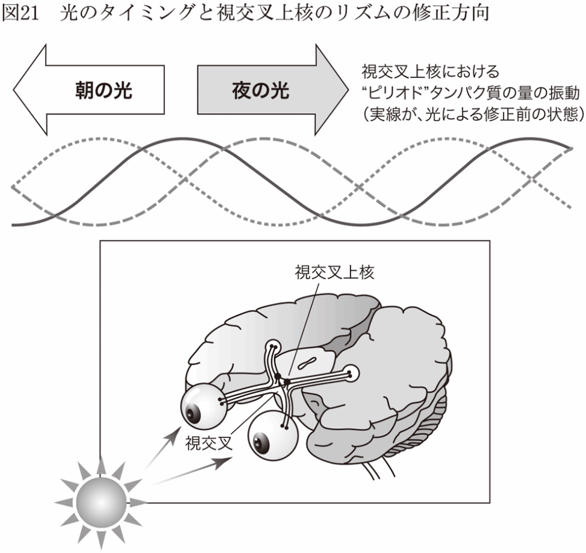
１ミリ以下の小さな視交叉上核から、どのようにして全身にある何十兆個もの時計に情報が伝わるのかはよく分かっていません。腎臓にくっついている副腎という小さな器官が出すホルモンが、視交叉上核からの情報を全身の細胞の時計に伝えているという論文もあります。視交叉上核からの神経連絡が重要であるという報告もあります。また、視交叉上核が脳内の体温中枢に働きかけて体温の一日のリズムをつくり出しますが、この体温リズムが間接的に視交叉上核のリズムを全身の時計に伝えているという説もあります。
この話は深部体温（内臓などの温度）においては説得力がありますが、体表面の温度については説明が難しいように思います。なぜなら、赤ちゃんが眠くなる頃、深部体温を下げるために手足がぽかぽかしてくるように（末端からの放熱）、深部と表面の体温変化は逆転に近いパターンを示すので、これでは時計の針も揃わないことになります。
いずれにしても、複数の方法を使って、まるで電波時計の電波塔のごとく、視交叉上核から全身の時計に時刻情報が伝わるのです。
光ほど重要な意味を持っていないかもしれませんが、体内時計の調節にとって重要なもう一つの刺激が摂食です。私たちは栄養をとるために食事をしますが、食事は体内時計を太陽サイクルに同調させるための刺激としての役割も持っています。夜型にずれた体内時計を朝型に戻すには、やはり朝の食事が効果的であろうと言われています。逆に、深夜の食事は体内時計を夜型にずらす効果があります。
食事の時間が規則正しくないと、体内時計の統制が乱される可能性が高くなります。マウスの研究で分かったことですが、活動期（マウスは夜間、ヒトは昼間）とは異なるタイミングで食事をとると、摂食と関係の深い臓器（例えば肝臓など）は素早く応答して、これらの臓器の体内時計はずれてしまうのです。すると、体内時計の針（すなわち時計遺伝子の活動のタイミング）が体内の臓器間で〝ずれ〟を起こすことになります。つまり、臓器間で時差ぼけが起こっているということです。臓器はお互いに連絡をとりあって活動しているため、このずれはやはり体にとって負担であると言えるでしょう。例えば、Ａという臓器とＢという臓器が一緒に働くことである機能を担っている場合、活動のタイミングが合わないと機能低下が起こってしまいます。
食事がどのようにして体内時計を調節しているのかなど、まだ詳しいことは分かっていない部分もあります。摂取するカロリー量に依存して調節力が変化するというデータもありますし、また、食中の成分によっても影響を受けるという報告もあります。この成分がもっと具体的に分かってくると、体内時計調節の観点から、食事の献立を考え直す必要が出てくるかもしれません。
ここまで、二つのリズム、すなわち体内時計による体内リズムと日々送っている生活リズム（あるいは私たちをとり囲む環境のリズム）がずれないように同期させるのに重要な因子として、光と食事が大事な役割を果たしているという話を述べてきました。繰り返しになりますが、ここで、体内時計が夜型にずれないために守るべき重要なポイントを整理して具体的に触れておきたいと思います。
正しいタイミングで光を浴びたり食事をしたりすることで体内時計はうまく微調節されるのですが、逆に、間違ったタイミングでの光や食事の摂取はむしろ体内時計と生活リズムのずれ（時差ぼけ）を起こすことになります。
夜型にずれないように体内時計を調節するには、「朝」が肝心になります。まず、屋外で朝日を30分以上しっかり浴びるのが効果的です（太陽光線を直接目に入れるととても有害なので、直視はいけません）。朝日を数分間だけ浴びれば良いというものではなく、やはりこれくらいの時間が必要になると思われます。室内にいても十分な照度の光を浴びることは難しいので、やはり外に出る習慣が必要になってくるでしょう。また、カーテンを開けて眠ることで、差し込む朝日が体内時計の朝型への修正を助けてくれることが期待できます。さらに、先に述べたように、朝食が朝日の作用を助けてくれるので、バランスよく栄養をとるのが無難でしょう（図22）。
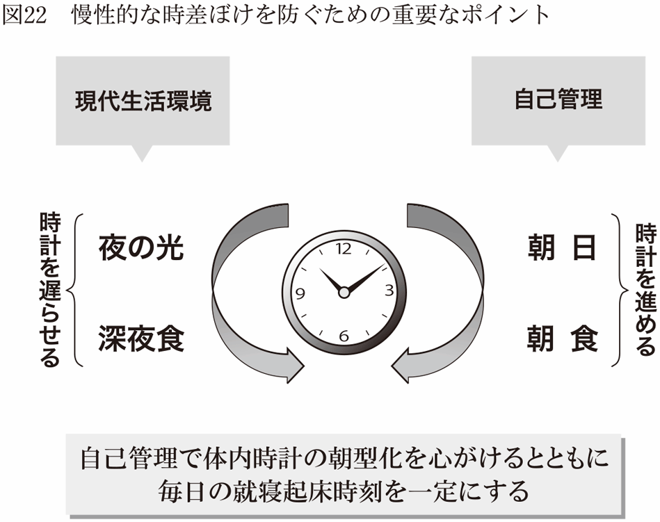
科学的根拠が十分とは言えませんが、朝食のタンパク質に含まれるアミノ酸が、夜のメラトニンの分泌量に関わると言われています。メラトニンは体内時計の調節に働きます。ですから、朝食には少なくとも卵や大豆などのタンパク質を多く含む食品は欠かさない方が良さそうです。また、バランスの良い食事は日中の細胞の活動を活発にし、結果としてメリハリのある身体リズムをつくる手助けとなるでしょう。
ひどく夜型にずれた体内時計を元に戻すには、これらのことは有効ですが、では、いきなり起きる時間などを早めるショック療法的な方法はどうでしょうか。これは、一時的にはうまくいったとしても、時差ぼけが生じることで心身に大きな負担を与えるので、長続きしないと思われます。したがって、体内時計を元に戻すには、少しずつ、根気強く修正することが大切です。すると、生活習慣としても身に付きますので、体に負担がかからないのに加えて、リバウンドのような問題を回避することができるでしょう（図23）。
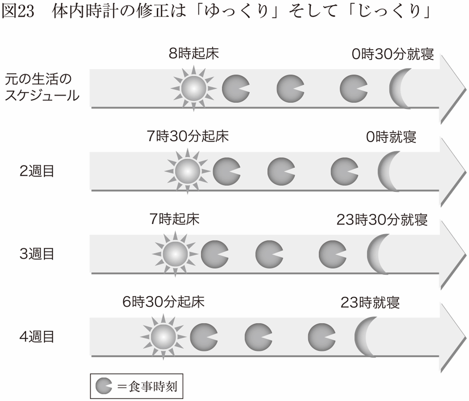
例えば、夏休み中に毎日午後に起きる生活をしていたのに、新学期になって急に朝６時起きの生活を始めるというのは、恒常性維持の破綻や多臓器負担の原因になり、体調不良だけでなく病気の原因にもなります。早起きが必要ならば、例えば、週あたり１時間ずつ生活のリズムを早めて、前述の光や食事に関する決まりを実施すれば、少しずつ、無理なく夜型の体内時計を朝型へ修正することが可能となります。
これまでは朝のポイントとして光と食事の重要性を説明してきましたが、逆に、夜中においては光や大食は御法度ということになります。夜中のタイミングでは、これらの刺激は体内時計を夜型にずらすからです。室内光は、体内時計を朝型へ調節するには弱い刺激だという話は前述しましたが、本来の自然環境では真っ暗であるべき時間帯に、数百ルクスの室内光を目から長時間入れることは、少しずつ体内時計に働きかけて夜型にずらす結果を招きます。したがって、習慣的に夜間にパソコンやスマホに熱中するような人は、じわじわと体内時計が夜型にずれている可能性があります。
最近、海外ではiPadなどの電子機器と睡眠障害の関係がクローズアップされていますが、夜間の光は体内時計を夜型にずらしてしまうだけでなく、眠気も抑制してしまいます。寝る時間が近づくと、睡眠のタイミングを司るメラトニンの血中濃度が上がってきますが、光を浴びることで分泌が抑制されてしまうのです。眠気が抑制されれば、夜遅くまで起きて、テレビやパソコンなどを夜間に使う機会や夜食を食べる機会が増えることになり、どんどん体内時計がずれ、まさに、悪循環に陥ることになるのです。
そうは言っても、夜に仕事をしたり、テストのために勉強をしたりすることが必要だという人もいるでしょう。その場合は、パソコンの画面の照度や部屋の照度を下げることで影響を減らすことができます。特に、フィルターなどによって青色光を遮断することは、より効果的かもしれません。ＬＥＤ照明を使っている場合は、照度だけでなくライトの色を赤っぽくすることで、影響をより減らすことが可能になるかもしれません。
一方、食事の方はどうでしょうか。本来、人間がどのような時間に食事をしていたか想像してみてください。今から１００年以上前までは、夜間はろうそくや白熱電球に頼るよりほかなく、基本的には日が暮れたら寝るのが習慣だったはずです。つまり、食事も夜中にとることは多くなかったでしょう。ところが、私たちは電気の普及によって日没後に夕食をとることが多くなり、夜食等も自由きままにとることが可能になりました。
このような事態は、太陽のリズムに適応するように進化してきた人間の身体にとって想定外のことだったでしょう。食事は時計の王様である視交叉上核を介さずに、全身の細胞に備わる体内時計に直接作用して、時計の針を進めたり遅らせたりする強力な信号です。特に食事と関係の深い機能を持つ臓器は、食事の時刻に合わせて機能を果たすべく、自身の体内時計を素早く調節します。朝や昼間の食事は体内時計修正に大切ですが、過剰な夕食や深夜の食事は体内時計を夜型へずらす結果となります。
このように考察してみると、現代人はいかに体内時計が夜型になりやすい環境で生きているか分かるのではないでしょうか。
朝はカーテンを閉めっぱなしにし、朝食を抜いて仕事や学校に出かけてはいないでしょうか。車や電車通勤のために朝日を浴びる機会を失ってはいないでしょうか。昼間も、オフィスにずっと閉じこもって仕事をしていないでしょうか。夜は、遅くまでテレビを見たりパソコンで作業をし、夜食を食べてはいないでしょうか。
程度の個人差はあるとは思いますが、これらは着実に体内時計を夜型へずらしています。
話は少し逸れますが、東日本大震災の影響で、節電ムードが全国的に広がった時期がありました。当時の新聞の記事では、関東の人々は夕方や夜の暗さに順応しつつあり、それを楽しもうとする機運すらあると書いてありました。アンケートでは７割の人が大きな不便を感じないとのことで、それまでの東京は明るすぎたと考えていたようです。
節電の意味だけにとどまらず、体内時計の観点からも、過剰な光環境が抑制されることは、本来の人間のリズムを取り戻す上で良い機会になるかもしれないと考えられます。合理性と利便性を追求しすぎた結果、現在の異常な光環境がつくられてきたのですが、節電をきっかけに、自然な光環境というものの快適さが見直されれば、思わぬ健康効果が期待されるのではないかと思います。
前述したように、人の体内リズムは24時間より少しだけ長いと言われています。例えば、時刻の情報が一切ない部屋に人を閉じ込めて、いつ寝ても良い、いつ起きても良い、という環境で生活させると25時間程度のリズムで生活することが、これまでの研究から分かっています。光による体内時計の調節に必須な、眼球の網膜を失った人であっても、やはり24時間より少しだけ長いリズム（24・２時間程度）で生活することになります。周期が長いということは、すなわち夜型へずれやすい傾向があることを示唆しています。
ところが、数としては少ないものの、朝型に偏りすぎていて困っている人たちも存在します。夜型より朝型の方がなんとなくうらやましい気がしますが、必ずしもそうではありません。現代の生活では夜に仕事や飲み会などでコミュニケーションをとる場合が多々ありますので、その場合、それを楽しむことに支障をきたすことになります。
このような人たちの場合、前述の工夫は逆効果で、体内時計を遅らせる必要があります。つまり、朝はカーテンを閉めて遮光するとともに、光を目に入れないようにサングラスをかけるなどの工夫が必要になってきます。朝の光は体内時計をより朝型にずらしてしまいます。では、夜はどうかというと、意識的に強い光を浴びる方が良いということになります。食事に関しても、少しずつ、夜型へずらす必要があります。
ただ、個人的には、無理に朝型の体内時計を修正して夜型にずらさない方が良いと思っています。それが人間本来の、自然環境で生活していた頃のリズムである可能性が高いと考えるからです。現時点において体調不良などの大きな問題がないのであれば、そのままにしておく方が良いのではないでしょうか。
お年寄りは朝型の生活になりやすいと言われます。確かにお年寄りは、体内時計の周期が短くなっている可能性は否定できません。なぜなら、実験動物の視交叉上核を培養した研究で、そのような報告があるからです。しかし、周期が劇的に短くなるわけではないので、これが一番の原因ではないと思います。
お年寄りが朝型になりがちなのは、睡眠時間の短縮が主な原因と考えられています。お年寄りの眠りの質が下がるのにはいろいろな原因が言われています。一つは、睡眠に関わるメラトニンというホルモンの分泌量が加齢に伴って劇的に減少するので、睡眠の持続が難しいという考えです。また、お年寄りは定年などによって運動量が減るので、生活のメリハリの低下も一つの原因であるかもしれません。ということは、昼間にもっと活動的になれば睡眠の質が改善される可能性が高くなります。
体内時計と疾患の研究において、夜勤労働者のデータを頻繁に紹介してきました。夜勤労働者は体内時計と生活リズムのずれが頻繁に起こる生活をしているので、この労働体系で働く人たちの調査は体内時計の大切さを知る上でとても重要な役割を果たしています。その貢献のお返しとして、私たち研究者は、夜勤をしながら健康に過ごす方法を考えなくてはなりません。
「夜勤によって生活リズムが乱れることが体に悪いことはよく分かったが、仕事があるのでしょうがない」、という意見も多くあるに違いありません。それどころか、「研究者に指摘されなくても、夜勤が良くないことぐらい、経験的によく知っている」、という意見も聞こえてきそうです。もっともなことです。私とて、実験の都合で夜中に仕事をしなければいけない時はあります。実際、そういう時の体調は、当然、悪くなります。学生の時は特にそうでした。
この体系の労働者は、現在では労働者全体の約20％にも及ぶと言われていて、今後もどんどん増えていくことが想定されています。ということは、体内時計の研究者、あるいは医学研究者が夜勤の健康被害に対して根本的な解決を目指した研究を、そろそろ真剣に考える時にきていると思います。
しかし、非常に残念なことですが、「体にやさしい夜勤」を可能にするのはとても難しいことです。また、夜勤と言ってもさまざまなパターンがあるので、一くくりに論ずることもできません。週に１回当直がある医師と、３交替制で三日に一回夜勤が回ってくる看護師とでは事情が異なります。また、工場などでは、週交替で夜勤を行っている場合が多く見られます。例えば、ある週は早朝から夕方までの勤務で、次の週は夕方から夜中まで働き、また次の週は早朝からの勤務に戻る場合があります。交替間隔がさらに長く、例えば２週間ごとになる場合もあれば、もっと長い場合や変則的な場合もあります。さらに、早朝勤務、夕方勤務および深夜勤務を３交替で行うシフトパターンをとっている工場もあります。労働時間の変化の方向性については、通常は時計回り（つまり、夜型へずれていくシフト）で交替を行いますが、場合によっては反時計回りで交替することもあるでしょう。
このように、会社や組織、さらにその業種の都合により、労働スケジュールのシフトパターンは千変万化します。この業種およびスケジュールの多様性のために、現時点の疫学的な調査では、どのようなシフトパターンが健康を強く脅かし、一方でどのようなスケジュールだと体内時計にやさしいのかなど、明確に示すデータはきわめて限られています。
現代社会において夜勤を全廃することは不可能です。だとすれば、現実的な対策は「どのような交替スケジュールならば、より身体にやさしいのか」ということを調べ、それにもとづいたスケジュールを設定することになるでしょう。しかしながら、現状においては、人間の体内時計を簡単かつ客観的に調べるツールすらないために、研究データは十分にはありません。私の研究室ではこの問題を解決するために、体内時計測定法の開発を進めています。これについては後ほど紹介します。
夜勤に対して現段階で私が言えることはとても限られていますが、ここでは私の夜勤スケジュールの組み方へのアイディアを記したいと思います。データにもとづいた話ではありませんので、どうか鵜呑みにしないでいただきたいと思います。あくまで、体内時計の基礎研究の結果にもとづく理論上の話になります（現状では机上の空論に等しいかもしれません）。
まず、体内時計の針を劇的に動かすのは難しいということを念頭に置くと、「（１）体内時計をずらすことをあきらめて対処する」か、もしくは「（２）体内時計を少しずつでもずらしてシフトに馴染ませる」という二つの考え方ができます。では、（１）または（２）で対処する際に、どのような労働スケジュールが適しているのか述べてみます。
労働スケジュールについて細かく考えてみると、「交替速度（毎日交替や１週間交替などのように、何日ごとに労働時間帯を交替するのか）」、「交替の種類（朝・夜の２交替、朝・夕・夜の３交替、もしくはそれ以上）」、「交替の方向性（３交替以上の場合、朝方向か夜方向のいずれに労働時間帯を移行させていくのか）」、そして「交替頻度（月あたり何回交替があるのか）」などの四つの因子に分けて考えることができます。「交替の方向性」については、人間は早起きは辛いが夜型生活には馴染みやすいことから考えて、夜方向にずらす方が良いと思われます。また、「交替頻度」については少ない方が体に良いのは自明ですので、ここでは「交替速度」と「交替の種類」に関して論じたいと思います。
（１）の体内時計をずらすことをあきらめる場合、交替速度が速い方が良いでしょう。例えば、夜勤を数日連続して行うと、体内時計が中途半端に夜型にずれてしまい、日勤時の生活にまで影響を及ぼしてしまいます。それならば、夜勤は一日にとどめて、そのまま日勤のスケジュールに入る方が良いでしょう。この場合、交替の種類を３交替にすると体内時計が中途半端にずれやすくなってしまうので、交替の種類は２交替にする方が、まだ「まし」であると考えられます。
この考え方はシンプルであり、看護師や警察官などでは現状でもこのシフトが多いように思われます。ただ、これは有効な対策を見出せないまま、体内時計調節をあきらめた結果の妥協策であるので、当然、健康上すすめられたものではありません。
したがって、日勤時とは違う、労働者への特別なケアが必要でしょう。例えば、夜勤時はどうしても労働の効率も下がるので、仕事上のミスが起こることを前提として、セイフティーネットを構築する必要があります。また、入眠にかかる時間と、睡眠の１サイクルが平均的には約90分間であることを考慮するなら、約２時間程度の仮眠時間をもうけるなどの対処で、健康上のリスクを軽減することが可能であると考えられます。仮眠のタイミングは、体内時計という観点から効率の良い仮眠をとるためには、いつも本人が寝ている時間が好ましいと思われます。
ただ、これはやはり机上の話であって、現状ではそんなに都合良く仮眠がとれない職場が大半でしょう。ですから、制度的な介入が必要になってくると思います。仮眠をとりさえすればなんでも良い、という考え方で中途半端に仮眠時間を導入すると、逆に疲労感を伴う結果になる可能性も否定できません。例えば、睡眠が始まってから30分後ぐらいから一番深い段階（徐波睡眠）に入っていくのですが、この段階の途中で無理に起床して、すぐに仕事を再開することは体に大きな負担をかける可能性があります。
（２）の体内時計を馴染ませる場合、交替速度はゆっくりしている方が良いでしょう。２週間ごと、あるいは１ヶ月ごとなどのようにゆっくりシフトさせることで、体内時計が少しずつ馴染んでいくと想定されます。交替の種類については、２交替であると、生活スケジュールの変化が大きすぎて、体内時計の同調に時間がかかりすぎ、時差ぼけ期間が長くなって負担が生じます。夕方シフトを入れて３交替にするか、もっと細切れにシフトを分けても良いかもしれません。
ただ、（２）においては実際のところさまざまな困難が伴います。人間は仕事をしていれば良いというものではありません。買い物に行ったり、テレビを見たり、コミュニケーションをとったりすることで生きているわけです。もし、深夜シフトが１ヶ月も続けば、たとえ体内時計をずらすことに成功しても、精神的な負担が大きいのではないでしょうか。それに、昼夜逆転へ体内時計をうまくずらすことが難しいことはすでに述べた通りです。
つまり、（１）の方法でも（２）の方法でも、いずれも問題が残されることになります。そこで私が提案するのは、24時間の職場体制を維持するために、労働者集団を通常勤務（中間型）に加えて早起き型グループと昼起き型グループに分け、おのおのの構成員は勤務時間を維持するという方法です。先述したような技術を使うことで、将来、個々人の細胞の体内時計の周期長から客観的なグループ分けが可能になるかもしれませんが、現状では朝型や夜型への向き不向きを個人で主観的に判断するしかありません。また、朝型や夜型への適合性をアンケートで点数化して客観性を持たせることも可能です（図24）。
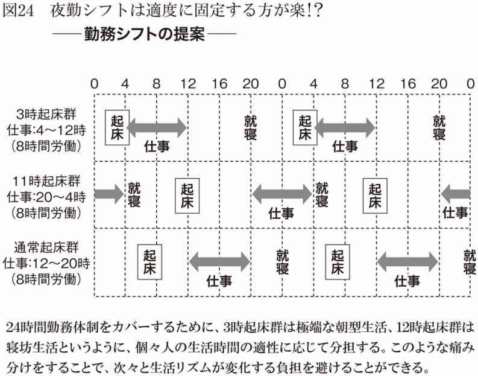
例えば、早起き型グループの人は、朝３時前後に起床、夜９時前に就寝するとし、就労時刻は朝４時から昼12時とします。昼起き型グループの人は、昼11時前に起床、早朝５時前に就寝するとし、就労時刻は夜８時から朝４時とします。このグループは日の出の時刻の前に帰宅および就寝することが必要です。食事の時刻も、固定化する方が良いでしょう。そして、時差ぼけにならないように、休日も生活リズムを大幅にずらさないことです。
この２グループは午前４時に仕事を交替することになり、これによって24時間をカバーできます。それぞれのグループにおいて、生活リズムを固定することで、体内時計と生活リズムの大幅なずれは防げます。また、両グループの生活パターンは、通常よりも超朝型、もしくは寝坊型ではありますが、心身ともに許容できる時間帯ではないでしょうか。早起き型グループは４時から仕事を開始し、午後は自身の生活時間とし、昼起き型グループは日中をプライベートタイムとして、夜から働くことになります。
繰り返しになりますが、朝生活と夜生活は向き不向きがあるので、体質に合わせて選択する必要があります。また、両者とも負担がないわけではありませんので、これらのシフトを恒常的に固定化せずに、体調に合わせて中間型シフトである「通常勤務」へ定期的に戻すことも可能でしょう。この場合、両グループから通常勤務時間へ生活リズムを移行させても生活時間の変化は大きくないので、少しずつじっくり馴染ませていけば、負担は少ないと思います。具体的には、早起き型グループでは午前３時起床から７時起床へ、昼起き型グループでは午前11時起床から７時起床へと生活をシフトさせる必要がありますが、毎週１時間ずつ段階的に少しずつゆっくりとずらすことで、１ヶ月程度あれば４時間のシフトが完了して順応できるでしょう。
ここまで、私の労働スケジュールに対する持論を説明してきましたが、実際は現時点で、夜勤労働者個々人がすぐにとれる対策と言えば、その場しのぎ的なものしか存在しません。例えば先ほど紹介しましたが、２時間程度の仮眠はとても効果的であると言われています。この仮眠が、夜勤労働者に頻繁に見られる高血圧の症状を改善してくれるのです。また、仮眠は、夜勤による体内時計の攪乱作用も抑える効果があると言います。しかし、繰り返しになりますが、中途半端な仮眠時間の導入は、やり方を間違えればさらに事態を悪化させる可能性もありますから、専門的知識にもとづいた導入が必要と言えるでしょう。
もし、私が示した先ほどのような労働スケジュールの見直しという根本的な方法をとるならば、会社などの組織側からの自発的な変革が不可欠であり、同時に労働者への生活リズム指導が必須であると思います。例えば、労働スケジュールに合わせて、個々人レベルでの睡眠・起床・食事時刻を管理して指導する必要があるでしょう。体内時計は光や食事のタイミングに大きく影響されるので、生活リズムパターンに合わせてこれらの環境を工夫する必要がありますが、現状のように個人任せのやり方ではうまく機能しないことも考えられます。
昼夜交替制勤務は今や世界中でありふれた労働形態であり、グローバル化の進んだ現代では不可欠な勤務形態とも言えます。今こそ適切な夜勤形態を模索して、法整備や行政指導を行い、労働者の健康だけでなく、仕事の効率の上昇、および業務上事故の減少を目指すべき時ではないでしょうか。
ここまで、体内時計によってプログラムされている体内リズムと、起床・就寝・食事・仕事などを含む実際の生活や環境のリズム、この二つのリズムのずれが病気のリスクを高めていることを紹介してきました。
ここで少し話題を変え、体内時計を利用することで医療に貢献できる可能性について紹介したいと思います。すなわち、体内時計にもとづいた適切なタイミングで治療を行うことで、治療効果の上昇や、副作用の減少を目指す、新しいタイプの医療が少しずつではありますが発展してきています。この医療を「時間医療」と呼んでいます。
お医者さんに診察してもらった後、薬局で処方される薬の服薬時間は、食後や食間という、時間的にはアバウトな感じで指定されることがほとんどでしょう。これは○○時から○○時までに飲まなければ薬の効き目がないという明確な理由があるわけではなく、例えば胃などの消化管にダメージを与えないためなどといった、それくらいの理由しかない場合が多いのが実状です。
すでに説明したように、私たちの体の機能を支えている数多くの遺伝子の活性には一日のリズムが存在しており、その結果、多岐にわたる生理現象（睡眠覚醒、体温、血圧、免疫、代謝など）においてダイナミックな一日のリズムが生じています。それならば、多くの薬について、最適な投薬の時刻というものが想定されるのは自然な考え方だと思います。
実際、薬は体内の生体物質に反応してその作用を発揮するわけですから、私たちの体内の一日のリズムとは深い関係があります。とても単純に説明するならば、Ｘという病気の原因となっている体内因子に作用するＹという薬を、Ｘが存在しないか、もしくは機能していない時間帯に投与しても意味がありません。Ｘが存在していて、かつ、機能している時に、それをＹが抑制することで投薬の意味が出てきます。
また、薬には本来望まない作用である「副作用」がほぼ必ず存在しています。例えば、先ほどの例で説明するならば、Ｙという薬はＸという体内因子をターゲットとして使用されていますが、体内には既知のものから未知のものまでさまざまな物質が存在しているので、それらにまったく作用せずにＸだけをターゲットとすることは非常に難しいことだと言えます。Ｙという薬がＸ以外の因子に作用して生じるマイナスの効果のことを「副作用」と呼んでいます（逆に、思わぬプラスの効果が現れることも有りうるということにもなりますが）。
この副作用に関しても、体内時計の観点から先ほどと同じ論理が成り立ちます。すなわち、Ｙが本来の薬のターゲットではないＺという体内因子と作用することで副作用が生じてしまうのならば、Ｚという因子が少ない時間帯にＹを投薬すれば、強い副作用を避けることができることになります。
一方、時間医療が普及されることによる経済効果も見逃せません。新しい薬の開発には、平均で約10年という時間と５００億円程度の費用がかかると言われています。古い薬の機能を上回る新薬を開発しようとすると、莫大な時間とお金がかかるということです。
製薬会社は開発費用を取り戻さなければ会社として成り立たないので、販売額にもコストが反映されることになります。しかも、保険適用ではない新薬などを試す場合、きわめて高額な費用を患者が負担することになります。保険適用ではないということは、ある程度、その効果や副作用に疑問の余地が残っているということですから、患者側からすると、大きな賭けとなるわけです。
ですから、時間医療によって、既存の薬の潜在能力をアップさせることができれば、もしくは副作用を下げることで負担が改善できれば、効果があまり期待できない新薬を使うより、安上がりで効果的（な場合がある）ということになります。「場合がある」というのは、体内時計を考えて時間治療を施したとしても、効果がほとんど現れないケースも少なからずあると考えられるからです。したがって、どの疾患においても、どの薬でも、投薬時間を変えるだけで夢のような効果が得られるというわけではありません。
例えば、Ｙの標的であるＸ、あるいはＹの副作用の原因であるＺの量や活性に一日の変化がなければ、Ｙをどの時間に投与しても作用や副作用にはあまり違いはないでしょう。また、薬であるＹが長い時間にわたってとても安定的な物質だとします。そうすると、飲む時間にかかわらず同じ濃度で体内に存在することになりますから、この場合も、飲む時間で効果や副作用にあまり変化がないかもしれません。しかしながら、ありとあらゆる体の機能がリズムを示すことから考えて、時間によって作用や副作用が変わらない薬の方がむしろ珍しいかもしれません。
それにもかかわらず、この時間医療の実践例は、実はきわめて限定的なものです。理由は後で述べますが、ここでは、時間医療に該当する実践例を紹介したいと思います。
まず、病気のいくつかには、症状が現れやすい時間帯があると言われています。例えば、喘息発作は日中にはほとんど起こりませんが、夜間、特に明け方に多いことが分かっています。ですから、発作を抑える薬は日中に服用してもほとんど意味がありません。日中に服用した場合は、本当に効いてほしい夜間までに薬は体の中で代謝されて消失してしまいます。
また、夜間に血圧が下がらないと心臓や血管に負担がかかり、脳卒中や心臓病のリスクとなることはすでに紹介しましたが、夜間に血圧を下げるためには、降圧剤は夜間に投与するのが効果的ということになります。
さらに、動脈硬化の原因の一つは血管の壁に脂質が溜まることだと考えられているので、体内のコレステロール合成を下げることで血中の脂質濃度を下げる必要があります。このコレステロール合成は夜間に肝臓で活発になるので、夜間に合成酵素の活性を抑制する薬を飲むのが効果的です。
そして、時間医療で最も注目を浴びているのが、抗ガン剤治療です。生死に直結する医療ですから薬を効果的に使いたいということもありますが、何より治療の副作用がとても大きくて辛いために、時間医療の貢献に多大な期待が集まります。
細胞の重要な機能の一つに、「適切な増殖」があげられます。しかし、ＤＮＡが傷つくことで増殖の制御に異常が生じるとガン細胞となり、際限なく増殖することになります。この細胞が塊のようにどんどん増え続けると、臓器が役割を果たせなくなってきます。しかも、この細胞は発生場所から移動して体中のあちこちで増殖を始めます。これが、「転移」と呼ばれる現象です。
ガン細胞が転移する能力を獲得してしまうと、ガン細胞を外科的にすべて取り除くのがきわめて難しくなってしまいます。ここで、抗ガン剤の力が必要になってくるわけですが、抗ガン剤は倦怠感や吐き気のような副作用を伴うため、服用する人にとってはきわめて辛いものです。
抗ガン剤の副作用がなぜ出てくるのかは、ご存知の方も多いでしょう。ガン細胞とはいえ、元は私たち自身の細胞ですので、正常な細胞と区別して攻撃するのが難しいのです。抗ガン剤には細胞の増殖を抑制するものが多いのですが、ガン細胞ほど活発ではないものの、正常な細胞も増殖するため、ガン細胞の増殖を止めるための薬が正常な細胞にも作用して副作用が出てしまうのです。これでは薬の濃度を上げることができませんので、抗ガン剤の本来の能力を効率良く引き出せず、場合によっては体に深刻なダメージを与える可能性もあるのです。
そこで、「体内時刻」の概念の出番となります。正常細胞の分裂タイミングは体内時計の影響下にあるので、一日の中でも増殖が盛んな時間帯があります。つまり、抗ガン剤を使うならば正常細胞の増殖が低下している時間帯を狙うことで、正常細胞の細胞分裂を妨げずに治療をすることができるのです。
具体的には、明け方は正常細胞の増殖が低下しているので、この時間帯を狙って投薬することで、大幅に副作用を抑えることができるという理屈です。副作用が下がれば抗ガン剤の投与量が増やせるので、その能力をうまく引き出すことが可能となります。
この方法は未だごく一部の病院でしか導入されていません。しかし、得られた成果は大きいということで、主に横浜市立大学病院の成果がＮＨＫの番組「クローズアップ現代」で取り上げられたのですが、その時の反響は非常に大きなものでした。まさに、藁にもすがりたいガン患者の大きな希望ととらえられたようです。
投薬の時間を変えるだけでそんなに違うならば、どうして全国の病院に広がっていかないのか、と疑問や憤りを感じる人もいるかもしれません。しかしながら、これにはいくつかの理由があります。その一番の理由は、時間医療の研究が思ったほど進んでいないことだと言えるでしょう。今後、研究が進み、効果や安全性の知見が十分に蓄積され、厚生労働省などでガイドラインができれば、お医者さんも自信を持って時間医療をガン治療などに導入することになるはずです。
ところが現状では、時間医療というのは、まだお医者さんたちの信頼を勝ち取るに至っていないのだと思います。これは、患者さんの命を預かるお医者さんの立場からすると当然ではないでしょうか。
ちまたには、いろいろな情報が流れています。「○○でガンが改善しました」とか、「××を食べるだけでガンが改善した」など、実にさまざまです。仮に科学論文として報告されていたとしても、実際の医療に導入すると論文どおりにはいかないこともあります。実施例が少ない現状は、事態を悪化させる何かが起こる可能性が残されています。そうなれば、患者さんにとってもお医者さんにとっても悲劇です。ですから、信用に足る証拠が揃うまでは慎重にならざるをえません。実際、時間医療が実施された症例は一部の種類のガンに限られています。
また、時間医療が医療現場に浸透するには他にも問題点があります。それは、医療現場に与える負担です。これまでは昼間に行っていた治療を、夜間や明け方などに変更すると、医療スタッフの夜勤の機会が大幅に増えることを意味します。現状の看護師さんの夜勤スケジュール表を見ると実感できますが、夜中の勤務をカバーするというのは非常に難しいのです。スケジュール調整もそうですが、度重なる夜勤は医療関係者の疲弊、ひいては医療の質の低下につながってしまいます。さらに、医療関係者自身の生活リズムと体内時計のずれが頻繁に起こることによって病のリスクを背負うこととなってしまうのです。この問題の解決には、投薬時間を自在に設定することが可能な機器の開発などが重要になってくると思われます。実際、この機器の開発が欧州では進められているので、遠くない将来、日本でも使用されることになるかもしれません。
しかしながら、現状で耐え難い副作用に苦しんでいて、時間が限られている患者さんからすると、そんな悠長なことを言っている場合ではないのだと思います。「副作用に耐えられずに投薬をやめるくらいなら自己責任で試した方が良い」、と思う方もいらっしゃるようです。医師でもなければ、時間医療の経験もない私は、それについては「主治医の先生とよく相談して下さい」としか言いようがありません。
時間医療を実施する際は、患者の体内時刻を客観的に評価して、そのタイミングに合わせて治療するのが理想的です。なぜなら、体内時計の時刻（すなわち時計遺伝子の活動タイミング）は、その人の生活習慣によって異なるからです。
規則正しく生活している人はあまり問題にならないかもしれませんが、そうでなければ、時計遺伝子の活動がどのようなタイミングで振動しているのか判断が難しくなります。時間医療は壁掛け時計の時刻にしたがって行うわけではなく、個々人の体内時計の時刻に合わせて実施するのが理想的なのです。
ＡさんとＢさんとＣさんがいて、三人の体内時計の針がずれているとします。そのような場合、ＡさんにとってベストなタイミングでＢさんやＣさんに投薬しても、それは決してベストなタイミングではないでしょう。そういう意味で、体内時刻を簡便に評価する手法の開発は重要だと言えます（図25）。
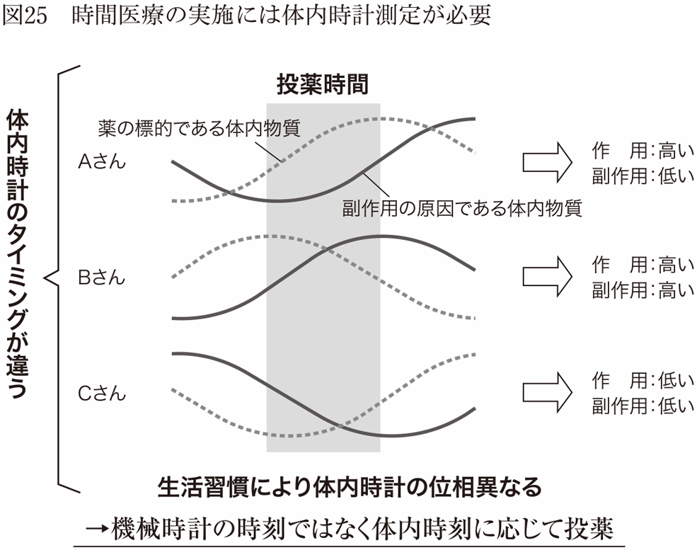
また、本書では、多くの現代病において体内時計と生活リズムのずれが要因の一つになっているという話をしてきました。であるならば、医療において体内時計が治療のターゲットになるわけですから、ここでも体内時計の測定というのは意義があると考えられます。
大学生の気分障害及び睡眠障害の診断にも有効です。私が勤務する、ここ山口大学においてもそうですが、現状において、学生の生活リズムの乱れは顕著です。これは大学生だけではありません。少しずつですが着実に、中学生や小学生までも夜型生活の習慣が染みついてきています。体内時計診断を定期的に実施できれば、客観的なデータにもとづいた生活指導もやりやすくなります。生活習慣の改善は簡単なようでいて、実際は親や先生に言われてもなかなか直らないものです。健康診断で自分の体内時計の状態が診断として出てくると、個々人の意識も変化するでしょうし、自覚が芽生えることが期待できます。
事実、私も、自分自身の体内時計測定結果を見た際に、初めて自分の中に時計が存在することを強く意識することができました。長い間、体内時計の研究を続けてきたわけですが、私自身も体内時計を自然現象の一つとして客観的に見ていただけだったのだと気がつきました。それまでは、要するに他人事だったのです。
しかしながら、現時点において、病院の検査項目の中に体内時計に関するものは存在しません。医師を対象とした講演を何度もしてきて気がついたことですが、体内時計のことをよく知らない医師が多数派だと思います。このように、医療現場において体内時計の概念が未だ浸透していないことは、体内時計診断が行われない原因でもあります。とはいえ、そもそも体内時計を診断するための簡易な方法というものがないために、取り入れたくても取り入れることができません。
そこで私たちは、体内時計診断の医療への導入の足がかりとして、簡易な体内時計診断法の開発に取り組んでいます。
体内時計を評価するには、時計遺伝子活性を測定する必要があります。すでに述べたように、時計遺伝子活動が約24時間周期で振動することで、私たちの身体の中のさまざまな機能は振動を示します。例えば、体温や血圧は早朝に最も低く、だんだん夕方に向かって高くなります。このような振動は、時計遺伝子がつくり出しているのです。体内時計は私たちの身体を構成するほとんどの細胞の中に存在しているのですから、例えば、生きている皮膚の細胞を一個だけ取り出して培養したとしても、そこには体内時計が存在します。
つまり、生きている細胞が採取できれば、体内時計を評価できるのです。ただし、人間の遺伝子活動を測るには、身体を極力傷つけずに生きている細胞を集める必要があります。そこで私たちは、体毛（頭髪やあごひげ）を引き抜いた時に、根本に細胞群（毛包細胞）がついてくることに着目しました。
毛を抜いた時に根本についている、あの白い塊です（図26）。
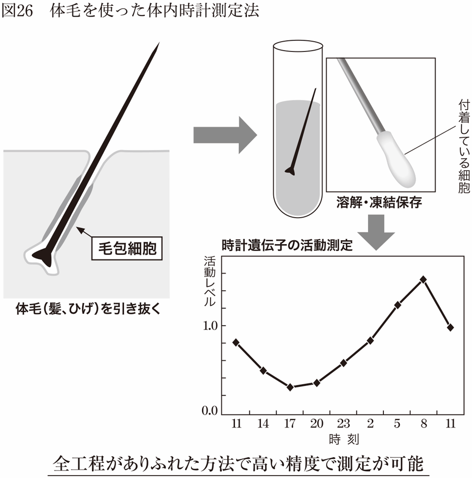
主に男性に被験者として参加してもらいましたが、細胞がたくさん付いている毛根が採れれば、数本程度の頭髪、またはあごひげから、時計遺伝子の活動をはかることができます。ただし、採れる細胞数が少ない被験者もいるので、現時点ではすべての人に実施可能とは言い難い実験です。
私たちは、生活リズム習慣の異なる被験者の時計遺伝子活性を測定しました。つまり、朝型生活の人と夜型生活を習慣的に続けている人を比較したのです。毛包細胞の時計遺伝子の活動タイミングは、朝型の被験者ほど、早い時刻に現れました。毛包細胞の時計遺伝子の活動振動は、被験者の生活習慣と連動しているのです。この測定法は未だ改良すべき点が数多くありますが、簡易に体内時計を診断できる手法を確立するための足がかりになると期待しています（図27）。
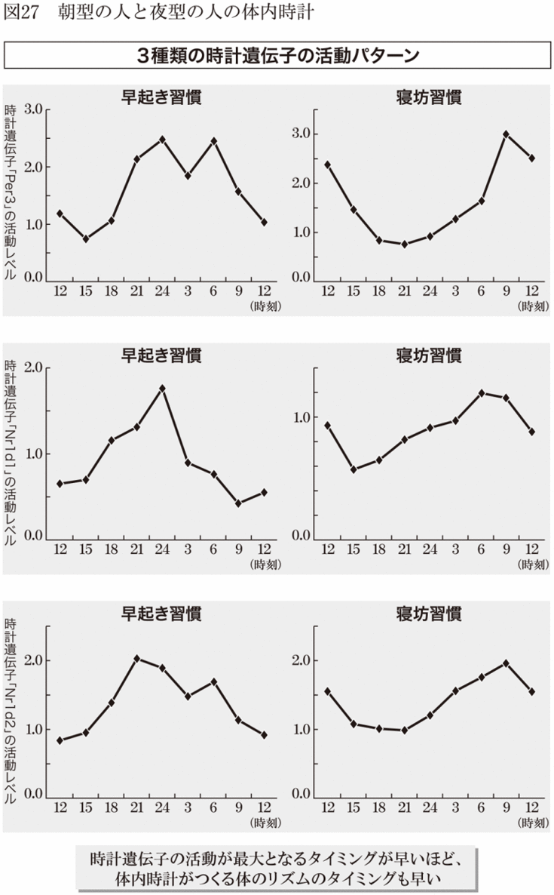
また、生活リズムの朝型化実験も実施しました。つまり、いつもの習慣よりも、５日ごとに１時間ずつ早起きにしていくのです。食事の時間も１時間ずつ早めていきます。こうすることで、３週間で生活リズムが４時間早くなります。この条件で実験を行った結果、毛包細胞の体内時計（時計遺伝子の活動リズム）も、やはり朝型にずれていました。毛包細胞の体内時計は、体内時計を評価するために利用可能だと言えます。
ところで、生活リズムが４時間早くなったのに対して、体内時計は３時間しか早くなっていませんでした。この実験では、体内時計の修正を助けるために、強い光を起床後に浴びるようにしましたが、それでも４時間の朝型化とはなりませんでした。本書で何度もお話ししましたが、光や食事のタイミングを工夫したとしても、それ以外の環境因子が変わらない中で体内時計を早めるにはとても時間がかかりそうです。
この実験法を使って、24時間社会の象徴と言える昼夜交替勤務者の時計遺伝子の活動状態を調べました。自動車部品製造工場の、20〜30代の男性６人の頭髪を採取したのです。この６人は、１週間交替で早番の週（朝６時から夕方３時まで）と遅番の週（夕方３時から夜中０時まで）で働いています。これに伴い、彼らの生活リズム（起床および食事時刻など）は、平均で７時間ほど毎週前後に変化します。このように生活習慣が安定しない人たちの体内時計は、はたして朝型でしょうか、あるいは夜型なのでしょうか。
１週目（早番）、２週目（遅番）、３週目（再び早番）の週末に、３時間毎に24時間にわたって頭髪を採取し、時計遺伝子の活動リズムを測定しました。労働者が時差ぼけに陥らないためには、生活リズムの変化に合わせて、体内時計も修正されていることが望ましいと考えられます。ところが、生活リズムが毎週７時間もダイナミックに変化するのに対して、毛包細胞の時計遺伝子の活動タイミングは２時間程度しか変化しなかったのです（図28）。
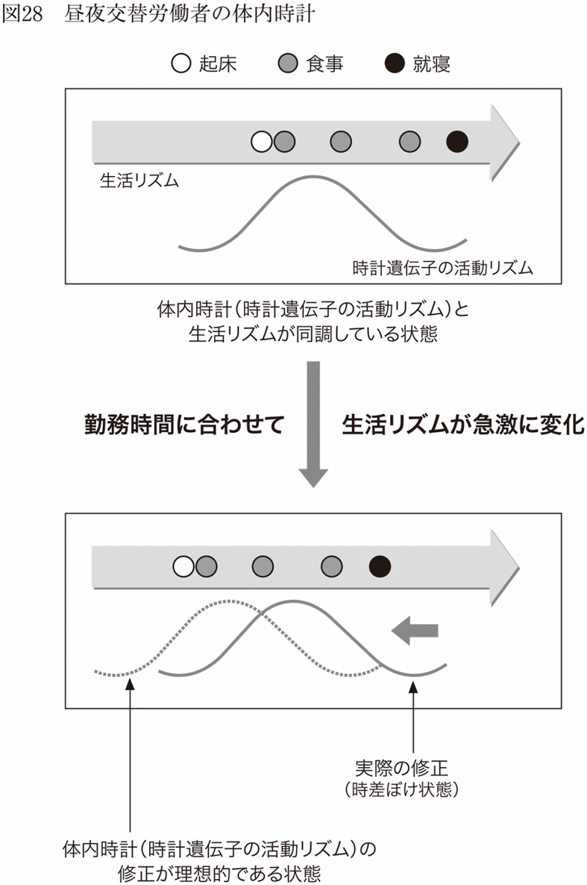
通常、時差ぼけの修正には一日あたり１時間程度可能と言われていますが、それは海外においてあらゆる環境要因が変化した場合の話です。日本にとどまって、起床や摂食時刻等の限られた環境要因だけが変化するという条件では、体内時計の調節にはとても時間がかかるでしょう。
今回の結果からすると、このような労働者は、慢性的な時差ぼけの中で生活していることになります。譬えるなら、ハワイに到着して何日か過ごし体がハワイ時間に馴染みはじめてきたところで、つまり体内時計が完全にハワイ時間になる前に日本に戻り、今度は日本時間に体内時計が戻ってきたところで、日本時間になりきらないうちにハワイに旅立つ......というイメージでしょうか。
これは過酷な状況です。現代社会において昼夜交替勤務をなくすことは不可能かもしれません。しかしながら、体内時計を考慮して労働環境を見直すことは、労働者の健康と勤労意欲のためにも不可欠です。
私はこれまで、体内時計の分子メカニズムの研究、すなわち時計遺伝子がどのようにして体内時計をつくり出しているのか、そのしくみを追究する研究を主に行ってきました。大学院生の頃、研究室の片隅で一人細々と始め、このような研究をかれこれ15年も続けています。体内時計の研究はそのしくみを調べることも興味深いのですが、しくみ以上に、私たち現代人にとって欠かすことのできない研究領域になってきているのが、さらに興味深い点です。私自身の研究においても、上記の体内時計測定法の研究成果によって、医療面から貢献できる可能性があると考えています。
先ほどの毛包細胞を用いた体内時計測定法の成果は、２０１０年８月にアメリカの科学誌「PNAS」に掲載されたのですが、私たちの予想をはるかに上回る一般からの反響がありました。日本国内でも朝日、毎日、読売、日経、産経新聞などで掲載されただけではなく、海外の科学誌「Science」「National Geographic」「Scientific American」などでも取り上げられたのには本当に驚きました。これらは海外の一般向けの科学雑誌であり、「National Geographic」にいたっては、世界で９００万部出版されているマンモス雑誌です。体内時計への意識は社会の中で未だ漠然とはしているものの、潜在的に重要性が高まってきていることを実感しました。
実際、前述したように、２０１３年の４月に製薬会社の武田薬品工業による体内時計のＣＭがテレビで放映されていました。国内最大手の製薬会社が体内時計に焦点を合わせていることは、社会的にも大きなインパクトを放っていると思います。
このように社会状況が変化する中、「現代生活と体内時計の矛盾」が解決されるために、私たちの研究が広く世の中に役に立つことを夢見ています。また、体内時計の診断だけではなく、現在、私たちは体内時計の調節を助けるための研究も展開しています。体内時計を修正するには光と食事だけでは時間がかかることは前述しました。この修正を、少しでも手助けできる物質を探したいと思っています。
ただ、研究には、お金と時間がかかるものです。研究室の規模や研究内容によって異なりますが、例えば私たちの研究の場合、年間１０００万ほどの研究消耗品費（試薬や動物維持費用）を要します。現在、政府からの３年間の支援で研究を続けていますが、先ほどの体内時計診断法などの実用化にはまだまだハードルがあるために時間がかかります。そのため、企業などの民間組織からの支援を期待したいところですが、大きな利益が望めない研究となると、なかなか支援をいただけないという現状があります。
大学から毎年支給される研究費は年間30万円程度です。これでは１ヶ月ともちません。また、政府の科学研究費補助金では、なかなか十分な金額を得ることはできず、大きな金額の研究費の採択率は低く、一部の研究室に集中しています。私もそうですが、研究費申請の書類作成で多くの時間が消耗しています。政府は科学政策に力を入れていますが、現在のシステムでは、残念ながら長期的な視野でじっくりと研究を進めることが難しいと言えます。
私たちは景気の変動で一喜一憂しがちですが、もっと長い時間軸スケールで客観的に比較すれば、現代社会はとても豊かであることに気がつきます。栄養不足で行き倒れる可能性はほとんどなく、科学の発展とともに医療機関の技術も高度に発達しており、社会保障も充実しています。あらゆる情報を、インターネットを含め数多くの媒体から入手することができます。おまけに、娯楽も充実しており、時間とお金さえあれば生活を存分に楽しむことができます。
それにもかかわらず、私たちの体の適応力を超えた生活環境の変化によって新しいタイプの病気が次々と現れてきました。食べ物の変化、運動不足、そして慢性的精神ストレス、これら三つの要因が循環器疾患やガンなどの現代疾患の増加に大きく影響していると考えられています。そして、四つ目の要因として、本書で説明してきた日常に潜む慢性的な時差ぼけが考えられます。
しかし、残念ながら、体内時計の観点を積極的に医療に取り込む動きは、現状ではとても限られています。研究データの蓄積とともに、行政の積極的な働きかけがなければ、体内時計を医療対象として考える医師はなかなか増えることはないでしょう。
そうであるなら、医療に先んじて、まずは個々人のレベルで日常的に起きる時差ぼけを防ぐことに取り組むことが現実的です。
費用をかけずに、簡単に、心身ともに元気で健康な生活ができるようになるのであれば、まずは自分を取り囲む光環境を見直して、さらに夜のさまざまな誘惑を断ち切って生活習慣を安定的にすることを考えてみてはいかがでしょうか。週末であっても変わらず安定した生活リズムを心がけ、夜の光を減らして体内時計の夜型化を防ぐことで、今よりも元気になれるはずです。
皮肉なことに、夜は暗黒が支配していた約１００年前までは、体内時計のことなど知らなくても、身体のリズムがずれることなどありませんでした。一方、現代に生きる私たちは、急速な生活環境の変化に対してあまりにも無防備な状態で毎日を過ごしています。そして、いつの間にか体中に病気のリスクを抱え込んでいるのです。
将来、体内時計が医療の標的として本格的に動き出す日が来るかもしれません。しかし、それから慌てて生活習慣を改善しても、遅すぎるのではないでしょうか。今、まさに24時間社会にさらされている現代人こそ、体内時計を正しく理解して、自分自身で身を守る必要があるのです。
本書の冒頭にも記しましたが、専門性の高い研究の成果を一般向けの書籍で伝えるのは、研究者にとって専門書を書くよりもずっと骨が折れる作業だと言えます。日本には本当にたくさんの優れた研究者がいますが、研究の競争がとても激しいために、そのような書籍の執筆に時間を割くのには消極的な方が多いと思います。
自分が精魂込めて進めてきた研究の成果を論文として発表する前に、ある日突然、外国の研究グループから似通った報告がされることは、私自身も何度も経験しています。そういう時は、何年もかけて得たデータの価値が暴落することになるので、ほんとうにやりきれない気持ちになるものです。それに、研究者は真実を追究するのが仕事ですから、自分の研究に関わる内容に関して間違った情報を垂れ流されることに怒りすら感じることがあります。もし、書いた本の中に間違いがあった場合、周囲の研究者からの指摘はとても厳しいものになります。このような雰囲気では、研究者は一般書の執筆に対して前向きにはなれません。
そのせいなのでしょう。体内時計は人間の生活や健康に深く関わっていることから本の需要は低くないと思うのですが、専門家が一般の方に向けて書いた本がとても少ないのが現状です。私も本書を執筆するまで、一般向けの書籍は十分にあると思い込んでいました。しかし、そんなことはありませんでした。やはり、研究者が一般読者に向けて本を執筆するというのは、それなりのエネルギーと覚悟が必要なのでしょう。
ただ、一国民として考えてみると、科学の進歩の成果を情報発信することで、人々の生活に役立ててほしいと感じるのは自然ではないかと思います。よくある言い方で言えば、研究者の多くは国民が払った税金で研究しているのだから、国民の生活に還元するのは当然という、例の心理です。特に体内時計のように、健康や生活に密着しているものについての研究ならば、なおさらこの責務がつきまとうのだと思います。ですから、研究の手を止めてでも本書を執筆することには意味があると私は判断しました。
ところで、体内時計研究の最前線では最新の研究成果が次々と発表されています。毎日毎日、関連する論文は10報ぐらい出てきます。体内時計に関する研究は、遺伝子などを標的とした実験室での研究だけでなく、統計的な調査研究、数理モデルの研究、そして最近では臨床医学の領域まで関わってきています。学会に参加すると、臨床医の先生から数学の研究者まで、いろいろな分野の研究者が入り乱れて発表しています。細菌、植物、昆虫、魚など、いろいろな生物の体内時計に関する発表もあります。そのすべてを把握するのは容易ではないため、本書には私の勉強不足のせいで不適切な記述があるかもしれません。しかし、可能な限り、そのようなことは避けるべく執筆しました。
ただ、研究においては、当たり前だと思っていたことが突然覆されることがあります。例えば本書では、体内時計にとって時計遺伝子は絶対的な存在だと述べてきましたが、このことでさえも覆される可能性があります（事実、少しずつその兆候が出始めています）。それはおそらく、現代の生物学の限界を示しているのだと思います。自然の秘密を解き明かすために、現代の生物学が持つテクノロジーを駆使して調べても、明確な答えを出すには途方もない時間と労力（そしてお金）がかかるのです。
それでも、体内時計が健康に関わっていて、この存在を無視して生き続けることは避けるべきだという主張は今後もずっと変わらないと思います。もちろん、北極圏のトナカイのように、一日の変化が不明瞭な現代の生活環境への適応に成功した人がもし出現しているならば、事情が変わってくる可能性もあります。すなわち、しっかりとした体内時計を放棄した形質を持つ人たちです。そのような人たちは、たとえ生活リズムが不規則でも、体への影響は低いでしょう。現代の生活環境がこのまま続くのであれば、ひょっとすると、そのような形質を持つ人たちが増えてくるのかもしれません。しかし、それはまだまだ遠い未来の話ではないでしょうか。基本的には、科学がどんなに発達したとしても、体の仕様は昔のままなのです。
ですから、たとえ人間といえども、体の時計に背いて生きることは得策ではないのです。
二〇一三年一一月
明石 真
明石真（あかしまこと）
1973年北海道旭川市生まれ。国立大学法人山口大学時間学研究所教授。'97年、京都大学農学部卒業、2002年、京都大学大学院理学研究科博士課程修了。京都大学大学院生命科学研究科学振研究員、大阪バイオサイエンス研究所学振研究員、佐賀大学医学部循環器内科助授などを経て現職。専門は時間生物学、分子生物学。生物の体内時計や、その本体である時計遺伝子の研究を行っている。'10年、日本時間生物学会学術奨励賞、'11年、文部科学大臣表彰「科学技術賞（理解増進部門）」を受賞。
体内時計のふしぎ
2013年12月20日初版１刷発行
2014年１月10日電子書籍版発行
著 者―明石真
発行者―丸山弘順
装 幀―アラン・チャン
発行所―株式会社光文社
東京都文京区音羽1-16-6（〒112-8011）
電 話―編集部 03（5395）8289
メール―sinsyo@kobunsha.com
®本書の全部または一部を無断で複写複製（コピー）することは、著作権法上での例外を除き、禁じられています。
©Makoto Akashi 2013